This graph is the recorded pre-reconciliation source-era discovery. It includes shared non-job possibilities. Current native diagnostics above carry their own actual Main/harness hashes; the graph is not a current all-use or all-mounted-quality claim.
D1V2-0001

assets/art35/cards/mg/carrot_carrot.pngUnreviewed source. Actual drawing, mounted quality and action review pending.
1 declared/candidate reference sites; shared dependency branches may be outside the Day One jobs.
D1V2-0002

assets/art35/cards/mg/k_pine_k_pine.pngUnreviewed source. Actual drawing, mounted quality and action review pending.
2 declared/candidate reference sites; shared dependency branches may be outside the Day One jobs.
D1V2-0003

assets/art35/cards/mg/rainbow_swatch_rainbow_swatch.pngUnreviewed source. Actual drawing, mounted quality and action review pending.
1 declared/candidate reference sites; shared dependency branches may be outside the Day One jobs.
D1V2-0004

assets/art35/cards/mg/snowman_snowman.pngUnreviewed source. Actual drawing, mounted quality and action review pending.
1 declared/candidate reference sites; shared dependency branches may be outside the Day One jobs.
D1V2-0005

assets/art35/cards/mg/sprout_sprout.pngUnreviewed source. Actual drawing, mounted quality and action review pending.
1 declared/candidate reference sites; shared dependency branches may be outside the Day One jobs.
D1V2-0006

assets/art35/cards/mg/star_star.pngUnreviewed source. Actual drawing, mounted quality and action review pending.
3 declared/candidate reference sites; shared dependency branches may be outside the Day One jobs.
D1V2-0007

assets/art35/cards/mg/sun_sun.pngUnreviewed source. Actual drawing, mounted quality and action review pending.
2 declared/candidate reference sites; shared dependency branches may be outside the Day One jobs.
D1V2-0008

assets/art35/cards/style3/crystal_facet_crystal_facet.pngUnreviewed source. Actual drawing, mounted quality and action review pending.
3 declared/candidate reference sites; shared dependency branches may be outside the Day One jobs.
D1V2-0009
assets/book/baby_doll.pngUnreviewed source. Actual drawing, mounted quality and action review pending.
1 declared/candidate reference sites; shared dependency branches may be outside the Day One jobs.
D1V2-0010
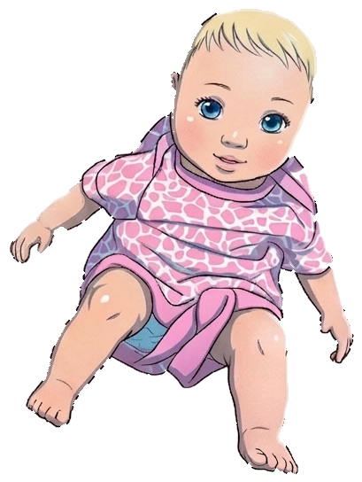
assets/book/baby_doll2.pngUnreviewed source. Actual drawing, mounted quality and action review pending.
1 declared/candidate reference sites; shared dependency branches may be outside the Day One jobs.
D1V2-0011
assets/book/baby_doll3.pngUnreviewed source. Actual drawing, mounted quality and action review pending.
1 declared/candidate reference sites; shared dependency branches may be outside the Day One jobs.
D1V2-0012
assets/book/doll_bunny.pngEarlier exact-byte source opinion 3.4/5. Actual drawing, mounted quality and action review pending.
3 declared/candidate reference sites; shared dependency branches may be outside the Day One jobs.
D1V2-0013
assets/book/doll_cat.pngEarlier exact-byte source opinion 3.4/5. Actual drawing, mounted quality and action review pending.
3 declared/candidate reference sites; shared dependency branches may be outside the Day One jobs.
D1V2-0014
assets/book/friendship_flower.pngUnreviewed source. Actual drawing, mounted quality and action review pending.
2 declared/candidate reference sites; shared dependency branches may be outside the Day One jobs.
D1V2-0015
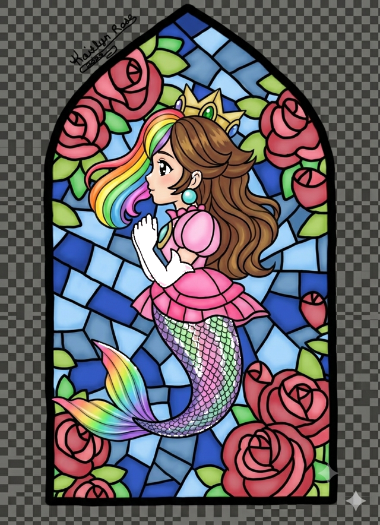
assets/book/hall/glass_mermaid.pngUnreviewed source. Actual drawing, mounted quality and action review pending.
1 declared/candidate reference sites; shared dependency branches may be outside the Day One jobs.
D1V2-0016

assets/book/hall/p_garden.jpgEarlier exact-byte source opinion 4.6/5. Actual drawing, mounted quality and action review pending.
1 declared/candidate reference sites; shared dependency branches may be outside the Day One jobs.
D1V2-0017

assets/book/hall/p_slide.jpgEarlier exact-byte source opinion 4.6/5. Actual drawing, mounted quality and action review pending.
2 declared/candidate reference sites; shared dependency branches may be outside the Day One jobs.
D1V2-0018

assets/book/hall/p_snowman.jpgEarlier exact-byte source opinion 4.6/5. Actual drawing, mounted quality and action review pending.
1 declared/candidate reference sites; shared dependency branches may be outside the Day One jobs.
D1V2-0019

assets/book/hall/p_trampoline.jpgEarlier exact-byte source opinion 4.6/5. Actual drawing, mounted quality and action review pending.
1 declared/candidate reference sites; shared dependency branches may be outside the Day One jobs.
D1V2-0020

assets/book/hall/p_xmas.jpgEarlier exact-byte source opinion 4.6/5. Actual drawing, mounted quality and action review pending.
1 declared/candidate reference sites; shared dependency branches may be outside the Day One jobs.
D1V2-0021

assets/castle/day_one_art_studio/grime_desk.pngEarlier exact-byte source opinion 4.0/5. Actual drawing, mounted quality and action review pending.
1 declared/candidate reference sites; shared dependency branches may be outside the Day One jobs.
D1V2-0022

assets/castle/day_one_art_studio/grime_left.pngEarlier exact-byte source opinion 4.1/5. Actual drawing, mounted quality and action review pending.
1 declared/candidate reference sites; shared dependency branches may be outside the Day One jobs.
D1V2-0023

assets/castle/day_one_art_studio/grime_right.pngEarlier exact-byte source opinion 4.1/5. Actual drawing, mounted quality and action review pending.
1 declared/candidate reference sites; shared dependency branches may be outside the Day One jobs.
D1V2-0024

assets/castle/day_one_art_studio/loose_brush_bundle.pngEarlier exact-byte source opinion 4.6/5. Actual drawing, mounted quality and action review pending.
1 declared/candidate reference sites; shared dependency branches may be outside the Day One jobs.
D1V2-0025

assets/castle/day_one_art_studio/magic_cleaning_brush.pngEarlier exact-byte source opinion 4.7/5. Actual drawing, mounted quality and action review pending.
5 declared/candidate reference sites; shared dependency branches may be outside the Day One jobs.
D1V2-0026

assets/castle/day_one_art_studio/paint_bottle_blue.pngEarlier exact-byte source opinion 4.6/5. Actual drawing, mounted quality and action review pending.
1 declared/candidate reference sites; shared dependency branches may be outside the Day One jobs.
D1V2-0027

assets/castle/day_one_art_studio/paint_bottle_pink.pngEarlier exact-byte source opinion 4.6/5. Actual drawing, mounted quality and action review pending.
1 declared/candidate reference sites; shared dependency branches may be outside the Day One jobs.
D1V2-0028

assets/castle/day_one_art_studio/paint_cups.pngEarlier exact-byte source opinion 4.6/5. Actual drawing, mounted quality and action review pending.
1 declared/candidate reference sites; shared dependency branches may be outside the Day One jobs.
D1V2-0029

assets/castle/day_one_pool/activities/cleanup_basket.pngEarlier exact-byte source opinion 4.6/5. Actual drawing, mounted quality and action review pending.
3 declared/candidate reference sites; shared dependency branches may be outside the Day One jobs.
D1V2-0030

assets/castle/day_one_pool/activities/floating_trash_atlas.pngEarlier exact-byte source opinion 4.4/5. Actual drawing, mounted quality and action review pending.
1 declared/candidate reference sites; shared dependency branches may be outside the Day One jobs.
D1V2-0031

assets/castle/day_one_pool/activities/pool_skimmer.pngEarlier exact-byte source opinion 4.5/5. Actual drawing, mounted quality and action review pending.
1 declared/candidate reference sites; shared dependency branches may be outside the Day One jobs.
D1V2-0032

assets/castle/day_one_pool/activities/seahorse_mouth_trash.pngEarlier exact-byte source opinion 4.3/5. Actual drawing, mounted quality and action review pending.
1 declared/candidate reference sites; shared dependency branches may be outside the Day One jobs.
D1V2-0033

assets/castle/day_one_pool/activities/seahorse_sick_clear_mouth.pngEarlier exact-byte source opinion 4.4/5. Actual drawing, mounted quality and action review pending.
1 declared/candidate reference sites; shared dependency branches may be outside the Day One jobs.
D1V2-0034

assets/castle/day_one_pool/activities/waterfall_clogged_original_match.pngEarlier exact-byte source opinion 4.2/5. Actual drawing, mounted quality and action review pending.
1 declared/candidate reference sites; shared dependency branches may be outside the Day One jobs.
D1V2-0035

assets/castle/day_one_pool/activities/waterfall_scrubber.pngEarlier exact-byte source opinion 4.5/5. Actual drawing, mounted quality and action review pending.
1 declared/candidate reference sites; shared dependency branches may be outside the Day One jobs.
D1V2-0036

assets/castle/dirty_cleanup_2d/critters/dust_bunnies/dust_bunny_curl_ears.pngEarlier exact-byte source opinion 4.6/5. Actual drawing, mounted quality and action review pending.
2 declared/candidate reference sites; shared dependency branches may be outside the Day One jobs.
D1V2-0037

assets/castle/dirty_cleanup_2d/critters/dust_bunnies/dust_bunny_hop.pngUnreviewed source. Actual drawing, mounted quality and action review pending.
3 declared/candidate reference sites; shared dependency branches may be outside the Day One jobs.
D1V2-0038

assets/castle/dirty_cleanup_2d/critters/dust_bunnies/dust_bunny_shell_hide.pngEarlier exact-byte source opinion 4.6/5. Actual drawing, mounted quality and action review pending.
2 declared/candidate reference sites; shared dependency branches may be outside the Day One jobs.
D1V2-0039

assets/castle/dirty_cleanup_2d/critters/dust_bunnies/dust_bunny_sleepy.pngUnreviewed source. Actual drawing, mounted quality and action review pending.
1 declared/candidate reference sites; shared dependency branches may be outside the Day One jobs.
D1V2-0040

assets/castle/dirty_cleanup_2d/critters/dust_bunnies/dust_bunny_swimming.pngEarlier exact-byte source opinion 4.6/5. Actual drawing, mounted quality and action review pending.
1 declared/candidate reference sites; shared dependency branches may be outside the Day One jobs.
D1V2-0041

assets/castle/dirty_cleanup_2d/effects/fx_soap_bubbles.pngEarlier exact-byte source opinion 4.0/5. Actual drawing, mounted quality and action review pending.
2 declared/candidate reference sites; shared dependency branches may be outside the Day One jobs.
D1V2-0042

assets/castle/dirty_cleanup_2d/effects/fx_wipe_swoosh.pngEarlier exact-byte source opinion 4.5/5. Actual drawing, mounted quality and action review pending.
1 declared/candidate reference sites; shared dependency branches may be outside the Day One jobs.
D1V2-0043

assets/castle/dirty_cleanup_2d/targets/target_bath_soap_ring.pngEarlier exact-byte source opinion 4.5/5. Actual drawing, mounted quality and action review pending.
1 declared/candidate reference sites; shared dependency branches may be outside the Day One jobs.
D1V2-0044

assets/castle/dirty_cleanup_2d/targets/target_sink_grime_v1.pngEarlier exact-byte source opinion 4.3/5. Actual drawing, mounted quality and action review pending.
2 declared/candidate reference sites; shared dependency branches may be outside the Day One jobs.
D1V2-0045

assets/castle/dirty_cleanup_2d/targets/target_tub_grime_v1.pngEarlier exact-byte source opinion 4.3/5. Actual drawing, mounted quality and action review pending.
1 declared/candidate reference sites; shared dependency branches may be outside the Day One jobs.
D1V2-0046

assets/castle/dirty_cleanup_2d/tools/tool_star_sponge.pngEarlier exact-byte source opinion 4.6/5. Actual drawing, mounted quality and action review pending.
2 declared/candidate reference sites; shared dependency branches may be outside the Day One jobs.
D1V2-0047

assets/castle/training/ghost_hand.pngEarlier exact-byte source opinion 4.6/5. Actual drawing, mounted quality and action review pending.
10 declared/candidate reference sites; shared dependency branches may be outside the Day One jobs.
D1V2-0048

assets/castle/training/training_grotto_backdrop.pngUnreviewed source. Actual drawing, mounted quality and action review pending.
1 declared/candidate reference sites; shared dependency branches may be outside the Day One jobs.
D1V2-0049

assets/castle/training/verb_chip_hold.pngUnreviewed source. Actual drawing, mounted quality and action review pending.
1 declared/candidate reference sites; shared dependency branches may be outside the Day One jobs.
D1V2-0050

assets/castle/training/verb_chip_tap.pngUnreviewed source. Actual drawing, mounted quality and action review pending.
1 declared/candidate reference sites; shared dependency branches may be outside the Day One jobs.
D1V2-0051
assets/chapter2/birthday/chapter2_candied_strawberries_tray.pngEarlier exact-byte source opinion 4.7/5. Actual drawing, mounted quality and action review pending.
2 declared/candidate reference sites; shared dependency branches may be outside the Day One jobs.
D1V2-0052
assets/chapter2/birthday/chapter2_chef_baked_tiers_unstacked.pngEarlier exact-byte source opinion 4.5/5. Actual drawing, mounted quality and action review pending.
2 declared/candidate reference sites; shared dependency branches may be outside the Day One jobs.
D1V2-0053
assets/chapter2/birthday/chapter2_chef_batter_stirred.pngEarlier exact-byte source opinion 4.7/5. Actual drawing, mounted quality and action review pending.
2 declared/candidate reference sites; shared dependency branches may be outside the Day One jobs.
D1V2-0054
assets/chapter2/birthday/chapter2_chef_batter_unstirred.pngEarlier exact-byte source opinion 4.6/5. Actual drawing, mounted quality and action review pending.
2 declared/candidate reference sites; shared dependency branches may be outside the Day One jobs.
D1V2-0055
assets/chapter2/birthday/chapter2_chef_frosted_rainbow_cake.pngEarlier exact-byte source opinion 4.7/5. Actual drawing, mounted quality and action review pending.
5 declared/candidate reference sites; shared dependency branches may be outside the Day One jobs.
D1V2-0056
assets/chapter2/birthday/chapter2_chef_stacked_unfrosted_cake.pngEarlier exact-byte source opinion 4.6/5. Actual drawing, mounted quality and action review pending.
2 declared/candidate reference sites; shared dependency branches may be outside the Day One jobs.
D1V2-0057
assets/chapter2/birthday/chapter2_grand_five_strawberry_cake.pngEarlier exact-byte source opinion 4.8/5. Actual drawing, mounted quality and action review pending.
5 declared/candidate reference sites; shared dependency branches may be outside the Day One jobs.
D1V2-0058
assets/chapter2/birthday/rainbow_candle_large_flame.pngEarlier exact-byte source opinion 4.7/5. Actual drawing, mounted quality and action review pending.
1 declared/candidate reference sites; shared dependency branches may be outside the Day One jobs.
D1V2-0059
assets/chapter2/birthday/rainbow_candle_unlit.pngEarlier exact-byte source opinion 4.7/5. Actual drawing, mounted quality and action review pending.
2 declared/candidate reference sites; shared dependency branches may be outside the Day One jobs.
D1V2-0060
assets/chapter2/birthday/sky_lagoon_strawberry_cluster.pngEarlier exact-byte source opinion 4.5/5. Actual drawing, mounted quality and action review pending.
5 declared/candidate reference sites; shared dependency branches may be outside the Day One jobs.
D1V2-0061
assets/chapter2/birthday/sky_lagoon_strawberry_single.pngEarlier exact-byte source opinion 4.7/5. Actual drawing, mounted quality and action review pending.
10 declared/candidate reference sites; shared dependency branches may be outside the Day One jobs.
D1V2-0062
assets/chapter2/ember_alpha/king_v4_cutout.pngEarlier exact-byte source opinion 4.0/5. Actual drawing, mounted quality and action review pending.
1 declared/candidate reference sites; shared dependency branches may be outside the Day One jobs.
D1V2-0063
assets/chapter2/ember_alpha/prince_idle.pngEarlier exact-byte source opinion 4.0/5. Actual drawing, mounted quality and action review pending.
1 declared/candidate reference sites; shared dependency branches may be outside the Day One jobs.
D1V2-0064

assets/characters/companions/baby_eagle.pngEarlier exact-byte source opinion 4.6/5. Actual drawing, mounted quality and action review pending.
7 declared/candidate reference sites; shared dependency branches may be outside the Day One jobs.
D1V2-0065
assets/characters/friends/daddy.webpUnreviewed source. Actual drawing, mounted quality and action review pending.
3 declared/candidate reference sites; shared dependency branches may be outside the Day One jobs.
D1V2-0066
assets/characters/friends/huluu.pngUnreviewed source. Actual drawing, mounted quality and action review pending.
8 declared/candidate reference sites; shared dependency branches may be outside the Day One jobs.
D1V2-0067
assets/characters/friends/mama_baby.pngUnreviewed source. Actual drawing, mounted quality and action review pending.
1 declared/candidate reference sites; shared dependency branches may be outside the Day One jobs.
D1V2-0068
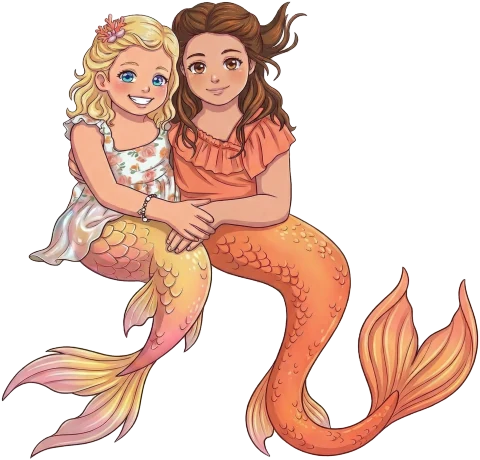
assets/characters/friends/two_friends.pngUnreviewed source. Actual drawing, mounted quality and action review pending.
2 declared/candidate reference sites; shared dependency branches may be outside the Day One jobs.
D1V2-0069
assets/characters/friends/wacky_chuck.pngUnreviewed source. Actual drawing, mounted quality and action review pending.
2 declared/candidate reference sites; shared dependency branches may be outside the Day One jobs.
D1V2-0070

assets/characters/roshan_25d/roshan_base.pngEarlier exact-byte source opinion 4.7/5. Actual drawing, mounted quality and action review pending.
9 declared/candidate reference sites; shared dependency branches may be outside the Day One jobs.
D1V2-0071

assets/characters/roshan_25d/roshan_directional.pngEarlier exact-byte source opinion 4.6/5. Actual drawing, mounted quality and action review pending.
5 declared/candidate reference sites; shared dependency branches may be outside the Day One jobs.
D1V2-0072
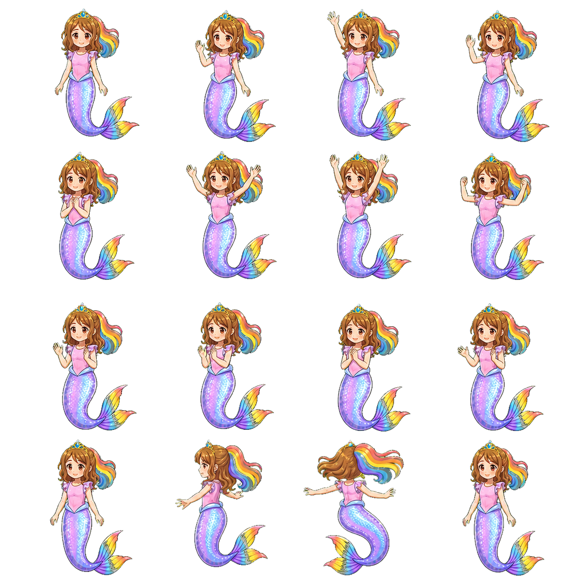
assets/characters/roshan_25d/roshan_gesture_a.pngUnreviewed source. Actual drawing, mounted quality and action review pending.
1 declared/candidate reference sites; shared dependency branches may be outside the Day One jobs.
D1V2-0073
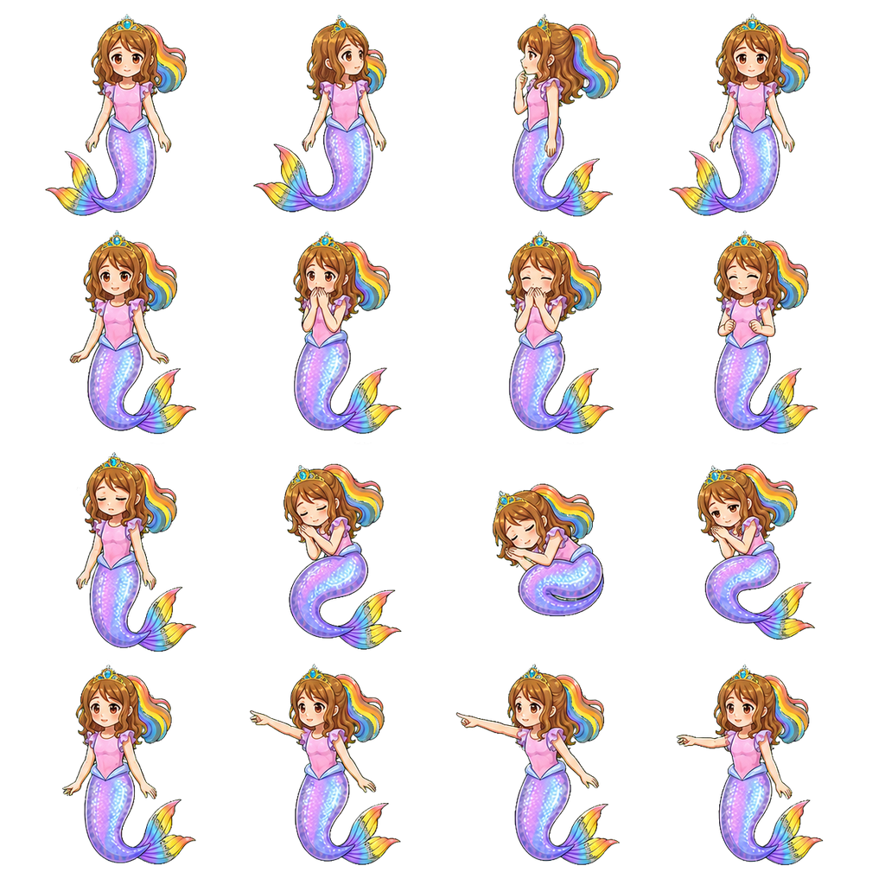
assets/characters/roshan_25d/roshan_gesture_b.pngEarlier exact-byte source opinion 4.4/5. Actual drawing, mounted quality and action review pending.
1 declared/candidate reference sites; shared dependency branches may be outside the Day One jobs.
D1V2-0074

assets/characters/roshan_25d/roshan_swim_back.pngEarlier exact-byte source opinion 4.5/5. Actual drawing, mounted quality and action review pending.
3 declared/candidate reference sites; shared dependency branches may be outside the Day One jobs.
D1V2-0075

assets/characters/roshan_25d/roshan_swim_front.pngEarlier exact-byte source opinion 4.4/5. Actual drawing, mounted quality and action review pending.
2 declared/candidate reference sites; shared dependency branches may be outside the Day One jobs.
D1V2-0076

assets/characters/rumi/rumi_eight_pose_runtime.pngEarlier exact-byte source opinion 4.5/5. Actual drawing, mounted quality and action review pending.
5 declared/candidate reference sites; shared dependency branches may be outside the Day One jobs.
D1V2-0077

assets/characters/rumi/rumi_pool_idle_swim_atlas.pngEarlier exact-byte source opinion 4.5/5. Actual drawing, mounted quality and action review pending.
1 declared/candidate reference sites; shared dependency branches may be outside the Day One jobs.
D1V2-0078
assets/characters/skins/fairy_mermaid.pngUnreviewed source. Actual drawing, mounted quality and action review pending.
11 declared/candidate reference sites; shared dependency branches may be outside the Day One jobs.
D1V2-0079
assets/characters/stickers/daddy.pngUnreviewed source. Actual drawing, mounted quality and action review pending.
1 declared/candidate reference sites; shared dependency branches may be outside the Day One jobs.
D1V2-0080

assets/effects/grand_puff/purple_vortex_v4.pngEarlier exact-byte source opinion 4.6/5. Actual drawing, mounted quality and action review pending.
1 declared/candidate reference sites; shared dependency branches may be outside the Day One jobs.
D1V2-0081
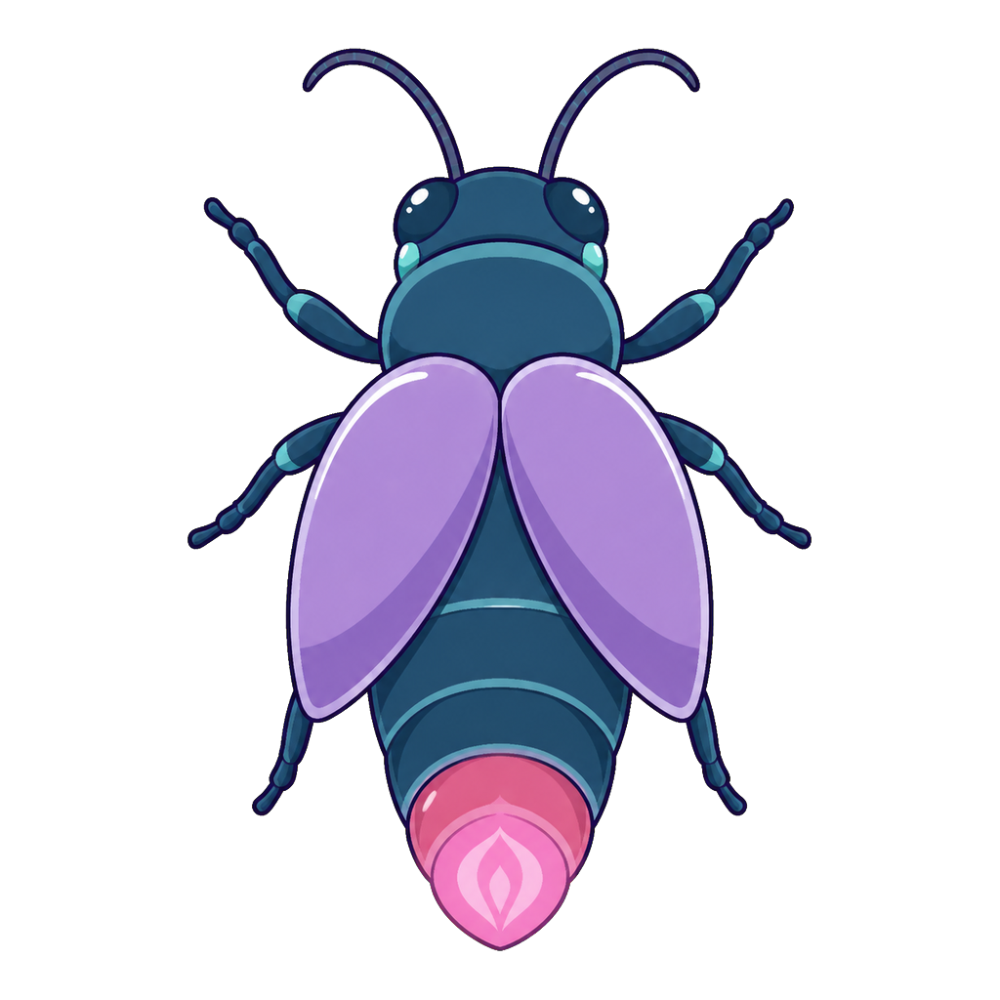
assets/fairy/sprites/bug_firefly.pngUnreviewed source. Actual drawing, mounted quality and action review pending.
1 declared/candidate reference sites; shared dependency branches may be outside the Day One jobs.
D1V2-0082

assets/flats/castle/boss/dusty_attic_arena_2048.pngEarlier exact-byte source opinion 4.6/5. Actual drawing, mounted quality and action review pending.
1 declared/candidate reference sites; shared dependency branches may be outside the Day One jobs.
D1V2-0083
assets/flats/castle/dream_house/bedside_table.pngUnreviewed source. Actual drawing, mounted quality and action review pending.
1 declared/candidate reference sites; shared dependency branches may be outside the Day One jobs.
D1V2-0084
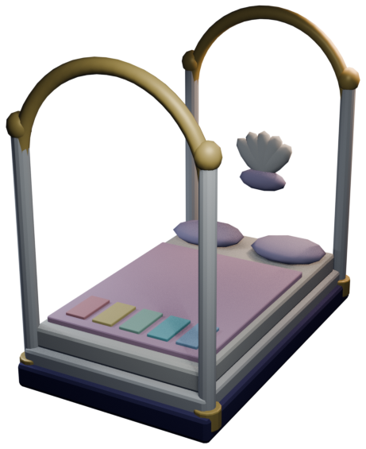
assets/flats/castle/dream_house/canopy_bed.pngUnreviewed source. Actual drawing, mounted quality and action review pending.
1 declared/candidate reference sites; shared dependency branches may be outside the Day One jobs.
D1V2-0085

assets/flats/castle/dream_house/cloud_pouf.pngUnreviewed source. Actual drawing, mounted quality and action review pending.
1 declared/candidate reference sites; shared dependency branches may be outside the Day One jobs.
D1V2-0086

assets/flats/castle/dream_house/cloud_settee.pngUnreviewed source. Actual drawing, mounted quality and action review pending.
2 declared/candidate reference sites; shared dependency branches may be outside the Day One jobs.
D1V2-0087

assets/flats/castle/dream_house/dining_seat.pngUnreviewed source. Actual drawing, mounted quality and action review pending.
2 declared/candidate reference sites; shared dependency branches may be outside the Day One jobs.
D1V2-0088
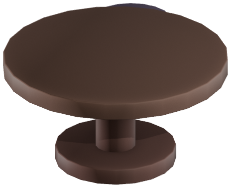
assets/flats/castle/dream_house/dining_table.pngEarlier exact-byte source opinion 4.5/5. Actual drawing, mounted quality and action review pending.
2 declared/candidate reference sites; shared dependency branches may be outside the Day One jobs.
D1V2-0089
assets/flats/castle/dream_house/dream_bed_0.pngUnreviewed source. Actual drawing, mounted quality and action review pending.
1 declared/candidate reference sites; shared dependency branches may be outside the Day One jobs.
D1V2-0090
assets/flats/castle/dream_house/dream_bed_1.pngUnreviewed source. Actual drawing, mounted quality and action review pending.
1 declared/candidate reference sites; shared dependency branches may be outside the Day One jobs.
D1V2-0091
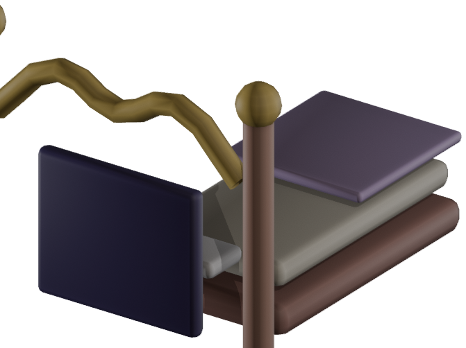
assets/flats/castle/dream_house/dream_bed_2.pngUnreviewed source. Actual drawing, mounted quality and action review pending.
1 declared/candidate reference sites; shared dependency branches may be outside the Day One jobs.
D1V2-0092
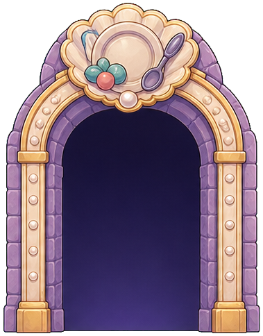
assets/flats/castle/dream_house/family_portal_dining.pngUnreviewed source. Actual drawing, mounted quality and action review pending.
1 declared/candidate reference sites; shared dependency branches may be outside the Day One jobs.
D1V2-0093
assets/flats/castle/dream_house/family_portal_movie_lounge.pngUnreviewed source. Actual drawing, mounted quality and action review pending.
1 declared/candidate reference sites; shared dependency branches may be outside the Day One jobs.
D1V2-0094
assets/flats/castle/dream_house/family_portal_royal_bedroom.pngUnreviewed source. Actual drawing, mounted quality and action review pending.
1 declared/candidate reference sites; shared dependency branches may be outside the Day One jobs.
D1V2-0095
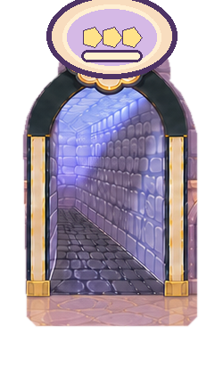
assets/flats/castle/dream_house/family_portal_sleepover_bedroom.pngUnreviewed source. Actual drawing, mounted quality and action review pending.
1 declared/candidate reference sites; shared dependency branches may be outside the Day One jobs.
D1V2-0096
assets/flats/castle/dream_house/meal_plate.pngUnreviewed source. Actual drawing, mounted quality and action review pending.
6 declared/candidate reference sites; shared dependency branches may be outside the Day One jobs.
D1V2-0097

assets/flats/castle/dream_house/movie_screen_frame.pngUnreviewed source. Actual drawing, mounted quality and action review pending.
2 declared/candidate reference sites; shared dependency branches may be outside the Day One jobs.
D1V2-0098

assets/flats/castle/dream_house/provisions_hutch.pngUnreviewed source. Actual drawing, mounted quality and action review pending.
1 declared/candidate reference sites; shared dependency branches may be outside the Day One jobs.
D1V2-0099

assets/flats/castle/dream_house/shell_chandelier.pngUnreviewed source. Actual drawing, mounted quality and action review pending.
2 declared/candidate reference sites; shared dependency branches may be outside the Day One jobs.
D1V2-0100

assets/flats/castle/dream_house/shell_popcorn_bowl.pngUnreviewed source. Actual drawing, mounted quality and action review pending.
1 declared/candidate reference sites; shared dependency branches may be outside the Day One jobs.
D1V2-0101
assets/flats/castle/dream_house/shell_wardrobe.pngUnreviewed source. Actual drawing, mounted quality and action review pending.
1 declared/candidate reference sites; shared dependency branches may be outside the Day One jobs.
D1V2-0102
assets/flats/castle/dream_house/story_cushion.pngUnreviewed source. Actual drawing, mounted quality and action review pending.
1 declared/candidate reference sites; shared dependency branches may be outside the Day One jobs.
D1V2-0103

assets/flats/castle/interactions_v4/background_tiles/room_bubble_bath_background_r0_c0.pngUnreviewed source. Actual drawing, mounted quality and action review pending.
2 declared/candidate reference sites; shared dependency branches may be outside the Day One jobs.
D1V2-0104

assets/flats/castle/interactions_v4/background_tiles/room_bubble_bath_background_r0_c1.pngUnreviewed source. Actual drawing, mounted quality and action review pending.
2 declared/candidate reference sites; shared dependency branches may be outside the Day One jobs.
D1V2-0105

assets/flats/castle/interactions_v4/background_tiles/room_bubble_bath_background_r0_c2.pngUnreviewed source. Actual drawing, mounted quality and action review pending.
2 declared/candidate reference sites; shared dependency branches may be outside the Day One jobs.
D1V2-0106

assets/flats/castle/interactions_v4/background_tiles/room_bubble_bath_background_r0_c3.pngUnreviewed source. Actual drawing, mounted quality and action review pending.
2 declared/candidate reference sites; shared dependency branches may be outside the Day One jobs.
D1V2-0107

assets/flats/castle/interactions_v4/background_tiles/room_bubble_bath_background_r1_c0.pngUnreviewed source. Actual drawing, mounted quality and action review pending.
2 declared/candidate reference sites; shared dependency branches may be outside the Day One jobs.
D1V2-0108

assets/flats/castle/interactions_v4/background_tiles/room_bubble_bath_background_r1_c1.pngUnreviewed source. Actual drawing, mounted quality and action review pending.
2 declared/candidate reference sites; shared dependency branches may be outside the Day One jobs.
D1V2-0109

assets/flats/castle/interactions_v4/background_tiles/room_bubble_bath_background_r1_c2.pngUnreviewed source. Actual drawing, mounted quality and action review pending.
2 declared/candidate reference sites; shared dependency branches may be outside the Day One jobs.
D1V2-0110

assets/flats/castle/interactions_v4/background_tiles/room_bubble_bath_background_r1_c3.pngUnreviewed source. Actual drawing, mounted quality and action review pending.
2 declared/candidate reference sites; shared dependency branches may be outside the Day One jobs.
D1V2-0111

assets/flats/castle/interactions_v4/background_tiles/room_craft_room_background_r0_c0.pngUnreviewed source. Actual drawing, mounted quality and action review pending.
2 declared/candidate reference sites; shared dependency branches may be outside the Day One jobs.
D1V2-0112

assets/flats/castle/interactions_v4/background_tiles/room_craft_room_background_r0_c1.pngUnreviewed source. Actual drawing, mounted quality and action review pending.
2 declared/candidate reference sites; shared dependency branches may be outside the Day One jobs.
D1V2-0113

assets/flats/castle/interactions_v4/background_tiles/room_craft_room_background_r0_c2.pngUnreviewed source. Actual drawing, mounted quality and action review pending.
2 declared/candidate reference sites; shared dependency branches may be outside the Day One jobs.
D1V2-0114

assets/flats/castle/interactions_v4/background_tiles/room_craft_room_background_r0_c3.pngUnreviewed source. Actual drawing, mounted quality and action review pending.
2 declared/candidate reference sites; shared dependency branches may be outside the Day One jobs.
D1V2-0115

assets/flats/castle/interactions_v4/background_tiles/room_craft_room_background_r1_c0.pngUnreviewed source. Actual drawing, mounted quality and action review pending.
2 declared/candidate reference sites; shared dependency branches may be outside the Day One jobs.
D1V2-0116

assets/flats/castle/interactions_v4/background_tiles/room_craft_room_background_r1_c1.pngUnreviewed source. Actual drawing, mounted quality and action review pending.
2 declared/candidate reference sites; shared dependency branches may be outside the Day One jobs.
D1V2-0117

assets/flats/castle/interactions_v4/background_tiles/room_craft_room_background_r1_c2.pngUnreviewed source. Actual drawing, mounted quality and action review pending.
2 declared/candidate reference sites; shared dependency branches may be outside the Day One jobs.
D1V2-0118

assets/flats/castle/interactions_v4/background_tiles/room_craft_room_background_r1_c3.pngUnreviewed source. Actual drawing, mounted quality and action review pending.
2 declared/candidate reference sites; shared dependency branches may be outside the Day One jobs.
D1V2-0119

assets/flats/castle/interactions_v4/background_tiles/room_kitchen_background_r0_c0.pngUnreviewed source. Actual drawing, mounted quality and action review pending.
2 declared/candidate reference sites; shared dependency branches may be outside the Day One jobs.
D1V2-0120

assets/flats/castle/interactions_v4/background_tiles/room_kitchen_background_r0_c1.pngUnreviewed source. Actual drawing, mounted quality and action review pending.
2 declared/candidate reference sites; shared dependency branches may be outside the Day One jobs.
D1V2-0121

assets/flats/castle/interactions_v4/background_tiles/room_kitchen_background_r0_c2.pngUnreviewed source. Actual drawing, mounted quality and action review pending.
2 declared/candidate reference sites; shared dependency branches may be outside the Day One jobs.
D1V2-0122

assets/flats/castle/interactions_v4/background_tiles/room_kitchen_background_r0_c3.pngUnreviewed source. Actual drawing, mounted quality and action review pending.
2 declared/candidate reference sites; shared dependency branches may be outside the Day One jobs.
D1V2-0123

assets/flats/castle/interactions_v4/background_tiles/room_kitchen_background_r1_c0.pngUnreviewed source. Actual drawing, mounted quality and action review pending.
2 declared/candidate reference sites; shared dependency branches may be outside the Day One jobs.
D1V2-0124

assets/flats/castle/interactions_v4/background_tiles/room_kitchen_background_r1_c1.pngUnreviewed source. Actual drawing, mounted quality and action review pending.
2 declared/candidate reference sites; shared dependency branches may be outside the Day One jobs.
D1V2-0125

assets/flats/castle/interactions_v4/background_tiles/room_kitchen_background_r1_c2.pngUnreviewed source. Actual drawing, mounted quality and action review pending.
2 declared/candidate reference sites; shared dependency branches may be outside the Day One jobs.
D1V2-0126

assets/flats/castle/interactions_v4/background_tiles/room_kitchen_background_r1_c3.pngUnreviewed source. Actual drawing, mounted quality and action review pending.
2 declared/candidate reference sites; shared dependency branches may be outside the Day One jobs.
D1V2-0127

assets/flats/castle/interactions_v4/background_tiles/room_kitchen_background_r2_c0.pngUnreviewed source. Actual drawing, mounted quality and action review pending.
2 declared/candidate reference sites; shared dependency branches may be outside the Day One jobs.
D1V2-0128

assets/flats/castle/interactions_v4/background_tiles/room_kitchen_background_r2_c1.pngUnreviewed source. Actual drawing, mounted quality and action review pending.
2 declared/candidate reference sites; shared dependency branches may be outside the Day One jobs.
D1V2-0129

assets/flats/castle/interactions_v4/background_tiles/room_kitchen_background_r2_c2.pngUnreviewed source. Actual drawing, mounted quality and action review pending.
2 declared/candidate reference sites; shared dependency branches may be outside the Day One jobs.
D1V2-0130

assets/flats/castle/interactions_v4/background_tiles/room_kitchen_background_r2_c3.pngUnreviewed source. Actual drawing, mounted quality and action review pending.
2 declared/candidate reference sites; shared dependency branches may be outside the Day One jobs.
D1V2-0131
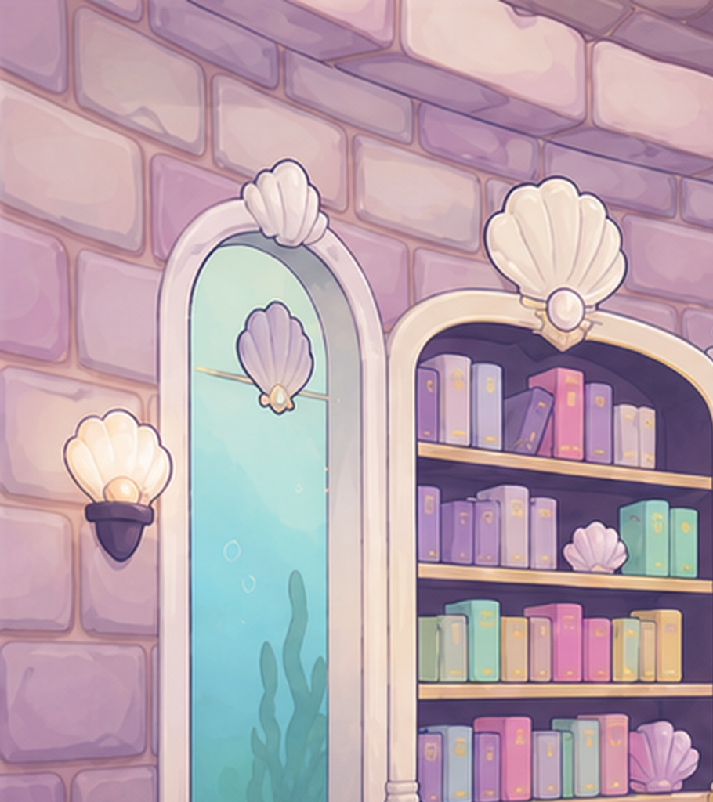
assets/flats/castle/interactions_v4/background_tiles/room_library_background_r0_c0.pngEarlier exact-byte source opinion 4.6/5. Actual drawing, mounted quality and action review pending.
3 declared/candidate reference sites; shared dependency branches may be outside the Day One jobs.
D1V2-0132
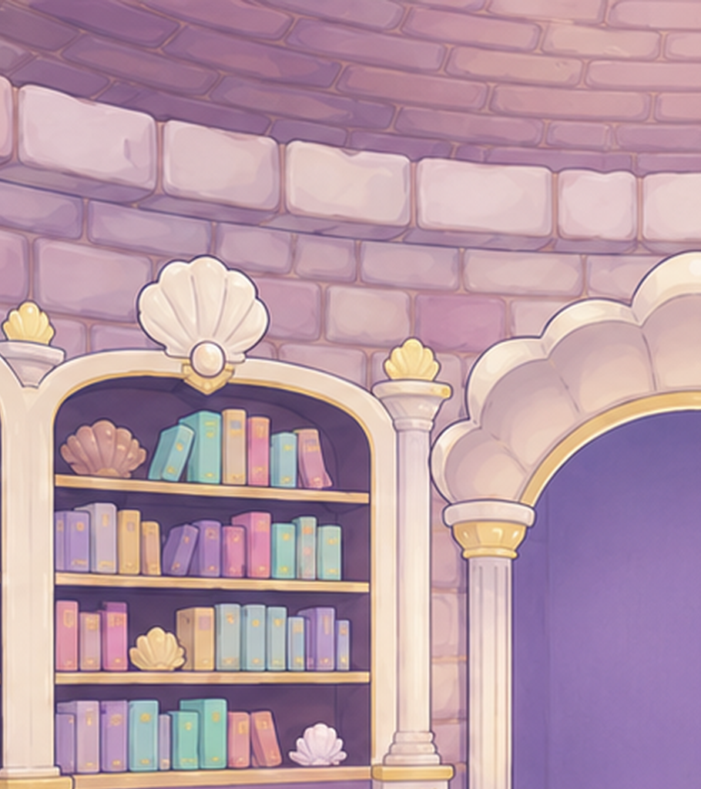
assets/flats/castle/interactions_v4/background_tiles/room_library_background_r0_c1.pngEarlier exact-byte source opinion 4.6/5. Actual drawing, mounted quality and action review pending.
3 declared/candidate reference sites; shared dependency branches may be outside the Day One jobs.
D1V2-0133
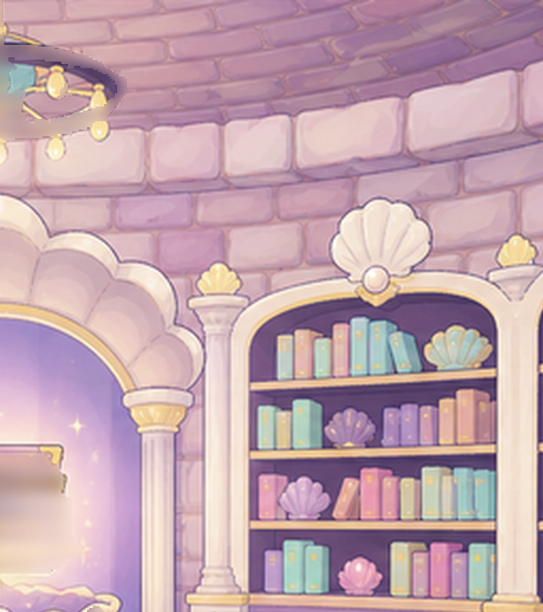
assets/flats/castle/interactions_v4/background_tiles/room_library_background_r0_c2.pngEarlier exact-byte source opinion 4.6/5. Actual drawing, mounted quality and action review pending.
3 declared/candidate reference sites; shared dependency branches may be outside the Day One jobs.
D1V2-0134
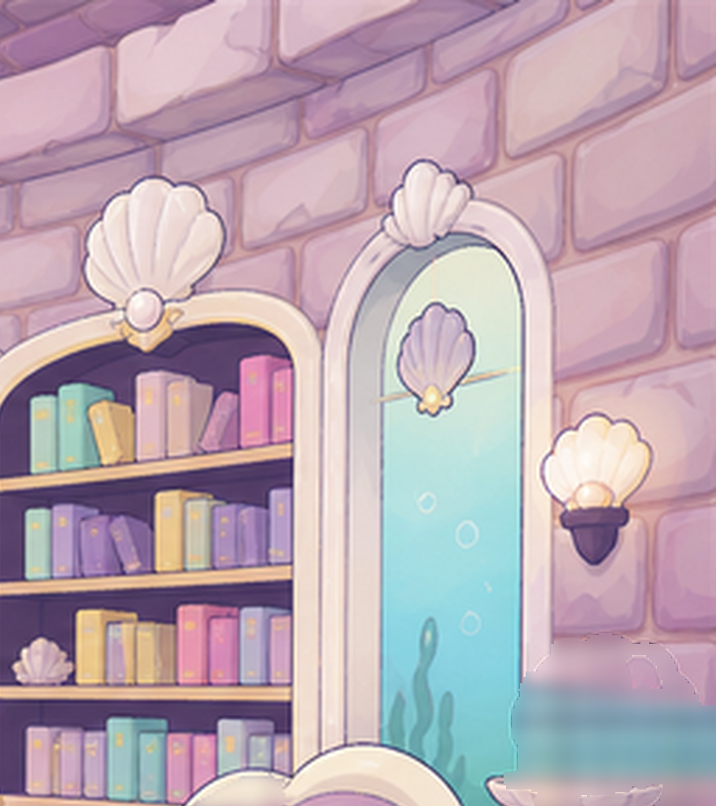
assets/flats/castle/interactions_v4/background_tiles/room_library_background_r0_c3.pngEarlier exact-byte source opinion 4.6/5. Actual drawing, mounted quality and action review pending.
3 declared/candidate reference sites; shared dependency branches may be outside the Day One jobs.
D1V2-0135
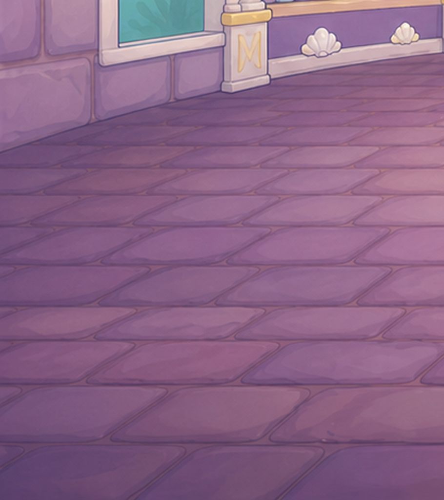
assets/flats/castle/interactions_v4/background_tiles/room_library_background_r1_c0.pngEarlier exact-byte source opinion 4.6/5. Actual drawing, mounted quality and action review pending.
3 declared/candidate reference sites; shared dependency branches may be outside the Day One jobs.
D1V2-0136
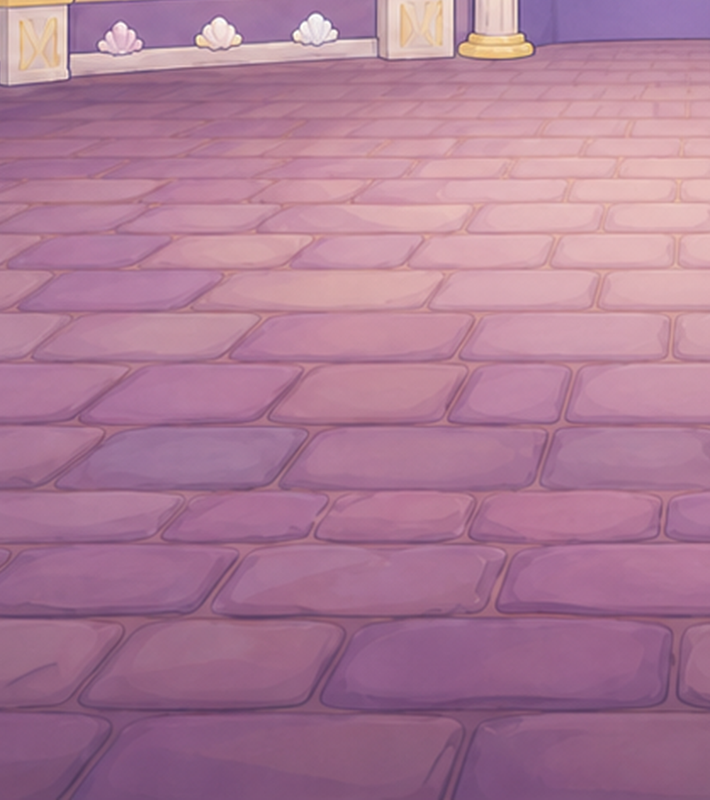
assets/flats/castle/interactions_v4/background_tiles/room_library_background_r1_c1.pngEarlier exact-byte source opinion 4.6/5. Actual drawing, mounted quality and action review pending.
3 declared/candidate reference sites; shared dependency branches may be outside the Day One jobs.
D1V2-0137

assets/flats/castle/interactions_v4/background_tiles/room_library_background_r1_c2.pngEarlier exact-byte source opinion 4.6/5. Actual drawing, mounted quality and action review pending.
3 declared/candidate reference sites; shared dependency branches may be outside the Day One jobs.
D1V2-0138
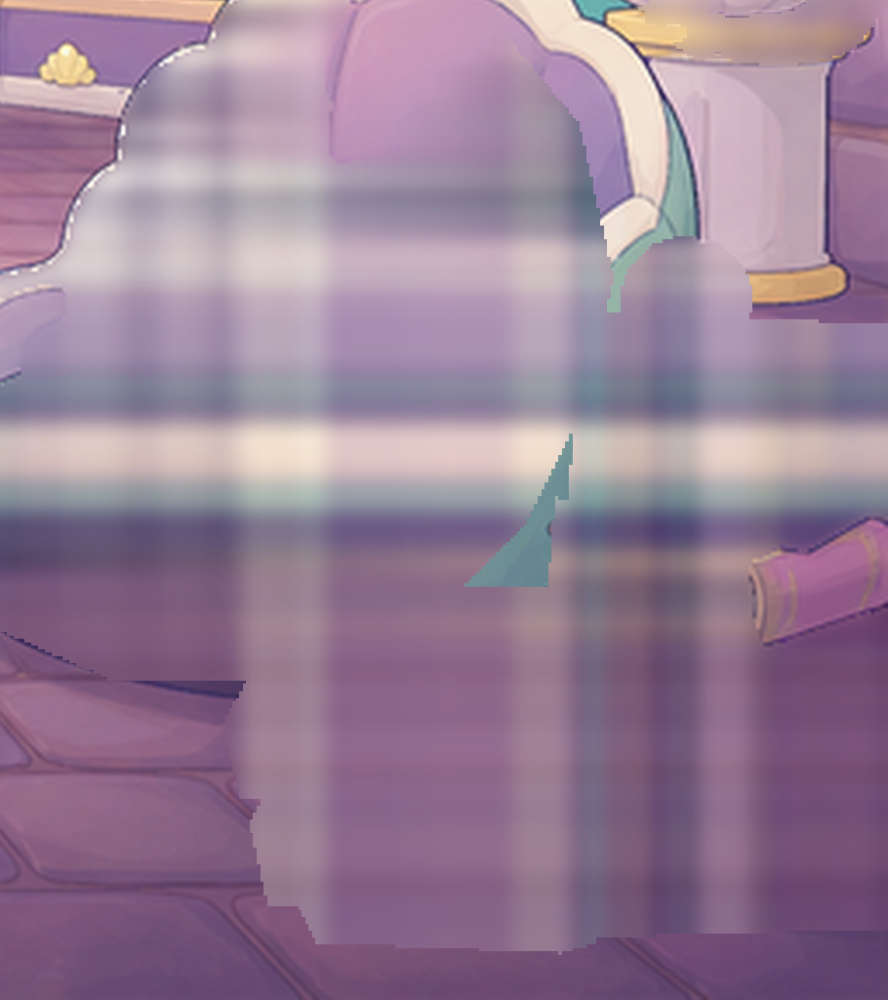
assets/flats/castle/interactions_v4/background_tiles/room_library_background_r1_c3.pngEarlier exact-byte source opinion 4.6/5. Actual drawing, mounted quality and action review pending.
3 declared/candidate reference sites; shared dependency branches may be outside the Day One jobs.
D1V2-0139

assets/flats/castle/interactions_v4/background_tiles/room_mermaid_pool_background_r0_c0.pngUnreviewed source. Actual drawing, mounted quality and action review pending.
2 declared/candidate reference sites; shared dependency branches may be outside the Day One jobs.
D1V2-0140

assets/flats/castle/interactions_v4/background_tiles/room_mermaid_pool_background_r0_c1.pngUnreviewed source. Actual drawing, mounted quality and action review pending.
2 declared/candidate reference sites; shared dependency branches may be outside the Day One jobs.
D1V2-0141

assets/flats/castle/interactions_v4/background_tiles/room_mermaid_pool_background_r0_c2.pngUnreviewed source. Actual drawing, mounted quality and action review pending.
2 declared/candidate reference sites; shared dependency branches may be outside the Day One jobs.
D1V2-0142

assets/flats/castle/interactions_v4/background_tiles/room_mermaid_pool_background_r0_c3.pngUnreviewed source. Actual drawing, mounted quality and action review pending.
2 declared/candidate reference sites; shared dependency branches may be outside the Day One jobs.
D1V2-0143

assets/flats/castle/interactions_v4/background_tiles/room_mermaid_pool_background_r1_c0.pngUnreviewed source. Actual drawing, mounted quality and action review pending.
2 declared/candidate reference sites; shared dependency branches may be outside the Day One jobs.
D1V2-0144

assets/flats/castle/interactions_v4/background_tiles/room_mermaid_pool_background_r1_c1.pngUnreviewed source. Actual drawing, mounted quality and action review pending.
2 declared/candidate reference sites; shared dependency branches may be outside the Day One jobs.
D1V2-0145

assets/flats/castle/interactions_v4/background_tiles/room_mermaid_pool_background_r1_c2.pngUnreviewed source. Actual drawing, mounted quality and action review pending.
2 declared/candidate reference sites; shared dependency branches may be outside the Day One jobs.
D1V2-0146

assets/flats/castle/interactions_v4/background_tiles/room_mermaid_pool_background_r1_c3.pngUnreviewed source. Actual drawing, mounted quality and action review pending.
2 declared/candidate reference sites; shared dependency branches may be outside the Day One jobs.
D1V2-0147

assets/flats/castle/interactions_v4/background_tiles/room_opera_hall_background_r0_c0.pngUnreviewed source. Actual drawing, mounted quality and action review pending.
2 declared/candidate reference sites; shared dependency branches may be outside the Day One jobs.
D1V2-0148

assets/flats/castle/interactions_v4/background_tiles/room_opera_hall_background_r0_c1.pngUnreviewed source. Actual drawing, mounted quality and action review pending.
2 declared/candidate reference sites; shared dependency branches may be outside the Day One jobs.
D1V2-0149

assets/flats/castle/interactions_v4/background_tiles/room_opera_hall_background_r0_c2.pngUnreviewed source. Actual drawing, mounted quality and action review pending.
2 declared/candidate reference sites; shared dependency branches may be outside the Day One jobs.
D1V2-0150

assets/flats/castle/interactions_v4/background_tiles/room_opera_hall_background_r0_c3.pngUnreviewed source. Actual drawing, mounted quality and action review pending.
2 declared/candidate reference sites; shared dependency branches may be outside the Day One jobs.
D1V2-0151

assets/flats/castle/interactions_v4/background_tiles/room_opera_hall_background_r1_c0.pngUnreviewed source. Actual drawing, mounted quality and action review pending.
2 declared/candidate reference sites; shared dependency branches may be outside the Day One jobs.
D1V2-0152

assets/flats/castle/interactions_v4/background_tiles/room_opera_hall_background_r1_c1.pngUnreviewed source. Actual drawing, mounted quality and action review pending.
2 declared/candidate reference sites; shared dependency branches may be outside the Day One jobs.
D1V2-0153

assets/flats/castle/interactions_v4/background_tiles/room_opera_hall_background_r1_c2.pngUnreviewed source. Actual drawing, mounted quality and action review pending.
2 declared/candidate reference sites; shared dependency branches may be outside the Day One jobs.
D1V2-0154

assets/flats/castle/interactions_v4/background_tiles/room_opera_hall_background_r1_c3.pngUnreviewed source. Actual drawing, mounted quality and action review pending.
2 declared/candidate reference sites; shared dependency branches may be outside the Day One jobs.
D1V2-0155

assets/flats/castle/interactions_v4/background_tiles/room_playroom_background_r0_c0.pngUnreviewed source. Actual drawing, mounted quality and action review pending.
2 declared/candidate reference sites; shared dependency branches may be outside the Day One jobs.
D1V2-0156

assets/flats/castle/interactions_v4/background_tiles/room_playroom_background_r0_c1.pngUnreviewed source. Actual drawing, mounted quality and action review pending.
2 declared/candidate reference sites; shared dependency branches may be outside the Day One jobs.
D1V2-0157

assets/flats/castle/interactions_v4/background_tiles/room_playroom_background_r0_c2.pngUnreviewed source. Actual drawing, mounted quality and action review pending.
2 declared/candidate reference sites; shared dependency branches may be outside the Day One jobs.
D1V2-0158

assets/flats/castle/interactions_v4/background_tiles/room_playroom_background_r0_c3.pngUnreviewed source. Actual drawing, mounted quality and action review pending.
2 declared/candidate reference sites; shared dependency branches may be outside the Day One jobs.
D1V2-0159

assets/flats/castle/interactions_v4/background_tiles/room_playroom_background_r1_c0.pngUnreviewed source. Actual drawing, mounted quality and action review pending.
2 declared/candidate reference sites; shared dependency branches may be outside the Day One jobs.
D1V2-0160

assets/flats/castle/interactions_v4/background_tiles/room_playroom_background_r1_c1.pngUnreviewed source. Actual drawing, mounted quality and action review pending.
2 declared/candidate reference sites; shared dependency branches may be outside the Day One jobs.
D1V2-0161

assets/flats/castle/interactions_v4/background_tiles/room_playroom_background_r1_c2.pngUnreviewed source. Actual drawing, mounted quality and action review pending.
2 declared/candidate reference sites; shared dependency branches may be outside the Day One jobs.
D1V2-0162

assets/flats/castle/interactions_v4/background_tiles/room_playroom_background_r1_c3.pngUnreviewed source. Actual drawing, mounted quality and action review pending.
2 declared/candidate reference sites; shared dependency branches may be outside the Day One jobs.
D1V2-0163
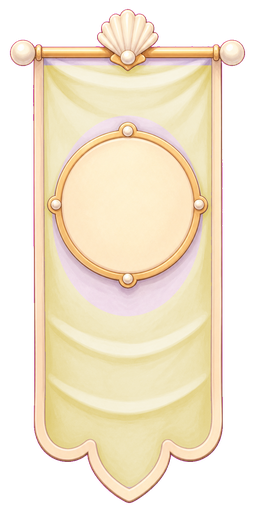
assets/flats/castle/logo_studio_v2/castle_banner_gold.pngUnreviewed source. Actual drawing, mounted quality and action review pending.
1 declared/candidate reference sites; shared dependency branches may be outside the Day One jobs.
D1V2-0164
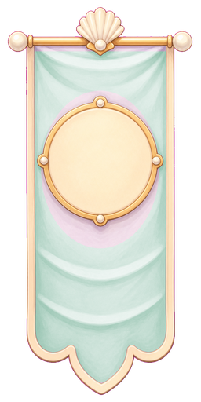
assets/flats/castle/logo_studio_v2/castle_banner_mint.pngUnreviewed source. Actual drawing, mounted quality and action review pending.
1 declared/candidate reference sites; shared dependency branches may be outside the Day One jobs.
D1V2-0165
assets/flats/castle/logo_studio_v2/castle_banner_motif_butterfly.pngUnreviewed source. Actual drawing, mounted quality and action review pending.
1 declared/candidate reference sites; shared dependency branches may be outside the Day One jobs.
D1V2-0166
assets/flats/castle/logo_studio_v2/castle_banner_motif_crown.pngUnreviewed source. Actual drawing, mounted quality and action review pending.
1 declared/candidate reference sites; shared dependency branches may be outside the Day One jobs.
D1V2-0167
assets/flats/castle/logo_studio_v2/castle_banner_motif_dog.pngUnreviewed source. Actual drawing, mounted quality and action review pending.
1 declared/candidate reference sites; shared dependency branches may be outside the Day One jobs.
D1V2-0168
assets/flats/castle/logo_studio_v2/castle_banner_motif_heart.pngUnreviewed source. Actual drawing, mounted quality and action review pending.
1 declared/candidate reference sites; shared dependency branches may be outside the Day One jobs.
D1V2-0169
assets/flats/castle/logo_studio_v2/castle_banner_motif_kitty.pngUnreviewed source. Actual drawing, mounted quality and action review pending.
1 declared/candidate reference sites; shared dependency branches may be outside the Day One jobs.
D1V2-0170

assets/flats/castle/logo_studio_v2/castle_banner_motif_rainbow.pngUnreviewed source. Actual drawing, mounted quality and action review pending.
1 declared/candidate reference sites; shared dependency branches may be outside the Day One jobs.
D1V2-0171
assets/flats/castle/logo_studio_v2/castle_banner_motif_shell.pngEarlier exact-byte source opinion 4.7/5. Actual drawing, mounted quality and action review pending.
2 declared/candidate reference sites; shared dependency branches may be outside the Day One jobs.
D1V2-0172
assets/flats/castle/logo_studio_v2/castle_banner_motif_star.pngEarlier exact-byte source opinion 4.7/5. Actual drawing, mounted quality and action review pending.
2 declared/candidate reference sites; shared dependency branches may be outside the Day One jobs.
D1V2-0173
assets/flats/castle/logo_studio_v2/castle_banner_ocean.pngUnreviewed source. Actual drawing, mounted quality and action review pending.
1 declared/candidate reference sites; shared dependency branches may be outside the Day One jobs.
D1V2-0174
assets/flats/castle/logo_studio_v2/castle_banner_pink.pngUnreviewed source. Actual drawing, mounted quality and action review pending.
1 declared/candidate reference sites; shared dependency branches may be outside the Day One jobs.
D1V2-0175
assets/flats/castle/logo_studio_v2/castle_banner_purple.pngUnreviewed source. Actual drawing, mounted quality and action review pending.
1 declared/candidate reference sites; shared dependency branches may be outside the Day One jobs.
D1V2-0176

assets/flats/castle/logo_studio_v2/castle_banner_rainbow.pngEarlier exact-byte source opinion 4.7/5. Actual drawing, mounted quality and action review pending.
6 declared/candidate reference sites; shared dependency branches may be outside the Day One jobs.
D1V2-0177

assets/flats/castle/main_hall_redraw_2026-08-03/signs/sign_bubble_bath.pngUnreviewed source. Actual drawing, mounted quality and action review pending.
1 declared/candidate reference sites; shared dependency branches may be outside the Day One jobs.
D1V2-0178

assets/flats/castle/main_hall_redraw_2026-08-03/signs/sign_craft_room.pngUnreviewed source. Actual drawing, mounted quality and action review pending.
1 declared/candidate reference sites; shared dependency branches may be outside the Day One jobs.
D1V2-0179

assets/flats/castle/main_hall_redraw_2026-08-03/signs/sign_family_gallery.pngUnreviewed source. Actual drawing, mounted quality and action review pending.
1 declared/candidate reference sites; shared dependency branches may be outside the Day One jobs.
D1V2-0180
assets/flats/castle/main_hall_redraw_2026-08-03/signs/sign_kitchen.pngUnreviewed source. Actual drawing, mounted quality and action review pending.
1 declared/candidate reference sites; shared dependency branches may be outside the Day One jobs.
D1V2-0181

assets/flats/castle/main_hall_redraw_2026-08-03/signs/sign_library.pngUnreviewed source. Actual drawing, mounted quality and action review pending.
1 declared/candidate reference sites; shared dependency branches may be outside the Day One jobs.
D1V2-0182

assets/flats/castle/main_hall_redraw_2026-08-03/signs/sign_mermaid_pool.pngUnreviewed source. Actual drawing, mounted quality and action review pending.
1 declared/candidate reference sites; shared dependency branches may be outside the Day One jobs.
D1V2-0183

assets/flats/castle/main_hall_redraw_2026-08-03/signs/sign_opera_hall.pngUnreviewed source. Actual drawing, mounted quality and action review pending.
1 declared/candidate reference sites; shared dependency branches may be outside the Day One jobs.
D1V2-0184

assets/flats/castle/main_hall_redraw_2026-08-03/signs/sign_playroom.pngUnreviewed source. Actual drawing, mounted quality and action review pending.
1 declared/candidate reference sites; shared dependency branches may be outside the Day One jobs.
D1V2-0185

assets/flats/castle/main_hall_redraw_2026-08-03/tiles/main_hall_room_led_r0_c0.pngUnreviewed source. Actual drawing, mounted quality and action review pending.
1 declared/candidate reference sites; shared dependency branches may be outside the Day One jobs.
D1V2-0186

assets/flats/castle/main_hall_redraw_2026-08-03/tiles/main_hall_room_led_r0_c1.pngUnreviewed source. Actual drawing, mounted quality and action review pending.
1 declared/candidate reference sites; shared dependency branches may be outside the Day One jobs.
D1V2-0187

assets/flats/castle/main_hall_redraw_2026-08-03/tiles/main_hall_room_led_r0_c2.pngUnreviewed source. Actual drawing, mounted quality and action review pending.
1 declared/candidate reference sites; shared dependency branches may be outside the Day One jobs.
D1V2-0188

assets/flats/castle/main_hall_redraw_2026-08-03/tiles/main_hall_room_led_r0_c3.pngUnreviewed source. Actual drawing, mounted quality and action review pending.
1 declared/candidate reference sites; shared dependency branches may be outside the Day One jobs.
D1V2-0189

assets/flats/castle/main_hall_redraw_2026-08-03/tiles/main_hall_room_led_r0_c4.pngUnreviewed source. Actual drawing, mounted quality and action review pending.
1 declared/candidate reference sites; shared dependency branches may be outside the Day One jobs.
D1V2-0190

assets/flats/castle/main_hall_redraw_2026-08-03/tiles/main_hall_room_led_r0_c5.pngUnreviewed source. Actual drawing, mounted quality and action review pending.
1 declared/candidate reference sites; shared dependency branches may be outside the Day One jobs.
D1V2-0191

assets/flats/castle/main_hall_redraw_2026-08-03/tiles/main_hall_room_led_r0_c6.pngUnreviewed source. Actual drawing, mounted quality and action review pending.
1 declared/candidate reference sites; shared dependency branches may be outside the Day One jobs.
D1V2-0192
assets/flats/castle/main_hall_redraw_2026-08-03/tiles/main_hall_room_led_r0_c7.pngUnreviewed source. Actual drawing, mounted quality and action review pending.
1 declared/candidate reference sites; shared dependency branches may be outside the Day One jobs.
D1V2-0193

assets/flats/castle/main_hall_redraw_2026-08-03/tiles/main_hall_room_led_r1_c0.pngUnreviewed source. Actual drawing, mounted quality and action review pending.
1 declared/candidate reference sites; shared dependency branches may be outside the Day One jobs.
D1V2-0194

assets/flats/castle/main_hall_redraw_2026-08-03/tiles/main_hall_room_led_r1_c1.pngUnreviewed source. Actual drawing, mounted quality and action review pending.
1 declared/candidate reference sites; shared dependency branches may be outside the Day One jobs.
D1V2-0195

assets/flats/castle/main_hall_redraw_2026-08-03/tiles/main_hall_room_led_r1_c2.pngUnreviewed source. Actual drawing, mounted quality and action review pending.
1 declared/candidate reference sites; shared dependency branches may be outside the Day One jobs.
D1V2-0196

assets/flats/castle/main_hall_redraw_2026-08-03/tiles/main_hall_room_led_r1_c3.pngUnreviewed source. Actual drawing, mounted quality and action review pending.
1 declared/candidate reference sites; shared dependency branches may be outside the Day One jobs.
D1V2-0197

assets/flats/castle/main_hall_redraw_2026-08-03/tiles/main_hall_room_led_r1_c4.pngUnreviewed source. Actual drawing, mounted quality and action review pending.
1 declared/candidate reference sites; shared dependency branches may be outside the Day One jobs.
D1V2-0198

assets/flats/castle/main_hall_redraw_2026-08-03/tiles/main_hall_room_led_r1_c5.pngUnreviewed source. Actual drawing, mounted quality and action review pending.
1 declared/candidate reference sites; shared dependency branches may be outside the Day One jobs.
D1V2-0199

assets/flats/castle/main_hall_redraw_2026-08-03/tiles/main_hall_room_led_r1_c6.pngUnreviewed source. Actual drawing, mounted quality and action review pending.
1 declared/candidate reference sites; shared dependency branches may be outside the Day One jobs.
D1V2-0200
assets/flats/castle/main_hall_redraw_2026-08-03/tiles/main_hall_room_led_r1_c7.pngUnreviewed source. Actual drawing, mounted quality and action review pending.
1 declared/candidate reference sites; shared dependency branches may be outside the Day One jobs.
D1V2-0201
assets/flats/castle/opera_house_venue_2d/background_tiles/room_opera_house_venue_background_r0_c0.pngEarlier exact-byte source opinion 4.2/5. Actual drawing, mounted quality and action review pending.
1 declared/candidate reference sites; shared dependency branches may be outside the Day One jobs.
D1V2-0202
assets/flats/castle/opera_house_venue_2d/background_tiles/room_opera_house_venue_background_r0_c1.pngEarlier exact-byte source opinion 4.2/5. Actual drawing, mounted quality and action review pending.
1 declared/candidate reference sites; shared dependency branches may be outside the Day One jobs.
D1V2-0203
assets/flats/castle/opera_house_venue_2d/background_tiles/room_opera_house_venue_background_r0_c2.pngEarlier exact-byte source opinion 4.2/5. Actual drawing, mounted quality and action review pending.
1 declared/candidate reference sites; shared dependency branches may be outside the Day One jobs.
D1V2-0204
assets/flats/castle/opera_house_venue_2d/background_tiles/room_opera_house_venue_background_r0_c3.pngEarlier exact-byte source opinion 4.2/5. Actual drawing, mounted quality and action review pending.
1 declared/candidate reference sites; shared dependency branches may be outside the Day One jobs.
D1V2-0205
assets/flats/castle/opera_house_venue_2d/background_tiles/room_opera_house_venue_background_r1_c0.pngEarlier exact-byte source opinion 4.2/5. Actual drawing, mounted quality and action review pending.
1 declared/candidate reference sites; shared dependency branches may be outside the Day One jobs.
D1V2-0206
assets/flats/castle/opera_house_venue_2d/background_tiles/room_opera_house_venue_background_r1_c1.pngEarlier exact-byte source opinion 4.2/5. Actual drawing, mounted quality and action review pending.
1 declared/candidate reference sites; shared dependency branches may be outside the Day One jobs.
D1V2-0207
assets/flats/castle/opera_house_venue_2d/background_tiles/room_opera_house_venue_background_r1_c2.pngEarlier exact-byte source opinion 4.2/5. Actual drawing, mounted quality and action review pending.
1 declared/candidate reference sites; shared dependency branches may be outside the Day One jobs.
D1V2-0208
assets/flats/castle/opera_house_venue_2d/background_tiles/room_opera_house_venue_background_r1_c3.pngEarlier exact-byte source opinion 4.2/5. Actual drawing, mounted quality and action review pending.
1 declared/candidate reference sites; shared dependency branches may be outside the Day One jobs.
D1V2-0209

assets/flats/castle/rooms/background_tiles/room_bubble_bath_background_r0_c0.pngUnreviewed source. Actual drawing, mounted quality and action review pending.
1 declared/candidate reference sites; shared dependency branches may be outside the Day One jobs.
D1V2-0210
assets/flats/castle/rooms/background_tiles/room_bubble_bath_background_r0_c1.pngUnreviewed source. Actual drawing, mounted quality and action review pending.
1 declared/candidate reference sites; shared dependency branches may be outside the Day One jobs.
D1V2-0211
assets/flats/castle/rooms/background_tiles/room_bubble_bath_background_r0_c2.pngUnreviewed source. Actual drawing, mounted quality and action review pending.
1 declared/candidate reference sites; shared dependency branches may be outside the Day One jobs.
D1V2-0212

assets/flats/castle/rooms/background_tiles/room_bubble_bath_background_r0_c3.pngUnreviewed source. Actual drawing, mounted quality and action review pending.
1 declared/candidate reference sites; shared dependency branches may be outside the Day One jobs.
D1V2-0213
assets/flats/castle/rooms/background_tiles/room_bubble_bath_background_r1_c0.pngUnreviewed source. Actual drawing, mounted quality and action review pending.
1 declared/candidate reference sites; shared dependency branches may be outside the Day One jobs.
D1V2-0214
assets/flats/castle/rooms/background_tiles/room_bubble_bath_background_r1_c1.pngUnreviewed source. Actual drawing, mounted quality and action review pending.
1 declared/candidate reference sites; shared dependency branches may be outside the Day One jobs.
D1V2-0215
assets/flats/castle/rooms/background_tiles/room_bubble_bath_background_r1_c2.pngUnreviewed source. Actual drawing, mounted quality and action review pending.
1 declared/candidate reference sites; shared dependency branches may be outside the Day One jobs.
D1V2-0216

assets/flats/castle/rooms/background_tiles/room_bubble_bath_background_r1_c3.pngUnreviewed source. Actual drawing, mounted quality and action review pending.
1 declared/candidate reference sites; shared dependency branches may be outside the Day One jobs.
D1V2-0217

assets/flats/castle/rooms/background_tiles/room_craft_room_background_r0_c0.pngUnreviewed source. Actual drawing, mounted quality and action review pending.
1 declared/candidate reference sites; shared dependency branches may be outside the Day One jobs.
D1V2-0218
assets/flats/castle/rooms/background_tiles/room_craft_room_background_r0_c1.pngUnreviewed source. Actual drawing, mounted quality and action review pending.
1 declared/candidate reference sites; shared dependency branches may be outside the Day One jobs.
D1V2-0219
assets/flats/castle/rooms/background_tiles/room_craft_room_background_r0_c2.pngUnreviewed source. Actual drawing, mounted quality and action review pending.
1 declared/candidate reference sites; shared dependency branches may be outside the Day One jobs.
D1V2-0220

assets/flats/castle/rooms/background_tiles/room_craft_room_background_r0_c3.pngUnreviewed source. Actual drawing, mounted quality and action review pending.
1 declared/candidate reference sites; shared dependency branches may be outside the Day One jobs.
D1V2-0221

assets/flats/castle/rooms/background_tiles/room_craft_room_background_r1_c0.pngUnreviewed source. Actual drawing, mounted quality and action review pending.
1 declared/candidate reference sites; shared dependency branches may be outside the Day One jobs.
D1V2-0222
assets/flats/castle/rooms/background_tiles/room_craft_room_background_r1_c1.pngUnreviewed source. Actual drawing, mounted quality and action review pending.
1 declared/candidate reference sites; shared dependency branches may be outside the Day One jobs.
D1V2-0223
assets/flats/castle/rooms/background_tiles/room_craft_room_background_r1_c2.pngUnreviewed source. Actual drawing, mounted quality and action review pending.
1 declared/candidate reference sites; shared dependency branches may be outside the Day One jobs.
D1V2-0224
assets/flats/castle/rooms/background_tiles/room_craft_room_background_r1_c3.pngUnreviewed source. Actual drawing, mounted quality and action review pending.
1 declared/candidate reference sites; shared dependency branches may be outside the Day One jobs.
D1V2-0225

assets/flats/castle/rooms/background_tiles/room_dining_room_background_r0_c0.pngUnreviewed source. Actual drawing, mounted quality and action review pending.
1 declared/candidate reference sites; shared dependency branches may be outside the Day One jobs.
D1V2-0226

assets/flats/castle/rooms/background_tiles/room_dining_room_background_r0_c1.pngUnreviewed source. Actual drawing, mounted quality and action review pending.
1 declared/candidate reference sites; shared dependency branches may be outside the Day One jobs.
D1V2-0227

assets/flats/castle/rooms/background_tiles/room_dining_room_background_r1_c0.pngUnreviewed source. Actual drawing, mounted quality and action review pending.
1 declared/candidate reference sites; shared dependency branches may be outside the Day One jobs.
D1V2-0228

assets/flats/castle/rooms/background_tiles/room_dining_room_background_r1_c1.pngUnreviewed source. Actual drawing, mounted quality and action review pending.
1 declared/candidate reference sites; shared dependency branches may be outside the Day One jobs.
D1V2-0229
assets/flats/castle/rooms/background_tiles/room_family_gallery_background_r0_c0.pngUnreviewed source. Actual drawing, mounted quality and action review pending.
1 declared/candidate reference sites; shared dependency branches may be outside the Day One jobs.
D1V2-0230
assets/flats/castle/rooms/background_tiles/room_family_gallery_background_r0_c1.pngUnreviewed source. Actual drawing, mounted quality and action review pending.
1 declared/candidate reference sites; shared dependency branches may be outside the Day One jobs.
D1V2-0231
assets/flats/castle/rooms/background_tiles/room_family_gallery_background_r1_c0.pngUnreviewed source. Actual drawing, mounted quality and action review pending.
1 declared/candidate reference sites; shared dependency branches may be outside the Day One jobs.
D1V2-0232
assets/flats/castle/rooms/background_tiles/room_family_gallery_background_r1_c1.pngUnreviewed source. Actual drawing, mounted quality and action review pending.
1 declared/candidate reference sites; shared dependency branches may be outside the Day One jobs.
D1V2-0233
assets/flats/castle/rooms/background_tiles/room_kitchen_background_r0_c0.pngUnreviewed source. Actual drawing, mounted quality and action review pending.
1 declared/candidate reference sites; shared dependency branches may be outside the Day One jobs.
D1V2-0234
assets/flats/castle/rooms/background_tiles/room_kitchen_background_r0_c1.pngUnreviewed source. Actual drawing, mounted quality and action review pending.
1 declared/candidate reference sites; shared dependency branches may be outside the Day One jobs.
D1V2-0235
assets/flats/castle/rooms/background_tiles/room_kitchen_background_r0_c2.pngUnreviewed source. Actual drawing, mounted quality and action review pending.
1 declared/candidate reference sites; shared dependency branches may be outside the Day One jobs.
D1V2-0236
assets/flats/castle/rooms/background_tiles/room_kitchen_background_r0_c3.pngUnreviewed source. Actual drawing, mounted quality and action review pending.
1 declared/candidate reference sites; shared dependency branches may be outside the Day One jobs.
D1V2-0237
assets/flats/castle/rooms/background_tiles/room_kitchen_background_r1_c0.pngUnreviewed source. Actual drawing, mounted quality and action review pending.
1 declared/candidate reference sites; shared dependency branches may be outside the Day One jobs.
D1V2-0238
assets/flats/castle/rooms/background_tiles/room_kitchen_background_r1_c1.pngUnreviewed source. Actual drawing, mounted quality and action review pending.
1 declared/candidate reference sites; shared dependency branches may be outside the Day One jobs.
D1V2-0239
assets/flats/castle/rooms/background_tiles/room_kitchen_background_r1_c2.pngUnreviewed source. Actual drawing, mounted quality and action review pending.
1 declared/candidate reference sites; shared dependency branches may be outside the Day One jobs.
D1V2-0240
assets/flats/castle/rooms/background_tiles/room_kitchen_background_r1_c3.pngUnreviewed source. Actual drawing, mounted quality and action review pending.
1 declared/candidate reference sites; shared dependency branches may be outside the Day One jobs.
D1V2-0241
assets/flats/castle/rooms/background_tiles/room_kitchen_background_r2_c0.pngUnreviewed source. Actual drawing, mounted quality and action review pending.
1 declared/candidate reference sites; shared dependency branches may be outside the Day One jobs.
D1V2-0242
assets/flats/castle/rooms/background_tiles/room_kitchen_background_r2_c1.pngUnreviewed source. Actual drawing, mounted quality and action review pending.
1 declared/candidate reference sites; shared dependency branches may be outside the Day One jobs.
D1V2-0243
assets/flats/castle/rooms/background_tiles/room_kitchen_background_r2_c2.pngUnreviewed source. Actual drawing, mounted quality and action review pending.
1 declared/candidate reference sites; shared dependency branches may be outside the Day One jobs.
D1V2-0244
assets/flats/castle/rooms/background_tiles/room_kitchen_background_r2_c3.pngUnreviewed source. Actual drawing, mounted quality and action review pending.
1 declared/candidate reference sites; shared dependency branches may be outside the Day One jobs.
D1V2-0245
assets/flats/castle/rooms/background_tiles/room_library_background_r0_c0.pngUnreviewed source. Actual drawing, mounted quality and action review pending.
1 declared/candidate reference sites; shared dependency branches may be outside the Day One jobs.
D1V2-0246
assets/flats/castle/rooms/background_tiles/room_library_background_r0_c1.pngUnreviewed source. Actual drawing, mounted quality and action review pending.
1 declared/candidate reference sites; shared dependency branches may be outside the Day One jobs.
D1V2-0247
assets/flats/castle/rooms/background_tiles/room_library_background_r0_c2.pngUnreviewed source. Actual drawing, mounted quality and action review pending.
1 declared/candidate reference sites; shared dependency branches may be outside the Day One jobs.
D1V2-0248
assets/flats/castle/rooms/background_tiles/room_library_background_r0_c3.pngUnreviewed source. Actual drawing, mounted quality and action review pending.
1 declared/candidate reference sites; shared dependency branches may be outside the Day One jobs.
D1V2-0249
assets/flats/castle/rooms/background_tiles/room_library_background_r1_c0.pngUnreviewed source. Actual drawing, mounted quality and action review pending.
1 declared/candidate reference sites; shared dependency branches may be outside the Day One jobs.
D1V2-0250
assets/flats/castle/rooms/background_tiles/room_library_background_r1_c1.pngUnreviewed source. Actual drawing, mounted quality and action review pending.
1 declared/candidate reference sites; shared dependency branches may be outside the Day One jobs.
D1V2-0251
assets/flats/castle/rooms/background_tiles/room_library_background_r1_c2.pngUnreviewed source. Actual drawing, mounted quality and action review pending.
1 declared/candidate reference sites; shared dependency branches may be outside the Day One jobs.
D1V2-0252
assets/flats/castle/rooms/background_tiles/room_library_background_r1_c3.pngUnreviewed source. Actual drawing, mounted quality and action review pending.
1 declared/candidate reference sites; shared dependency branches may be outside the Day One jobs.
D1V2-0253
assets/flats/castle/rooms/background_tiles/room_mermaid_pool_background_r0_c0.pngUnreviewed source. Actual drawing, mounted quality and action review pending.
1 declared/candidate reference sites; shared dependency branches may be outside the Day One jobs.
D1V2-0254
assets/flats/castle/rooms/background_tiles/room_mermaid_pool_background_r0_c1.pngUnreviewed source. Actual drawing, mounted quality and action review pending.
1 declared/candidate reference sites; shared dependency branches may be outside the Day One jobs.
D1V2-0255
assets/flats/castle/rooms/background_tiles/room_mermaid_pool_background_r0_c2.pngUnreviewed source. Actual drawing, mounted quality and action review pending.
1 declared/candidate reference sites; shared dependency branches may be outside the Day One jobs.
D1V2-0256
assets/flats/castle/rooms/background_tiles/room_mermaid_pool_background_r0_c3.pngUnreviewed source. Actual drawing, mounted quality and action review pending.
1 declared/candidate reference sites; shared dependency branches may be outside the Day One jobs.
D1V2-0257
assets/flats/castle/rooms/background_tiles/room_mermaid_pool_background_r1_c0.pngUnreviewed source. Actual drawing, mounted quality and action review pending.
1 declared/candidate reference sites; shared dependency branches may be outside the Day One jobs.
D1V2-0258
assets/flats/castle/rooms/background_tiles/room_mermaid_pool_background_r1_c1.pngUnreviewed source. Actual drawing, mounted quality and action review pending.
1 declared/candidate reference sites; shared dependency branches may be outside the Day One jobs.
D1V2-0259
assets/flats/castle/rooms/background_tiles/room_mermaid_pool_background_r1_c2.pngUnreviewed source. Actual drawing, mounted quality and action review pending.
1 declared/candidate reference sites; shared dependency branches may be outside the Day One jobs.
D1V2-0260
assets/flats/castle/rooms/background_tiles/room_mermaid_pool_background_r1_c3.pngUnreviewed source. Actual drawing, mounted quality and action review pending.
1 declared/candidate reference sites; shared dependency branches may be outside the Day One jobs.
D1V2-0261

assets/flats/castle/rooms/background_tiles/room_movie_lounge_background_r0_c0.pngUnreviewed source. Actual drawing, mounted quality and action review pending.
1 declared/candidate reference sites; shared dependency branches may be outside the Day One jobs.
D1V2-0262

assets/flats/castle/rooms/background_tiles/room_movie_lounge_background_r0_c1.pngUnreviewed source. Actual drawing, mounted quality and action review pending.
1 declared/candidate reference sites; shared dependency branches may be outside the Day One jobs.
D1V2-0263

assets/flats/castle/rooms/background_tiles/room_movie_lounge_background_r1_c0.pngUnreviewed source. Actual drawing, mounted quality and action review pending.
1 declared/candidate reference sites; shared dependency branches may be outside the Day One jobs.
D1V2-0264

assets/flats/castle/rooms/background_tiles/room_movie_lounge_background_r1_c1.pngUnreviewed source. Actual drawing, mounted quality and action review pending.
1 declared/candidate reference sites; shared dependency branches may be outside the Day One jobs.
D1V2-0265
assets/flats/castle/rooms/background_tiles/room_opera_hall_background_r0_c0.pngUnreviewed source. Actual drawing, mounted quality and action review pending.
1 declared/candidate reference sites; shared dependency branches may be outside the Day One jobs.
D1V2-0266
assets/flats/castle/rooms/background_tiles/room_opera_hall_background_r0_c1.pngUnreviewed source. Actual drawing, mounted quality and action review pending.
1 declared/candidate reference sites; shared dependency branches may be outside the Day One jobs.
D1V2-0267
assets/flats/castle/rooms/background_tiles/room_opera_hall_background_r0_c2.pngUnreviewed source. Actual drawing, mounted quality and action review pending.
1 declared/candidate reference sites; shared dependency branches may be outside the Day One jobs.
D1V2-0268

assets/flats/castle/rooms/background_tiles/room_opera_hall_background_r0_c3.pngUnreviewed source. Actual drawing, mounted quality and action review pending.
1 declared/candidate reference sites; shared dependency branches may be outside the Day One jobs.
D1V2-0269
assets/flats/castle/rooms/background_tiles/room_opera_hall_background_r1_c0.pngUnreviewed source. Actual drawing, mounted quality and action review pending.
1 declared/candidate reference sites; shared dependency branches may be outside the Day One jobs.
D1V2-0270
assets/flats/castle/rooms/background_tiles/room_opera_hall_background_r1_c1.pngUnreviewed source. Actual drawing, mounted quality and action review pending.
1 declared/candidate reference sites; shared dependency branches may be outside the Day One jobs.
D1V2-0271
assets/flats/castle/rooms/background_tiles/room_opera_hall_background_r1_c2.pngUnreviewed source. Actual drawing, mounted quality and action review pending.
1 declared/candidate reference sites; shared dependency branches may be outside the Day One jobs.
D1V2-0272
assets/flats/castle/rooms/background_tiles/room_opera_hall_background_r1_c3.pngUnreviewed source. Actual drawing, mounted quality and action review pending.
1 declared/candidate reference sites; shared dependency branches may be outside the Day One jobs.
D1V2-0273
assets/flats/castle/rooms/background_tiles/room_playroom_background_r0_c0.pngEarlier exact-byte source opinion 4.6/5. Actual drawing, mounted quality and action review pending.
2 declared/candidate reference sites; shared dependency branches may be outside the Day One jobs.
D1V2-0274
assets/flats/castle/rooms/background_tiles/room_playroom_background_r0_c1.pngEarlier exact-byte source opinion 4.6/5. Actual drawing, mounted quality and action review pending.
2 declared/candidate reference sites; shared dependency branches may be outside the Day One jobs.
D1V2-0275

assets/flats/castle/rooms/background_tiles/room_playroom_background_r0_c2.pngEarlier exact-byte source opinion 4.6/5. Actual drawing, mounted quality and action review pending.
2 declared/candidate reference sites; shared dependency branches may be outside the Day One jobs.
D1V2-0276
assets/flats/castle/rooms/background_tiles/room_playroom_background_r0_c3.pngEarlier exact-byte source opinion 4.6/5. Actual drawing, mounted quality and action review pending.
2 declared/candidate reference sites; shared dependency branches may be outside the Day One jobs.
D1V2-0277
assets/flats/castle/rooms/background_tiles/room_playroom_background_r1_c0.pngEarlier exact-byte source opinion 4.6/5. Actual drawing, mounted quality and action review pending.
2 declared/candidate reference sites; shared dependency branches may be outside the Day One jobs.
D1V2-0278
assets/flats/castle/rooms/background_tiles/room_playroom_background_r1_c1.pngEarlier exact-byte source opinion 4.6/5. Actual drawing, mounted quality and action review pending.
2 declared/candidate reference sites; shared dependency branches may be outside the Day One jobs.
D1V2-0279
assets/flats/castle/rooms/background_tiles/room_playroom_background_r1_c2.pngEarlier exact-byte source opinion 4.6/5. Actual drawing, mounted quality and action review pending.
2 declared/candidate reference sites; shared dependency branches may be outside the Day One jobs.
D1V2-0280
assets/flats/castle/rooms/background_tiles/room_playroom_background_r1_c3.pngEarlier exact-byte source opinion 4.6/5. Actual drawing, mounted quality and action review pending.
2 declared/candidate reference sites; shared dependency branches may be outside the Day One jobs.
D1V2-0281
assets/flats/castle/rooms/background_tiles/room_royal_bedroom_background_r0_c0.pngUnreviewed source. Actual drawing, mounted quality and action review pending.
1 declared/candidate reference sites; shared dependency branches may be outside the Day One jobs.
D1V2-0282
assets/flats/castle/rooms/background_tiles/room_royal_bedroom_background_r0_c1.pngUnreviewed source. Actual drawing, mounted quality and action review pending.
1 declared/candidate reference sites; shared dependency branches may be outside the Day One jobs.
D1V2-0283
assets/flats/castle/rooms/background_tiles/room_royal_bedroom_background_r1_c0.pngUnreviewed source. Actual drawing, mounted quality and action review pending.
1 declared/candidate reference sites; shared dependency branches may be outside the Day One jobs.
D1V2-0284
assets/flats/castle/rooms/background_tiles/room_royal_bedroom_background_r1_c1.pngUnreviewed source. Actual drawing, mounted quality and action review pending.
1 declared/candidate reference sites; shared dependency branches may be outside the Day One jobs.
D1V2-0285
assets/flats/castle/rooms/background_tiles/room_sleepover_bedroom_background_r0_c0.pngUnreviewed source. Actual drawing, mounted quality and action review pending.
1 declared/candidate reference sites; shared dependency branches may be outside the Day One jobs.
D1V2-0286
assets/flats/castle/rooms/background_tiles/room_sleepover_bedroom_background_r0_c1.pngUnreviewed source. Actual drawing, mounted quality and action review pending.
1 declared/candidate reference sites; shared dependency branches may be outside the Day One jobs.
D1V2-0287
assets/flats/castle/rooms/background_tiles/room_sleepover_bedroom_background_r1_c0.pngUnreviewed source. Actual drawing, mounted quality and action review pending.
1 declared/candidate reference sites; shared dependency branches may be outside the Day One jobs.
D1V2-0288
assets/flats/castle/rooms/background_tiles/room_sleepover_bedroom_background_r1_c1.pngUnreviewed source. Actual drawing, mounted quality and action review pending.
1 declared/candidate reference sites; shared dependency branches may be outside the Day One jobs.
D1V2-0289

assets/flats/castle/rooms/room_actor_shadow.pngEarlier exact-byte source opinion 4.5/5. Actual drawing, mounted quality and action review pending.
5 declared/candidate reference sites; shared dependency branches may be outside the Day One jobs.
D1V2-0290

assets/flats/castle/rooms/room_bubble_bath.pngEarlier exact-byte source opinion 4.6/5. Actual drawing, mounted quality and action review pending.
1 declared/candidate reference sites; shared dependency branches may be outside the Day One jobs.
D1V2-0291
assets/flats/castle/rooms/room_bubble_bath_background.pngUnreviewed source. Actual drawing, mounted quality and action review pending.
1 declared/candidate reference sites; shared dependency branches may be outside the Day One jobs.
D1V2-0292

assets/flats/castle/rooms/room_bubble_bath_dirty_day_one.pngEarlier exact-byte source opinion 4.3/5. Actual drawing, mounted quality and action review pending.
1 declared/candidate reference sites; shared dependency branches may be outside the Day One jobs.
D1V2-0293

assets/flats/castle/rooms/room_bubble_bath_dirty_drained_day_one.pngEarlier exact-byte source opinion 4.3/5. Actual drawing, mounted quality and action review pending.
1 declared/candidate reference sites; shared dependency branches may be outside the Day One jobs.
D1V2-0294
assets/flats/castle/rooms/room_craft_room.pngUnreviewed source. Actual drawing, mounted quality and action review pending.
1 declared/candidate reference sites; shared dependency branches may be outside the Day One jobs.
D1V2-0295
assets/flats/castle/rooms/room_craft_room_background.pngUnreviewed source. Actual drawing, mounted quality and action review pending.
1 declared/candidate reference sites; shared dependency branches may be outside the Day One jobs.
D1V2-0296

assets/flats/castle/rooms/room_craft_room_front_left.pngUnreviewed source. Actual drawing, mounted quality and action review pending.
1 declared/candidate reference sites; shared dependency branches may be outside the Day One jobs.
D1V2-0297

assets/flats/castle/rooms/room_craft_room_front_right.pngUnreviewed source. Actual drawing, mounted quality and action review pending.
1 declared/candidate reference sites; shared dependency branches may be outside the Day One jobs.
D1V2-0298
assets/flats/castle/rooms/room_dining_room_background.pngUnreviewed source. Actual drawing, mounted quality and action review pending.
1 declared/candidate reference sites; shared dependency branches may be outside the Day One jobs.
D1V2-0299
assets/flats/castle/rooms/room_family_gallery_background.pngUnreviewed source. Actual drawing, mounted quality and action review pending.
1 declared/candidate reference sites; shared dependency branches may be outside the Day One jobs.
D1V2-0300
assets/flats/castle/rooms/room_kitchen_background.pngUnreviewed source. Actual drawing, mounted quality and action review pending.
1 declared/candidate reference sites; shared dependency branches may be outside the Day One jobs.
D1V2-0301
assets/flats/castle/rooms/room_kitchen_front_left.pngUnreviewed source. Actual drawing, mounted quality and action review pending.
1 declared/candidate reference sites; shared dependency branches may be outside the Day One jobs.
D1V2-0302
assets/flats/castle/rooms/room_kitchen_front_right.pngUnreviewed source. Actual drawing, mounted quality and action review pending.
1 declared/candidate reference sites; shared dependency branches may be outside the Day One jobs.
D1V2-0303
assets/flats/castle/rooms/room_kitchen_item_soup_pot.pngUnreviewed source. Actual drawing, mounted quality and action review pending.
1 declared/candidate reference sites; shared dependency branches may be outside the Day One jobs.
D1V2-0304
assets/flats/castle/rooms/room_library_background.pngUnreviewed source. Actual drawing, mounted quality and action review pending.
1 declared/candidate reference sites; shared dependency branches may be outside the Day One jobs.
D1V2-0305

assets/flats/castle/rooms/room_library_front_left.pngUnreviewed source. Actual drawing, mounted quality and action review pending.
1 declared/candidate reference sites; shared dependency branches may be outside the Day One jobs.
D1V2-0306

assets/flats/castle/rooms/room_library_front_right.pngUnreviewed source. Actual drawing, mounted quality and action review pending.
1 declared/candidate reference sites; shared dependency branches may be outside the Day One jobs.
D1V2-0307
assets/flats/castle/rooms/room_main_hall.pngUnreviewed source. Actual drawing, mounted quality and action review pending.
1 declared/candidate reference sites; shared dependency branches may be outside the Day One jobs.
D1V2-0308
assets/flats/castle/rooms/room_main_hall_background_v2.pngUnreviewed source. Actual drawing, mounted quality and action review pending.
2 declared/candidate reference sites; shared dependency branches may be outside the Day One jobs.
D1V2-0309
assets/flats/castle/rooms/room_mermaid_pool.pngUnreviewed source. Actual drawing, mounted quality and action review pending.
1 declared/candidate reference sites; shared dependency branches may be outside the Day One jobs.
D1V2-0310
assets/flats/castle/rooms/room_mermaid_pool_background.pngUnreviewed source. Actual drawing, mounted quality and action review pending.
1 declared/candidate reference sites; shared dependency branches may be outside the Day One jobs.
D1V2-0311

assets/flats/castle/rooms/room_mermaid_pool_front_left.pngUnreviewed source. Actual drawing, mounted quality and action review pending.
1 declared/candidate reference sites; shared dependency branches may be outside the Day One jobs.
D1V2-0312

assets/flats/castle/rooms/room_mermaid_pool_front_right.pngUnreviewed source. Actual drawing, mounted quality and action review pending.
1 declared/candidate reference sites; shared dependency branches may be outside the Day One jobs.
D1V2-0313
assets/flats/castle/rooms/room_movie_lounge_background.pngUnreviewed source. Actual drawing, mounted quality and action review pending.
1 declared/candidate reference sites; shared dependency branches may be outside the Day One jobs.
D1V2-0314
assets/flats/castle/rooms/room_opera_hall_background.pngUnreviewed source. Actual drawing, mounted quality and action review pending.
1 declared/candidate reference sites; shared dependency branches may be outside the Day One jobs.
D1V2-0315
assets/flats/castle/rooms/room_opera_hall_front_left.pngUnreviewed source. Actual drawing, mounted quality and action review pending.
1 declared/candidate reference sites; shared dependency branches may be outside the Day One jobs.
D1V2-0316
assets/flats/castle/rooms/room_opera_hall_front_right.pngUnreviewed source. Actual drawing, mounted quality and action review pending.
1 declared/candidate reference sites; shared dependency branches may be outside the Day One jobs.
D1V2-0317
assets/flats/castle/rooms/room_playroom.pngUnreviewed source. Actual drawing, mounted quality and action review pending.
1 declared/candidate reference sites; shared dependency branches may be outside the Day One jobs.
D1V2-0318
assets/flats/castle/rooms/room_playroom_background.pngUnreviewed source. Actual drawing, mounted quality and action review pending.
1 declared/candidate reference sites; shared dependency branches may be outside the Day One jobs.
D1V2-0319

assets/flats/castle/rooms/room_playroom_front_left.pngUnreviewed source. Actual drawing, mounted quality and action review pending.
1 declared/candidate reference sites; shared dependency branches may be outside the Day One jobs.
D1V2-0320

assets/flats/castle/rooms/room_playroom_front_right.pngUnreviewed source. Actual drawing, mounted quality and action review pending.
1 declared/candidate reference sites; shared dependency branches may be outside the Day One jobs.
D1V2-0321
assets/flats/castle/rooms/room_playroom_item_stuffie_nook.pngEarlier exact-byte source opinion 4.4/5. Actual drawing, mounted quality and action review pending.
1 declared/candidate reference sites; shared dependency branches may be outside the Day One jobs.
D1V2-0322
assets/flats/castle/rooms/room_royal_bedroom_background.pngUnreviewed source. Actual drawing, mounted quality and action review pending.
1 declared/candidate reference sites; shared dependency branches may be outside the Day One jobs.
D1V2-0323
assets/flats/castle/rooms/room_sleepover_bedroom_background.pngUnreviewed source. Actual drawing, mounted quality and action review pending.
1 declared/candidate reference sites; shared dependency branches may be outside the Day One jobs.
D1V2-0324
assets/flats/sky_lagoon/main/flat_sky_lagoon_main_panorama_v5_tile_r0_c0.pngUnreviewed source. Actual drawing, mounted quality and action review pending.
3 declared/candidate reference sites; shared dependency branches may be outside the Day One jobs.
D1V2-0325
assets/flats/sky_lagoon/main/flat_sky_lagoon_main_panorama_v5_tile_r0_c1.pngUnreviewed source. Actual drawing, mounted quality and action review pending.
3 declared/candidate reference sites; shared dependency branches may be outside the Day One jobs.
D1V2-0326
assets/flats/sky_lagoon/main/flat_sky_lagoon_main_panorama_v5_tile_r0_c2.pngEarlier exact-byte source opinion 4.7/5. Actual drawing, mounted quality and action review pending.
6 declared/candidate reference sites; shared dependency branches may be outside the Day One jobs.
D1V2-0327
assets/flats/sky_lagoon/main/flat_sky_lagoon_main_panorama_v5_tile_r0_c3.pngEarlier exact-byte source opinion 4.7/5. Actual drawing, mounted quality and action review pending.
6 declared/candidate reference sites; shared dependency branches may be outside the Day One jobs.
D1V2-0328
assets/flats/sky_lagoon/main/flat_sky_lagoon_main_panorama_v5_tile_r0_c4.pngUnreviewed source. Actual drawing, mounted quality and action review pending.
3 declared/candidate reference sites; shared dependency branches may be outside the Day One jobs.
D1V2-0329
assets/flats/sky_lagoon/main/flat_sky_lagoon_main_panorama_v5_tile_r0_c5.pngUnreviewed source. Actual drawing, mounted quality and action review pending.
3 declared/candidate reference sites; shared dependency branches may be outside the Day One jobs.
D1V2-0330
assets/flats/sky_lagoon/main/flat_sky_lagoon_main_panorama_v5_tile_r1_c0.pngUnreviewed source. Actual drawing, mounted quality and action review pending.
3 declared/candidate reference sites; shared dependency branches may be outside the Day One jobs.
D1V2-0331
assets/flats/sky_lagoon/main/flat_sky_lagoon_main_panorama_v5_tile_r1_c1.pngUnreviewed source. Actual drawing, mounted quality and action review pending.
3 declared/candidate reference sites; shared dependency branches may be outside the Day One jobs.
D1V2-0332
assets/flats/sky_lagoon/main/flat_sky_lagoon_main_panorama_v5_tile_r1_c2.pngEarlier exact-byte source opinion 4.7/5. Actual drawing, mounted quality and action review pending.
6 declared/candidate reference sites; shared dependency branches may be outside the Day One jobs.
D1V2-0333
assets/flats/sky_lagoon/main/flat_sky_lagoon_main_panorama_v5_tile_r1_c3.pngEarlier exact-byte source opinion 4.7/5. Actual drawing, mounted quality and action review pending.
6 declared/candidate reference sites; shared dependency branches may be outside the Day One jobs.
D1V2-0334
assets/flats/sky_lagoon/main/flat_sky_lagoon_main_panorama_v5_tile_r1_c4.pngUnreviewed source. Actual drawing, mounted quality and action review pending.
3 declared/candidate reference sites; shared dependency branches may be outside the Day One jobs.
D1V2-0335
assets/flats/sky_lagoon/main/flat_sky_lagoon_main_panorama_v5_tile_r1_c5.pngUnreviewed source. Actual drawing, mounted quality and action review pending.
3 declared/candidate reference sites; shared dependency branches may be outside the Day One jobs.
D1V2-0336
assets/kart/boost_ribbon.pngEarlier exact-byte source opinion 4.6/5. Actual drawing, mounted quality and action review pending.
2 declared/candidate reference sites; shared dependency branches may be outside the Day One jobs.
D1V2-0337
assets/kart/finish_banner.pngUnreviewed source. Actual drawing, mounted quality and action review pending.
1 declared/candidate reference sites; shared dependency branches may be outside the Day One jobs.
D1V2-0338
assets/mg/butterfly.pngUnreviewed source. Actual drawing, mounted quality and action review pending.
1 declared/candidate reference sites; shared dependency branches may be outside the Day One jobs.
D1V2-0339
assets/mg/coal.pngUnreviewed source. Actual drawing, mounted quality and action review pending.
3 declared/candidate reference sites; shared dependency branches may be outside the Day One jobs.
D1V2-0340
assets/mg/k_sprout.pngUnreviewed source. Actual drawing, mounted quality and action review pending.
1 declared/candidate reference sites; shared dependency branches may be outside the Day One jobs.
D1V2-0341
assets/mg/seed.pngEarlier exact-byte source opinion 4.7/5. Actual drawing, mounted quality and action review pending.
2 declared/candidate reference sites; shared dependency branches may be outside the Day One jobs.
D1V2-0342

assets/mg/star.pngEarlier exact-byte source opinion 4.6/5. Actual drawing, mounted quality and action review pending.
3 declared/candidate reference sites; shared dependency branches may be outside the Day One jobs.
D1V2-0343
assets/mg/sun.pngEarlier exact-byte source opinion 4.6/5. Actual drawing, mounted quality and action review pending.
2 declared/candidate reference sites; shared dependency branches may be outside the Day One jobs.
D1V2-0344
assets/mg/wateringcan.pngUnreviewed source. Actual drawing, mounted quality and action review pending.
1 declared/candidate reference sites; shared dependency branches may be outside the Day One jobs.
D1V2-0345
assets/mg/xtree.pngUnreviewed source. Actual drawing, mounted quality and action review pending.
1 declared/candidate reference sites; shared dependency branches may be outside the Day One jobs.
D1V2-0346
assets/minigames/seek/evie_animation.pngUnreviewed source. Actual drawing, mounted quality and action review pending.
1 declared/candidate reference sites; shared dependency branches may be outside the Day One jobs.
D1V2-0347
assets/minigames/seek/evie_portrait.pngUnreviewed source. Actual drawing, mounted quality and action review pending.
2 declared/candidate reference sites; shared dependency branches may be outside the Day One jobs.
D1V2-0348
assets/minigames/seek/lamma_animation.pngEarlier exact-byte source opinion 4.6/5. Actual drawing, mounted quality and action review pending.
2 declared/candidate reference sites; shared dependency branches may be outside the Day One jobs.
D1V2-0349
assets/opera/tree_book_test/book.pngEarlier exact-byte source opinion 4.6/5. Actual drawing, mounted quality and action review pending.
3 declared/candidate reference sites; shared dependency branches may be outside the Day One jobs.
D1V2-0350

assets/opera/tree_book_test/lagoon_tree_bigleaf_maple.pngEarlier exact-byte source opinion 3.8/5. Actual drawing, mounted quality and action review pending.
2 declared/candidate reference sites; shared dependency branches may be outside the Day One jobs.
D1V2-0351
assets/opera/tree_book_test/lagoon_tree_pacific_dogwood.pngEarlier exact-byte source opinion 3.9/5. Actual drawing, mounted quality and action review pending.
2 declared/candidate reference sites; shared dependency branches may be outside the Day One jobs.
D1V2-0352
assets/opera/tree_book_test/leaves_medicine.pngEarlier exact-byte source opinion 4.6/5. Actual drawing, mounted quality and action review pending.
2 declared/candidate reference sites; shared dependency branches may be outside the Day One jobs.
D1V2-0353
assets/opera/tree_book_test/patient.pngEarlier exact-byte source opinion 4.5/5. Actual drawing, mounted quality and action review pending.
3 declared/candidate reference sites; shared dependency branches may be outside the Day One jobs.
D1V2-0354
assets/opera/tree_book_test/roshan_book.pngEarlier exact-byte source opinion 4.7/5. Actual drawing, mounted quality and action review pending.
2 declared/candidate reference sites; shared dependency branches may be outside the Day One jobs.
D1V2-0355
assets/opera/tree_book_test/sky_lagoon_tree_sticker_tall_v1.pngEarlier exact-byte source opinion 4.2/5. Actual drawing, mounted quality and action review pending.
2 declared/candidate reference sites; shared dependency branches may be outside the Day One jobs.
D1V2-0356
assets/opera/tree_book_test/spray_poses.pngEarlier exact-byte source opinion 4.5/5. Actual drawing, mounted quality and action review pending.
2 declared/candidate reference sites; shared dependency branches may be outside the Day One jobs.
D1V2-0357
assets/opera/worlds/actors/animation/roshan_astronaut_sheet_a.pngEarlier exact-byte source opinion 4.4/5. Actual drawing, mounted quality and action review pending.
2 declared/candidate reference sites; shared dependency branches may be outside the Day One jobs.
D1V2-0358
assets/opera/worlds/actors/animation/roshan_ballerina_sheet_a.pngEarlier exact-byte source opinion 4.5/5. Actual drawing, mounted quality and action review pending.
3 declared/candidate reference sites; shared dependency branches may be outside the Day One jobs.
D1V2-0359
assets/opera/worlds/actors/animation/roshan_boxer_sheet_a.pngEarlier exact-byte source opinion 4.4/5. Actual drawing, mounted quality and action review pending.
2 declared/candidate reference sites; shared dependency branches may be outside the Day One jobs.
D1V2-0360

assets/opera/worlds/actors/animation/roshan_candymaker_sheet_a.pngEarlier exact-byte source opinion 4.4/5. Actual drawing, mounted quality and action review pending.
2 declared/candidate reference sites; shared dependency branches may be outside the Day One jobs.
D1V2-0361
assets/opera/worlds/actors/animation/roshan_chef_sheet_a.pngEarlier exact-byte source opinion 4.5/5. Actual drawing, mounted quality and action review pending.
2 declared/candidate reference sites; shared dependency branches may be outside the Day One jobs.
D1V2-0362
assets/opera/worlds/actors/animation/roshan_detective_sheet_a.pngEarlier exact-byte source opinion 4.5/5. Actual drawing, mounted quality and action review pending.
2 declared/candidate reference sites; shared dependency branches may be outside the Day One jobs.
D1V2-0363

assets/opera/worlds/actors/animation/roshan_doctor_sheet_a.pngEarlier exact-byte source opinion 4.2/5. Actual drawing, mounted quality and action review pending.
2 declared/candidate reference sites; shared dependency branches may be outside the Day One jobs.
D1V2-0364
assets/opera/worlds/actors/animation/roshan_farmer_sheet_a.pngEarlier exact-byte source opinion 4.1/5. Actual drawing, mounted quality and action review pending.
2 declared/candidate reference sites; shared dependency branches may be outside the Day One jobs.
D1V2-0365
assets/opera/worlds/actors/animation/roshan_geologist_sheet_a.pngEarlier exact-byte source opinion 3.5/5. Actual drawing, mounted quality and action review pending.
2 declared/candidate reference sites; shared dependency branches may be outside the Day One jobs.
D1V2-0366
assets/opera/worlds/actors/animation/roshan_magician_sheet_a.pngEarlier exact-byte source opinion 4.2/5. Actual drawing, mounted quality and action review pending.
2 declared/candidate reference sites; shared dependency branches may be outside the Day One jobs.
D1V2-0367

assets/opera/worlds/actors/animation/roshan_nursery_sheet_a.pngEarlier exact-byte source opinion 4.4/5. Actual drawing, mounted quality and action review pending.
2 declared/candidate reference sites; shared dependency branches may be outside the Day One jobs.
D1V2-0368
assets/opera/worlds/actors/animation/roshan_painter_sheet_a.pngEarlier exact-byte source opinion 4.4/5. Actual drawing, mounted quality and action review pending.
2 declared/candidate reference sites; shared dependency branches may be outside the Day One jobs.
D1V2-0369
assets/opera/worlds/actors/animation/roshan_popstar_sheet_a.pngEarlier exact-byte source opinion 4.5/5. Actual drawing, mounted quality and action review pending.
2 declared/candidate reference sites; shared dependency branches may be outside the Day One jobs.
D1V2-0370

assets/opera/worlds/actors/animation/roshan_racer_sheet_a.pngEarlier exact-byte source opinion 4.1/5. Actual drawing, mounted quality and action review pending.
2 declared/candidate reference sites; shared dependency branches may be outside the Day One jobs.
D1V2-0371
assets/opera/worlds/actors/animation/roshan_teacher_sheet_a.pngEarlier exact-byte source opinion 4.2/5. Actual drawing, mounted quality and action review pending.
2 declared/candidate reference sites; shared dependency branches may be outside the Day One jobs.
D1V2-0372

assets/opera/worlds/actors/faron_nursery.pngEarlier exact-byte source opinion 4.4/5. Actual drawing, mounted quality and action review pending.
2 declared/candidate reference sites; shared dependency branches may be outside the Day One jobs.
D1V2-0373
assets/opera/worlds/actors/imp_captain.pngEarlier exact-byte source opinion 4.6/5. Actual drawing, mounted quality and action review pending.
6 declared/candidate reference sites; shared dependency branches may be outside the Day One jobs.
D1V2-0374
assets/opera/worlds/actors/imp_captain_bopped.pngEarlier exact-byte source opinion 4.2/5. Actual drawing, mounted quality and action review pending.
2 declared/candidate reference sites; shared dependency branches may be outside the Day One jobs.
D1V2-0375
assets/opera/worlds/actors/imp_captain_bow.pngEarlier exact-byte source opinion 4.6/5. Actual drawing, mounted quality and action review pending.
2 declared/candidate reference sites; shared dependency branches may be outside the Day One jobs.
D1V2-0376
assets/opera/worlds/actors/imp_captain_charge.pngEarlier exact-byte source opinion 4.2/5. Actual drawing, mounted quality and action review pending.
1 declared/candidate reference sites; shared dependency branches may be outside the Day One jobs.
D1V2-0377
assets/opera/worlds/actors/imp_captain_flee.pngEarlier exact-byte source opinion 4.6/5. Actual drawing, mounted quality and action review pending.
1 declared/candidate reference sites; shared dependency branches may be outside the Day One jobs.
D1V2-0378
assets/opera/worlds/actors/imp_captain_guard.pngEarlier exact-byte source opinion 4.4/5. Actual drawing, mounted quality and action review pending.
1 declared/candidate reference sites; shared dependency branches may be outside the Day One jobs.
D1V2-0379
assets/opera/worlds/actors/imp_captain_recover.pngEarlier exact-byte source opinion 4.4/5. Actual drawing, mounted quality and action review pending.
1 declared/candidate reference sites; shared dependency branches may be outside the Day One jobs.
D1V2-0380
assets/opera/worlds/actors/imp_captain_slash.pngEarlier exact-byte source opinion 4.2/5. Actual drawing, mounted quality and action review pending.
1 declared/candidate reference sites; shared dependency branches may be outside the Day One jobs.
D1V2-0381
assets/opera/worlds/actors/imp_captain_stagger.pngEarlier exact-byte source opinion 4.6/5. Actual drawing, mounted quality and action review pending.
1 declared/candidate reference sites; shared dependency branches may be outside the Day One jobs.
D1V2-0382
assets/opera/worlds/actors/imp_captain_taunt.pngEarlier exact-byte source opinion 4.6/5. Actual drawing, mounted quality and action review pending.
1 declared/candidate reference sites; shared dependency branches may be outside the Day One jobs.
D1V2-0383
assets/opera/worlds/actors/imp_captain_windup.pngEarlier exact-byte source opinion 4.6/5. Actual drawing, mounted quality and action review pending.
1 declared/candidate reference sites; shared dependency branches may be outside the Day One jobs.
D1V2-0384
assets/opera/worlds/actors/imp_mischief.pngEarlier exact-byte source opinion 4.6/5. Actual drawing, mounted quality and action review pending.
6 declared/candidate reference sites; shared dependency branches may be outside the Day One jobs.
D1V2-0385
assets/opera/worlds/actors/imp_mischief_bopped.pngEarlier exact-byte source opinion 4.2/5. Actual drawing, mounted quality and action review pending.
2 declared/candidate reference sites; shared dependency branches may be outside the Day One jobs.
D1V2-0386
assets/opera/worlds/actors/imp_mischief_bow.pngEarlier exact-byte source opinion 4.6/5. Actual drawing, mounted quality and action review pending.
2 declared/candidate reference sites; shared dependency branches may be outside the Day One jobs.
D1V2-0387
assets/opera/worlds/actors/imp_mischief_charge.pngEarlier exact-byte source opinion 4.2/5. Actual drawing, mounted quality and action review pending.
1 declared/candidate reference sites; shared dependency branches may be outside the Day One jobs.
D1V2-0388
assets/opera/worlds/actors/imp_mischief_flee.pngEarlier exact-byte source opinion 4.6/5. Actual drawing, mounted quality and action review pending.
1 declared/candidate reference sites; shared dependency branches may be outside the Day One jobs.
D1V2-0389
assets/opera/worlds/actors/imp_mischief_guard.pngEarlier exact-byte source opinion 4.4/5. Actual drawing, mounted quality and action review pending.
1 declared/candidate reference sites; shared dependency branches may be outside the Day One jobs.
D1V2-0390
assets/opera/worlds/actors/imp_mischief_recover.pngEarlier exact-byte source opinion 4.4/5. Actual drawing, mounted quality and action review pending.
1 declared/candidate reference sites; shared dependency branches may be outside the Day One jobs.
D1V2-0391
assets/opera/worlds/actors/imp_mischief_slash.pngEarlier exact-byte source opinion 4.2/5. Actual drawing, mounted quality and action review pending.
1 declared/candidate reference sites; shared dependency branches may be outside the Day One jobs.
D1V2-0392
assets/opera/worlds/actors/imp_mischief_stagger.pngEarlier exact-byte source opinion 4.6/5. Actual drawing, mounted quality and action review pending.
1 declared/candidate reference sites; shared dependency branches may be outside the Day One jobs.
D1V2-0393
assets/opera/worlds/actors/imp_mischief_taunt.pngEarlier exact-byte source opinion 4.6/5. Actual drawing, mounted quality and action review pending.
1 declared/candidate reference sites; shared dependency branches may be outside the Day One jobs.
D1V2-0394
assets/opera/worlds/actors/imp_mischief_windup.pngEarlier exact-byte source opinion 4.6/5. Actual drawing, mounted quality and action review pending.
1 declared/candidate reference sites; shared dependency branches may be outside the Day One jobs.
D1V2-0395
assets/opera/worlds/actors/rival_astronaut.pngEarlier exact-byte source opinion 4.6/5. Actual drawing, mounted quality and action review pending.
2 declared/candidate reference sites; shared dependency branches may be outside the Day One jobs.
D1V2-0396
assets/opera/worlds/actors/rival_astronaut_bopped.pngEarlier exact-byte source opinion 4.2/5. Actual drawing, mounted quality and action review pending.
2 declared/candidate reference sites; shared dependency branches may be outside the Day One jobs.
D1V2-0397
assets/opera/worlds/actors/rival_astronaut_bow.pngEarlier exact-byte source opinion 4.6/5. Actual drawing, mounted quality and action review pending.
2 declared/candidate reference sites; shared dependency branches may be outside the Day One jobs.
D1V2-0398
assets/opera/worlds/actors/rival_astronaut_charge.pngEarlier exact-byte source opinion 4.2/5. Actual drawing, mounted quality and action review pending.
2 declared/candidate reference sites; shared dependency branches may be outside the Day One jobs.
D1V2-0399
assets/opera/worlds/actors/rival_astronaut_flee.pngEarlier exact-byte source opinion 4.6/5. Actual drawing, mounted quality and action review pending.
2 declared/candidate reference sites; shared dependency branches may be outside the Day One jobs.
D1V2-0400
assets/opera/worlds/actors/rival_astronaut_guard.pngEarlier exact-byte source opinion 4.4/5. Actual drawing, mounted quality and action review pending.
2 declared/candidate reference sites; shared dependency branches may be outside the Day One jobs.
D1V2-0401
assets/opera/worlds/actors/rival_astronaut_hop_a.pngEarlier exact-byte source opinion 4.6/5. Actual drawing, mounted quality and action review pending.
2 declared/candidate reference sites; shared dependency branches may be outside the Day One jobs.
D1V2-0402
assets/opera/worlds/actors/rival_astronaut_hop_b.pngEarlier exact-byte source opinion 4.6/5. Actual drawing, mounted quality and action review pending.
2 declared/candidate reference sites; shared dependency branches may be outside the Day One jobs.
D1V2-0403
assets/opera/worlds/actors/rival_astronaut_recover.pngEarlier exact-byte source opinion 4.4/5. Actual drawing, mounted quality and action review pending.
2 declared/candidate reference sites; shared dependency branches may be outside the Day One jobs.
D1V2-0404
assets/opera/worlds/actors/rival_astronaut_slash.pngEarlier exact-byte source opinion 4.2/5. Actual drawing, mounted quality and action review pending.
2 declared/candidate reference sites; shared dependency branches may be outside the Day One jobs.
D1V2-0405
assets/opera/worlds/actors/rival_astronaut_stagger.pngEarlier exact-byte source opinion 4.6/5. Actual drawing, mounted quality and action review pending.
2 declared/candidate reference sites; shared dependency branches may be outside the Day One jobs.
D1V2-0406
assets/opera/worlds/actors/rival_astronaut_taunt.pngEarlier exact-byte source opinion 4.6/5. Actual drawing, mounted quality and action review pending.
2 declared/candidate reference sites; shared dependency branches may be outside the Day One jobs.
D1V2-0407
assets/opera/worlds/actors/rival_astronaut_windup.pngEarlier exact-byte source opinion 4.6/5. Actual drawing, mounted quality and action review pending.
2 declared/candidate reference sites; shared dependency branches may be outside the Day One jobs.
D1V2-0408
assets/opera/worlds/actors/rival_ballerina.pngEarlier exact-byte source opinion 4.6/5. Actual drawing, mounted quality and action review pending.
2 declared/candidate reference sites; shared dependency branches may be outside the Day One jobs.
D1V2-0409
assets/opera/worlds/actors/rival_ballerina_bopped.pngEarlier exact-byte source opinion 4.2/5. Actual drawing, mounted quality and action review pending.
2 declared/candidate reference sites; shared dependency branches may be outside the Day One jobs.
D1V2-0410
assets/opera/worlds/actors/rival_ballerina_bow.pngEarlier exact-byte source opinion 4.6/5. Actual drawing, mounted quality and action review pending.
2 declared/candidate reference sites; shared dependency branches may be outside the Day One jobs.
D1V2-0411
assets/opera/worlds/actors/rival_ballerina_charge.pngEarlier exact-byte source opinion 4.2/5. Actual drawing, mounted quality and action review pending.
2 declared/candidate reference sites; shared dependency branches may be outside the Day One jobs.
D1V2-0412
assets/opera/worlds/actors/rival_ballerina_flee.pngEarlier exact-byte source opinion 4.6/5. Actual drawing, mounted quality and action review pending.
2 declared/candidate reference sites; shared dependency branches may be outside the Day One jobs.
D1V2-0413
assets/opera/worlds/actors/rival_ballerina_guard.pngEarlier exact-byte source opinion 4.4/5. Actual drawing, mounted quality and action review pending.
2 declared/candidate reference sites; shared dependency branches may be outside the Day One jobs.
D1V2-0414
assets/opera/worlds/actors/rival_ballerina_hop_a.pngEarlier exact-byte source opinion 4.6/5. Actual drawing, mounted quality and action review pending.
2 declared/candidate reference sites; shared dependency branches may be outside the Day One jobs.
D1V2-0415
assets/opera/worlds/actors/rival_ballerina_hop_b.pngEarlier exact-byte source opinion 4.6/5. Actual drawing, mounted quality and action review pending.
2 declared/candidate reference sites; shared dependency branches may be outside the Day One jobs.
D1V2-0416
assets/opera/worlds/actors/rival_ballerina_recover.pngEarlier exact-byte source opinion 4.4/5. Actual drawing, mounted quality and action review pending.
2 declared/candidate reference sites; shared dependency branches may be outside the Day One jobs.
D1V2-0417
assets/opera/worlds/actors/rival_ballerina_slash.pngEarlier exact-byte source opinion 4.2/5. Actual drawing, mounted quality and action review pending.
2 declared/candidate reference sites; shared dependency branches may be outside the Day One jobs.
D1V2-0418
assets/opera/worlds/actors/rival_ballerina_stagger.pngEarlier exact-byte source opinion 4.6/5. Actual drawing, mounted quality and action review pending.
2 declared/candidate reference sites; shared dependency branches may be outside the Day One jobs.
D1V2-0419
assets/opera/worlds/actors/rival_ballerina_taunt.pngEarlier exact-byte source opinion 4.6/5. Actual drawing, mounted quality and action review pending.
2 declared/candidate reference sites; shared dependency branches may be outside the Day One jobs.
D1V2-0420
assets/opera/worlds/actors/rival_ballerina_windup.pngEarlier exact-byte source opinion 4.6/5. Actual drawing, mounted quality and action review pending.
2 declared/candidate reference sites; shared dependency branches may be outside the Day One jobs.
D1V2-0421
assets/opera/worlds/actors/rival_boxer.pngEarlier exact-byte source opinion 4.6/5. Actual drawing, mounted quality and action review pending.
2 declared/candidate reference sites; shared dependency branches may be outside the Day One jobs.
D1V2-0422
assets/opera/worlds/actors/rival_boxer_bopped.pngEarlier exact-byte source opinion 4.2/5. Actual drawing, mounted quality and action review pending.
2 declared/candidate reference sites; shared dependency branches may be outside the Day One jobs.
D1V2-0423
assets/opera/worlds/actors/rival_boxer_bow.pngEarlier exact-byte source opinion 4.6/5. Actual drawing, mounted quality and action review pending.
2 declared/candidate reference sites; shared dependency branches may be outside the Day One jobs.
D1V2-0424
assets/opera/worlds/actors/rival_boxer_charge.pngEarlier exact-byte source opinion 4.2/5. Actual drawing, mounted quality and action review pending.
2 declared/candidate reference sites; shared dependency branches may be outside the Day One jobs.
D1V2-0425
assets/opera/worlds/actors/rival_boxer_flee.pngEarlier exact-byte source opinion 4.6/5. Actual drawing, mounted quality and action review pending.
2 declared/candidate reference sites; shared dependency branches may be outside the Day One jobs.
D1V2-0426
assets/opera/worlds/actors/rival_boxer_guard.pngEarlier exact-byte source opinion 4.4/5. Actual drawing, mounted quality and action review pending.
2 declared/candidate reference sites; shared dependency branches may be outside the Day One jobs.
D1V2-0427
assets/opera/worlds/actors/rival_boxer_hop_a.pngEarlier exact-byte source opinion 4.6/5. Actual drawing, mounted quality and action review pending.
2 declared/candidate reference sites; shared dependency branches may be outside the Day One jobs.
D1V2-0428
assets/opera/worlds/actors/rival_boxer_hop_b.pngEarlier exact-byte source opinion 4.6/5. Actual drawing, mounted quality and action review pending.
2 declared/candidate reference sites; shared dependency branches may be outside the Day One jobs.
D1V2-0429
assets/opera/worlds/actors/rival_boxer_recover.pngEarlier exact-byte source opinion 4.4/5. Actual drawing, mounted quality and action review pending.
2 declared/candidate reference sites; shared dependency branches may be outside the Day One jobs.
D1V2-0430
assets/opera/worlds/actors/rival_boxer_slash.pngEarlier exact-byte source opinion 4.2/5. Actual drawing, mounted quality and action review pending.
2 declared/candidate reference sites; shared dependency branches may be outside the Day One jobs.
D1V2-0431
assets/opera/worlds/actors/rival_boxer_stagger.pngEarlier exact-byte source opinion 4.6/5. Actual drawing, mounted quality and action review pending.
2 declared/candidate reference sites; shared dependency branches may be outside the Day One jobs.
D1V2-0432
assets/opera/worlds/actors/rival_boxer_taunt.pngEarlier exact-byte source opinion 4.6/5. Actual drawing, mounted quality and action review pending.
2 declared/candidate reference sites; shared dependency branches may be outside the Day One jobs.
D1V2-0433
assets/opera/worlds/actors/rival_boxer_windup.pngEarlier exact-byte source opinion 4.6/5. Actual drawing, mounted quality and action review pending.
2 declared/candidate reference sites; shared dependency branches may be outside the Day One jobs.
D1V2-0434
assets/opera/worlds/actors/rival_candymaker.pngEarlier exact-byte source opinion 4.6/5. Actual drawing, mounted quality and action review pending.
2 declared/candidate reference sites; shared dependency branches may be outside the Day One jobs.
D1V2-0435
assets/opera/worlds/actors/rival_candymaker_bopped.pngEarlier exact-byte source opinion 4.2/5. Actual drawing, mounted quality and action review pending.
2 declared/candidate reference sites; shared dependency branches may be outside the Day One jobs.
D1V2-0436
assets/opera/worlds/actors/rival_candymaker_bow.pngEarlier exact-byte source opinion 4.6/5. Actual drawing, mounted quality and action review pending.
2 declared/candidate reference sites; shared dependency branches may be outside the Day One jobs.
D1V2-0437
assets/opera/worlds/actors/rival_candymaker_charge.pngEarlier exact-byte source opinion 4.2/5. Actual drawing, mounted quality and action review pending.
2 declared/candidate reference sites; shared dependency branches may be outside the Day One jobs.
D1V2-0438
assets/opera/worlds/actors/rival_candymaker_flee.pngEarlier exact-byte source opinion 4.6/5. Actual drawing, mounted quality and action review pending.
2 declared/candidate reference sites; shared dependency branches may be outside the Day One jobs.
D1V2-0439
assets/opera/worlds/actors/rival_candymaker_guard.pngEarlier exact-byte source opinion 4.4/5. Actual drawing, mounted quality and action review pending.
2 declared/candidate reference sites; shared dependency branches may be outside the Day One jobs.
D1V2-0440
assets/opera/worlds/actors/rival_candymaker_hop_a.pngEarlier exact-byte source opinion 4.6/5. Actual drawing, mounted quality and action review pending.
2 declared/candidate reference sites; shared dependency branches may be outside the Day One jobs.
D1V2-0441
assets/opera/worlds/actors/rival_candymaker_hop_b.pngEarlier exact-byte source opinion 4.6/5. Actual drawing, mounted quality and action review pending.
2 declared/candidate reference sites; shared dependency branches may be outside the Day One jobs.
D1V2-0442
assets/opera/worlds/actors/rival_candymaker_recover.pngEarlier exact-byte source opinion 4.4/5. Actual drawing, mounted quality and action review pending.
2 declared/candidate reference sites; shared dependency branches may be outside the Day One jobs.
D1V2-0443
assets/opera/worlds/actors/rival_candymaker_slash.pngEarlier exact-byte source opinion 4.2/5. Actual drawing, mounted quality and action review pending.
2 declared/candidate reference sites; shared dependency branches may be outside the Day One jobs.
D1V2-0444
assets/opera/worlds/actors/rival_candymaker_stagger.pngEarlier exact-byte source opinion 4.6/5. Actual drawing, mounted quality and action review pending.
2 declared/candidate reference sites; shared dependency branches may be outside the Day One jobs.
D1V2-0445
assets/opera/worlds/actors/rival_candymaker_taunt.pngEarlier exact-byte source opinion 4.6/5. Actual drawing, mounted quality and action review pending.
2 declared/candidate reference sites; shared dependency branches may be outside the Day One jobs.
D1V2-0446
assets/opera/worlds/actors/rival_candymaker_windup.pngEarlier exact-byte source opinion 4.6/5. Actual drawing, mounted quality and action review pending.
2 declared/candidate reference sites; shared dependency branches may be outside the Day One jobs.
D1V2-0447
assets/opera/worlds/actors/rival_chef.pngEarlier exact-byte source opinion 4.6/5. Actual drawing, mounted quality and action review pending.
2 declared/candidate reference sites; shared dependency branches may be outside the Day One jobs.
D1V2-0448
assets/opera/worlds/actors/rival_chef_bopped.pngEarlier exact-byte source opinion 4.2/5. Actual drawing, mounted quality and action review pending.
2 declared/candidate reference sites; shared dependency branches may be outside the Day One jobs.
D1V2-0449
assets/opera/worlds/actors/rival_chef_bow.pngEarlier exact-byte source opinion 4.6/5. Actual drawing, mounted quality and action review pending.
2 declared/candidate reference sites; shared dependency branches may be outside the Day One jobs.
D1V2-0450
assets/opera/worlds/actors/rival_chef_charge.pngEarlier exact-byte source opinion 4.2/5. Actual drawing, mounted quality and action review pending.
2 declared/candidate reference sites; shared dependency branches may be outside the Day One jobs.
D1V2-0451
assets/opera/worlds/actors/rival_chef_flee.pngEarlier exact-byte source opinion 4.6/5. Actual drawing, mounted quality and action review pending.
2 declared/candidate reference sites; shared dependency branches may be outside the Day One jobs.
D1V2-0452
assets/opera/worlds/actors/rival_chef_guard.pngEarlier exact-byte source opinion 4.4/5. Actual drawing, mounted quality and action review pending.
2 declared/candidate reference sites; shared dependency branches may be outside the Day One jobs.
D1V2-0453
assets/opera/worlds/actors/rival_chef_hop_a.pngEarlier exact-byte source opinion 4.6/5. Actual drawing, mounted quality and action review pending.
2 declared/candidate reference sites; shared dependency branches may be outside the Day One jobs.
D1V2-0454
assets/opera/worlds/actors/rival_chef_hop_b.pngEarlier exact-byte source opinion 4.6/5. Actual drawing, mounted quality and action review pending.
2 declared/candidate reference sites; shared dependency branches may be outside the Day One jobs.
D1V2-0455
assets/opera/worlds/actors/rival_chef_recover.pngEarlier exact-byte source opinion 4.4/5. Actual drawing, mounted quality and action review pending.
2 declared/candidate reference sites; shared dependency branches may be outside the Day One jobs.
D1V2-0456
assets/opera/worlds/actors/rival_chef_slash.pngEarlier exact-byte source opinion 4.2/5. Actual drawing, mounted quality and action review pending.
2 declared/candidate reference sites; shared dependency branches may be outside the Day One jobs.
D1V2-0457
assets/opera/worlds/actors/rival_chef_stagger.pngEarlier exact-byte source opinion 4.6/5. Actual drawing, mounted quality and action review pending.
2 declared/candidate reference sites; shared dependency branches may be outside the Day One jobs.
D1V2-0458
assets/opera/worlds/actors/rival_chef_taunt.pngEarlier exact-byte source opinion 4.6/5. Actual drawing, mounted quality and action review pending.
2 declared/candidate reference sites; shared dependency branches may be outside the Day One jobs.
D1V2-0459
assets/opera/worlds/actors/rival_chef_windup.pngEarlier exact-byte source opinion 4.6/5. Actual drawing, mounted quality and action review pending.
2 declared/candidate reference sites; shared dependency branches may be outside the Day One jobs.
D1V2-0460
assets/opera/worlds/actors/rival_detective.pngEarlier exact-byte source opinion 4.4/5. Actual drawing, mounted quality and action review pending.
3 declared/candidate reference sites; shared dependency branches may be outside the Day One jobs.
D1V2-0461
assets/opera/worlds/actors/rival_detective_bopped.pngEarlier exact-byte source opinion 4.2/5. Actual drawing, mounted quality and action review pending.
2 declared/candidate reference sites; shared dependency branches may be outside the Day One jobs.
D1V2-0462
assets/opera/worlds/actors/rival_detective_bow.pngEarlier exact-byte source opinion 4.4/5. Actual drawing, mounted quality and action review pending.
2 declared/candidate reference sites; shared dependency branches may be outside the Day One jobs.
D1V2-0463
assets/opera/worlds/actors/rival_detective_charge.pngEarlier exact-byte source opinion 4.2/5. Actual drawing, mounted quality and action review pending.
2 declared/candidate reference sites; shared dependency branches may be outside the Day One jobs.
D1V2-0464
assets/opera/worlds/actors/rival_detective_flee.pngEarlier exact-byte source opinion 4.4/5. Actual drawing, mounted quality and action review pending.
2 declared/candidate reference sites; shared dependency branches may be outside the Day One jobs.
D1V2-0465
assets/opera/worlds/actors/rival_detective_guard.pngEarlier exact-byte source opinion 4.4/5. Actual drawing, mounted quality and action review pending.
2 declared/candidate reference sites; shared dependency branches may be outside the Day One jobs.
D1V2-0466
assets/opera/worlds/actors/rival_detective_hop_a.pngEarlier exact-byte source opinion 4.4/5. Actual drawing, mounted quality and action review pending.
2 declared/candidate reference sites; shared dependency branches may be outside the Day One jobs.
D1V2-0467
assets/opera/worlds/actors/rival_detective_hop_b.pngEarlier exact-byte source opinion 4.4/5. Actual drawing, mounted quality and action review pending.
2 declared/candidate reference sites; shared dependency branches may be outside the Day One jobs.
D1V2-0468
assets/opera/worlds/actors/rival_detective_recover.pngEarlier exact-byte source opinion 4.4/5. Actual drawing, mounted quality and action review pending.
2 declared/candidate reference sites; shared dependency branches may be outside the Day One jobs.
D1V2-0469
assets/opera/worlds/actors/rival_detective_slash.pngEarlier exact-byte source opinion 4.2/5. Actual drawing, mounted quality and action review pending.
2 declared/candidate reference sites; shared dependency branches may be outside the Day One jobs.
D1V2-0470
assets/opera/worlds/actors/rival_detective_stagger.pngEarlier exact-byte source opinion 4.4/5. Actual drawing, mounted quality and action review pending.
2 declared/candidate reference sites; shared dependency branches may be outside the Day One jobs.
D1V2-0471
assets/opera/worlds/actors/rival_detective_taunt.pngEarlier exact-byte source opinion 4.4/5. Actual drawing, mounted quality and action review pending.
2 declared/candidate reference sites; shared dependency branches may be outside the Day One jobs.
D1V2-0472
assets/opera/worlds/actors/rival_detective_windup.pngEarlier exact-byte source opinion 4.4/5. Actual drawing, mounted quality and action review pending.
2 declared/candidate reference sites; shared dependency branches may be outside the Day One jobs.
D1V2-0473
assets/opera/worlds/actors/rival_doctor.pngEarlier exact-byte source opinion 4.6/5. Actual drawing, mounted quality and action review pending.
3 declared/candidate reference sites; shared dependency branches may be outside the Day One jobs.
D1V2-0474
assets/opera/worlds/actors/rival_doctor_bopped.pngEarlier exact-byte source opinion 4.2/5. Actual drawing, mounted quality and action review pending.
2 declared/candidate reference sites; shared dependency branches may be outside the Day One jobs.
D1V2-0475
assets/opera/worlds/actors/rival_doctor_bow.pngEarlier exact-byte source opinion 4.6/5. Actual drawing, mounted quality and action review pending.
2 declared/candidate reference sites; shared dependency branches may be outside the Day One jobs.
D1V2-0476
assets/opera/worlds/actors/rival_doctor_charge.pngEarlier exact-byte source opinion 4.2/5. Actual drawing, mounted quality and action review pending.
2 declared/candidate reference sites; shared dependency branches may be outside the Day One jobs.
D1V2-0477
assets/opera/worlds/actors/rival_doctor_flee.pngEarlier exact-byte source opinion 4.6/5. Actual drawing, mounted quality and action review pending.
2 declared/candidate reference sites; shared dependency branches may be outside the Day One jobs.
D1V2-0478
assets/opera/worlds/actors/rival_doctor_guard.pngEarlier exact-byte source opinion 4.4/5. Actual drawing, mounted quality and action review pending.
2 declared/candidate reference sites; shared dependency branches may be outside the Day One jobs.
D1V2-0479
assets/opera/worlds/actors/rival_doctor_hop_a.pngEarlier exact-byte source opinion 4.6/5. Actual drawing, mounted quality and action review pending.
2 declared/candidate reference sites; shared dependency branches may be outside the Day One jobs.
D1V2-0480
assets/opera/worlds/actors/rival_doctor_hop_b.pngEarlier exact-byte source opinion 4.6/5. Actual drawing, mounted quality and action review pending.
2 declared/candidate reference sites; shared dependency branches may be outside the Day One jobs.
D1V2-0481
assets/opera/worlds/actors/rival_doctor_recover.pngEarlier exact-byte source opinion 4.4/5. Actual drawing, mounted quality and action review pending.
2 declared/candidate reference sites; shared dependency branches may be outside the Day One jobs.
D1V2-0482
assets/opera/worlds/actors/rival_doctor_slash.pngEarlier exact-byte source opinion 4.2/5. Actual drawing, mounted quality and action review pending.
2 declared/candidate reference sites; shared dependency branches may be outside the Day One jobs.
D1V2-0483
assets/opera/worlds/actors/rival_doctor_stagger.pngEarlier exact-byte source opinion 4.6/5. Actual drawing, mounted quality and action review pending.
2 declared/candidate reference sites; shared dependency branches may be outside the Day One jobs.
D1V2-0484
assets/opera/worlds/actors/rival_doctor_taunt.pngEarlier exact-byte source opinion 4.6/5. Actual drawing, mounted quality and action review pending.
2 declared/candidate reference sites; shared dependency branches may be outside the Day One jobs.
D1V2-0485
assets/opera/worlds/actors/rival_doctor_windup.pngEarlier exact-byte source opinion 4.6/5. Actual drawing, mounted quality and action review pending.
2 declared/candidate reference sites; shared dependency branches may be outside the Day One jobs.
D1V2-0486
assets/opera/worlds/actors/rival_farmer.pngEarlier exact-byte source opinion 4.6/5. Actual drawing, mounted quality and action review pending.
2 declared/candidate reference sites; shared dependency branches may be outside the Day One jobs.
D1V2-0487
assets/opera/worlds/actors/rival_farmer_bopped.pngEarlier exact-byte source opinion 4.2/5. Actual drawing, mounted quality and action review pending.
2 declared/candidate reference sites; shared dependency branches may be outside the Day One jobs.
D1V2-0488
assets/opera/worlds/actors/rival_farmer_bow.pngEarlier exact-byte source opinion 4.6/5. Actual drawing, mounted quality and action review pending.
2 declared/candidate reference sites; shared dependency branches may be outside the Day One jobs.
D1V2-0489
assets/opera/worlds/actors/rival_farmer_charge.pngEarlier exact-byte source opinion 4.2/5. Actual drawing, mounted quality and action review pending.
2 declared/candidate reference sites; shared dependency branches may be outside the Day One jobs.
D1V2-0490
assets/opera/worlds/actors/rival_farmer_flee.pngEarlier exact-byte source opinion 4.6/5. Actual drawing, mounted quality and action review pending.
2 declared/candidate reference sites; shared dependency branches may be outside the Day One jobs.
D1V2-0491
assets/opera/worlds/actors/rival_farmer_guard.pngEarlier exact-byte source opinion 4.4/5. Actual drawing, mounted quality and action review pending.
2 declared/candidate reference sites; shared dependency branches may be outside the Day One jobs.
D1V2-0492
assets/opera/worlds/actors/rival_farmer_hop_a.pngEarlier exact-byte source opinion 4.6/5. Actual drawing, mounted quality and action review pending.
2 declared/candidate reference sites; shared dependency branches may be outside the Day One jobs.
D1V2-0493
assets/opera/worlds/actors/rival_farmer_hop_b.pngEarlier exact-byte source opinion 4.6/5. Actual drawing, mounted quality and action review pending.
2 declared/candidate reference sites; shared dependency branches may be outside the Day One jobs.
D1V2-0494
assets/opera/worlds/actors/rival_farmer_recover.pngEarlier exact-byte source opinion 4.4/5. Actual drawing, mounted quality and action review pending.
2 declared/candidate reference sites; shared dependency branches may be outside the Day One jobs.
D1V2-0495
assets/opera/worlds/actors/rival_farmer_slash.pngEarlier exact-byte source opinion 4.2/5. Actual drawing, mounted quality and action review pending.
2 declared/candidate reference sites; shared dependency branches may be outside the Day One jobs.
D1V2-0496
assets/opera/worlds/actors/rival_farmer_stagger.pngEarlier exact-byte source opinion 4.6/5. Actual drawing, mounted quality and action review pending.
2 declared/candidate reference sites; shared dependency branches may be outside the Day One jobs.
D1V2-0497
assets/opera/worlds/actors/rival_farmer_taunt.pngEarlier exact-byte source opinion 4.6/5. Actual drawing, mounted quality and action review pending.
2 declared/candidate reference sites; shared dependency branches may be outside the Day One jobs.
D1V2-0498
assets/opera/worlds/actors/rival_farmer_windup.pngEarlier exact-byte source opinion 4.6/5. Actual drawing, mounted quality and action review pending.
2 declared/candidate reference sites; shared dependency branches may be outside the Day One jobs.
D1V2-0499
assets/opera/worlds/actors/rival_magician.pngEarlier exact-byte source opinion 4.4/5. Actual drawing, mounted quality and action review pending.
2 declared/candidate reference sites; shared dependency branches may be outside the Day One jobs.
D1V2-0500
assets/opera/worlds/actors/rival_magician_bopped.pngEarlier exact-byte source opinion 4.2/5. Actual drawing, mounted quality and action review pending.
2 declared/candidate reference sites; shared dependency branches may be outside the Day One jobs.
D1V2-0501
assets/opera/worlds/actors/rival_magician_bow.pngEarlier exact-byte source opinion 4.4/5. Actual drawing, mounted quality and action review pending.
2 declared/candidate reference sites; shared dependency branches may be outside the Day One jobs.
D1V2-0502
assets/opera/worlds/actors/rival_magician_charge.pngEarlier exact-byte source opinion 4.2/5. Actual drawing, mounted quality and action review pending.
2 declared/candidate reference sites; shared dependency branches may be outside the Day One jobs.
D1V2-0503
assets/opera/worlds/actors/rival_magician_flee.pngEarlier exact-byte source opinion 4.4/5. Actual drawing, mounted quality and action review pending.
2 declared/candidate reference sites; shared dependency branches may be outside the Day One jobs.
D1V2-0504
assets/opera/worlds/actors/rival_magician_guard.pngEarlier exact-byte source opinion 4.4/5. Actual drawing, mounted quality and action review pending.
2 declared/candidate reference sites; shared dependency branches may be outside the Day One jobs.
D1V2-0505
assets/opera/worlds/actors/rival_magician_hop_a.pngEarlier exact-byte source opinion 4.4/5. Actual drawing, mounted quality and action review pending.
2 declared/candidate reference sites; shared dependency branches may be outside the Day One jobs.
D1V2-0506
assets/opera/worlds/actors/rival_magician_hop_b.pngEarlier exact-byte source opinion 4.4/5. Actual drawing, mounted quality and action review pending.
2 declared/candidate reference sites; shared dependency branches may be outside the Day One jobs.
D1V2-0507
assets/opera/worlds/actors/rival_magician_recover.pngEarlier exact-byte source opinion 4.4/5. Actual drawing, mounted quality and action review pending.
2 declared/candidate reference sites; shared dependency branches may be outside the Day One jobs.
D1V2-0508
assets/opera/worlds/actors/rival_magician_slash.pngEarlier exact-byte source opinion 4.2/5. Actual drawing, mounted quality and action review pending.
2 declared/candidate reference sites; shared dependency branches may be outside the Day One jobs.
D1V2-0509
assets/opera/worlds/actors/rival_magician_stagger.pngEarlier exact-byte source opinion 4.4/5. Actual drawing, mounted quality and action review pending.
2 declared/candidate reference sites; shared dependency branches may be outside the Day One jobs.
D1V2-0510
assets/opera/worlds/actors/rival_magician_taunt.pngEarlier exact-byte source opinion 4.4/5. Actual drawing, mounted quality and action review pending.
2 declared/candidate reference sites; shared dependency branches may be outside the Day One jobs.
D1V2-0511
assets/opera/worlds/actors/rival_magician_windup.pngEarlier exact-byte source opinion 4.4/5. Actual drawing, mounted quality and action review pending.
2 declared/candidate reference sites; shared dependency branches may be outside the Day One jobs.
D1V2-0512
assets/opera/worlds/actors/rival_painter.pngEarlier exact-byte source opinion 4.6/5. Actual drawing, mounted quality and action review pending.
2 declared/candidate reference sites; shared dependency branches may be outside the Day One jobs.
D1V2-0513
assets/opera/worlds/actors/rival_painter_bopped.pngEarlier exact-byte source opinion 4.2/5. Actual drawing, mounted quality and action review pending.
2 declared/candidate reference sites; shared dependency branches may be outside the Day One jobs.
D1V2-0514
assets/opera/worlds/actors/rival_painter_bow.pngEarlier exact-byte source opinion 4.6/5. Actual drawing, mounted quality and action review pending.
2 declared/candidate reference sites; shared dependency branches may be outside the Day One jobs.
D1V2-0515
assets/opera/worlds/actors/rival_painter_charge.pngEarlier exact-byte source opinion 4.2/5. Actual drawing, mounted quality and action review pending.
2 declared/candidate reference sites; shared dependency branches may be outside the Day One jobs.
D1V2-0516
assets/opera/worlds/actors/rival_painter_flee.pngEarlier exact-byte source opinion 4.6/5. Actual drawing, mounted quality and action review pending.
2 declared/candidate reference sites; shared dependency branches may be outside the Day One jobs.
D1V2-0517
assets/opera/worlds/actors/rival_painter_guard.pngEarlier exact-byte source opinion 4.4/5. Actual drawing, mounted quality and action review pending.
2 declared/candidate reference sites; shared dependency branches may be outside the Day One jobs.
D1V2-0518
assets/opera/worlds/actors/rival_painter_hop_a.pngEarlier exact-byte source opinion 4.6/5. Actual drawing, mounted quality and action review pending.
2 declared/candidate reference sites; shared dependency branches may be outside the Day One jobs.
D1V2-0519
assets/opera/worlds/actors/rival_painter_hop_b.pngEarlier exact-byte source opinion 4.6/5. Actual drawing, mounted quality and action review pending.
2 declared/candidate reference sites; shared dependency branches may be outside the Day One jobs.
D1V2-0520
assets/opera/worlds/actors/rival_painter_recover.pngEarlier exact-byte source opinion 4.4/5. Actual drawing, mounted quality and action review pending.
2 declared/candidate reference sites; shared dependency branches may be outside the Day One jobs.
D1V2-0521
assets/opera/worlds/actors/rival_painter_slash.pngEarlier exact-byte source opinion 4.2/5. Actual drawing, mounted quality and action review pending.
2 declared/candidate reference sites; shared dependency branches may be outside the Day One jobs.
D1V2-0522
assets/opera/worlds/actors/rival_painter_stagger.pngEarlier exact-byte source opinion 4.6/5. Actual drawing, mounted quality and action review pending.
2 declared/candidate reference sites; shared dependency branches may be outside the Day One jobs.
D1V2-0523
assets/opera/worlds/actors/rival_painter_taunt.pngEarlier exact-byte source opinion 4.6/5. Actual drawing, mounted quality and action review pending.
2 declared/candidate reference sites; shared dependency branches may be outside the Day One jobs.
D1V2-0524
assets/opera/worlds/actors/rival_painter_windup.pngEarlier exact-byte source opinion 4.6/5. Actual drawing, mounted quality and action review pending.
2 declared/candidate reference sites; shared dependency branches may be outside the Day One jobs.
D1V2-0525
assets/opera/worlds/actors/rival_popstar.pngEarlier exact-byte source opinion 4.6/5. Actual drawing, mounted quality and action review pending.
2 declared/candidate reference sites; shared dependency branches may be outside the Day One jobs.
D1V2-0526
assets/opera/worlds/actors/rival_popstar_bopped.pngEarlier exact-byte source opinion 4.2/5. Actual drawing, mounted quality and action review pending.
2 declared/candidate reference sites; shared dependency branches may be outside the Day One jobs.
D1V2-0527
assets/opera/worlds/actors/rival_popstar_bow.pngEarlier exact-byte source opinion 4.6/5. Actual drawing, mounted quality and action review pending.
2 declared/candidate reference sites; shared dependency branches may be outside the Day One jobs.
D1V2-0528
assets/opera/worlds/actors/rival_popstar_charge.pngEarlier exact-byte source opinion 4.2/5. Actual drawing, mounted quality and action review pending.
2 declared/candidate reference sites; shared dependency branches may be outside the Day One jobs.
D1V2-0529
assets/opera/worlds/actors/rival_popstar_flee.pngEarlier exact-byte source opinion 4.6/5. Actual drawing, mounted quality and action review pending.
2 declared/candidate reference sites; shared dependency branches may be outside the Day One jobs.
D1V2-0530
assets/opera/worlds/actors/rival_popstar_guard.pngEarlier exact-byte source opinion 4.4/5. Actual drawing, mounted quality and action review pending.
2 declared/candidate reference sites; shared dependency branches may be outside the Day One jobs.
D1V2-0531
assets/opera/worlds/actors/rival_popstar_hop_a.pngEarlier exact-byte source opinion 4.6/5. Actual drawing, mounted quality and action review pending.
2 declared/candidate reference sites; shared dependency branches may be outside the Day One jobs.
D1V2-0532
assets/opera/worlds/actors/rival_popstar_hop_b.pngEarlier exact-byte source opinion 4.6/5. Actual drawing, mounted quality and action review pending.
2 declared/candidate reference sites; shared dependency branches may be outside the Day One jobs.
D1V2-0533
assets/opera/worlds/actors/rival_popstar_recover.pngEarlier exact-byte source opinion 4.4/5. Actual drawing, mounted quality and action review pending.
2 declared/candidate reference sites; shared dependency branches may be outside the Day One jobs.
D1V2-0534
assets/opera/worlds/actors/rival_popstar_slash.pngEarlier exact-byte source opinion 4.2/5. Actual drawing, mounted quality and action review pending.
2 declared/candidate reference sites; shared dependency branches may be outside the Day One jobs.
D1V2-0535
assets/opera/worlds/actors/rival_popstar_stagger.pngEarlier exact-byte source opinion 4.6/5. Actual drawing, mounted quality and action review pending.
2 declared/candidate reference sites; shared dependency branches may be outside the Day One jobs.
D1V2-0536
assets/opera/worlds/actors/rival_popstar_taunt.pngEarlier exact-byte source opinion 4.6/5. Actual drawing, mounted quality and action review pending.
2 declared/candidate reference sites; shared dependency branches may be outside the Day One jobs.
D1V2-0537
assets/opera/worlds/actors/rival_popstar_windup.pngEarlier exact-byte source opinion 4.6/5. Actual drawing, mounted quality and action review pending.
2 declared/candidate reference sites; shared dependency branches may be outside the Day One jobs.
D1V2-0538
assets/opera/worlds/actors/rival_racer.pngEarlier exact-byte source opinion 4.6/5. Actual drawing, mounted quality and action review pending.
3 declared/candidate reference sites; shared dependency branches may be outside the Day One jobs.
D1V2-0539
assets/opera/worlds/actors/rival_racer_bopped.pngEarlier exact-byte source opinion 4.2/5. Actual drawing, mounted quality and action review pending.
2 declared/candidate reference sites; shared dependency branches may be outside the Day One jobs.
D1V2-0540
assets/opera/worlds/actors/rival_racer_bow.pngEarlier exact-byte source opinion 4.6/5. Actual drawing, mounted quality and action review pending.
2 declared/candidate reference sites; shared dependency branches may be outside the Day One jobs.
D1V2-0541
assets/opera/worlds/actors/rival_racer_charge.pngEarlier exact-byte source opinion 4.2/5. Actual drawing, mounted quality and action review pending.
2 declared/candidate reference sites; shared dependency branches may be outside the Day One jobs.
D1V2-0542
assets/opera/worlds/actors/rival_racer_flee.pngEarlier exact-byte source opinion 4.6/5. Actual drawing, mounted quality and action review pending.
2 declared/candidate reference sites; shared dependency branches may be outside the Day One jobs.
D1V2-0543
assets/opera/worlds/actors/rival_racer_guard.pngEarlier exact-byte source opinion 4.4/5. Actual drawing, mounted quality and action review pending.
2 declared/candidate reference sites; shared dependency branches may be outside the Day One jobs.
D1V2-0544
assets/opera/worlds/actors/rival_racer_hop_a.pngEarlier exact-byte source opinion 4.6/5. Actual drawing, mounted quality and action review pending.
2 declared/candidate reference sites; shared dependency branches may be outside the Day One jobs.
D1V2-0545
assets/opera/worlds/actors/rival_racer_hop_b.pngEarlier exact-byte source opinion 4.6/5. Actual drawing, mounted quality and action review pending.
2 declared/candidate reference sites; shared dependency branches may be outside the Day One jobs.
D1V2-0546
assets/opera/worlds/actors/rival_racer_recover.pngEarlier exact-byte source opinion 4.4/5. Actual drawing, mounted quality and action review pending.
2 declared/candidate reference sites; shared dependency branches may be outside the Day One jobs.
D1V2-0547
assets/opera/worlds/actors/rival_racer_slash.pngEarlier exact-byte source opinion 4.2/5. Actual drawing, mounted quality and action review pending.
2 declared/candidate reference sites; shared dependency branches may be outside the Day One jobs.
D1V2-0548
assets/opera/worlds/actors/rival_racer_stagger.pngEarlier exact-byte source opinion 4.6/5. Actual drawing, mounted quality and action review pending.
2 declared/candidate reference sites; shared dependency branches may be outside the Day One jobs.
D1V2-0549
assets/opera/worlds/actors/rival_racer_taunt.pngEarlier exact-byte source opinion 4.6/5. Actual drawing, mounted quality and action review pending.
2 declared/candidate reference sites; shared dependency branches may be outside the Day One jobs.
D1V2-0550
assets/opera/worlds/actors/rival_racer_windup.pngEarlier exact-byte source opinion 4.6/5. Actual drawing, mounted quality and action review pending.
2 declared/candidate reference sites; shared dependency branches may be outside the Day One jobs.
D1V2-0551
assets/opera/worlds/actors/roshan_astronaut.pngEarlier exact-byte source opinion 4.5/5. Actual drawing, mounted quality and action review pending.
3 declared/candidate reference sites; shared dependency branches may be outside the Day One jobs.
D1V2-0552
assets/opera/worlds/actors/roshan_ballerina.pngEarlier exact-byte source opinion 4.5/5. Actual drawing, mounted quality and action review pending.
3 declared/candidate reference sites; shared dependency branches may be outside the Day One jobs.
D1V2-0553
assets/opera/worlds/actors/roshan_boxer.pngEarlier exact-byte source opinion 2.8/5. Actual drawing, mounted quality and action review pending.
3 declared/candidate reference sites; shared dependency branches may be outside the Day One jobs.
D1V2-0554
assets/opera/worlds/actors/roshan_candymaker.pngEarlier exact-byte source opinion 2.8/5. Actual drawing, mounted quality and action review pending.
3 declared/candidate reference sites; shared dependency branches may be outside the Day One jobs.
D1V2-0555
assets/opera/worlds/actors/roshan_chef.pngEarlier exact-byte source opinion 2.8/5. Actual drawing, mounted quality and action review pending.
3 declared/candidate reference sites; shared dependency branches may be outside the Day One jobs.
D1V2-0556
assets/opera/worlds/actors/roshan_detective.pngEarlier exact-byte source opinion 4.5/5. Actual drawing, mounted quality and action review pending.
3 declared/candidate reference sites; shared dependency branches may be outside the Day One jobs.
D1V2-0557
assets/opera/worlds/actors/roshan_doctor.pngEarlier exact-byte source opinion 4.5/5. Actual drawing, mounted quality and action review pending.
3 declared/candidate reference sites; shared dependency branches may be outside the Day One jobs.
D1V2-0558
assets/opera/worlds/actors/roshan_farmer.pngEarlier exact-byte source opinion 4.5/5. Actual drawing, mounted quality and action review pending.
3 declared/candidate reference sites; shared dependency branches may be outside the Day One jobs.
D1V2-0559
assets/opera/worlds/actors/roshan_magician.pngEarlier exact-byte source opinion 4.5/5. Actual drawing, mounted quality and action review pending.
3 declared/candidate reference sites; shared dependency branches may be outside the Day One jobs.
D1V2-0560
assets/opera/worlds/actors/roshan_nursery.pngEarlier exact-byte source opinion 4.5/5. Actual drawing, mounted quality and action review pending.
3 declared/candidate reference sites; shared dependency branches may be outside the Day One jobs.
D1V2-0561
assets/opera/worlds/actors/roshan_painter.pngEarlier exact-byte source opinion 4.5/5. Actual drawing, mounted quality and action review pending.
3 declared/candidate reference sites; shared dependency branches may be outside the Day One jobs.
D1V2-0562

assets/opera/worlds/actors/roshan_popstar.pngEarlier exact-byte source opinion 4.6/5. Actual drawing, mounted quality and action review pending.
4 declared/candidate reference sites; shared dependency branches may be outside the Day One jobs.
D1V2-0563
assets/opera/worlds/actors/roshan_racer.pngEarlier exact-byte source opinion 4.4/5. Actual drawing, mounted quality and action review pending.
4 declared/candidate reference sites; shared dependency branches may be outside the Day One jobs.
D1V2-0564
assets/opera/worlds/actors/roshan_teacher.pngEarlier exact-byte source opinion 4.6/5. Actual drawing, mounted quality and action review pending.
4 declared/candidate reference sites; shared dependency branches may be outside the Day One jobs.
D1V2-0565
assets/opera/worlds/backdrops/stage_astronaut_c0r0.pngEarlier exact-byte source opinion 4.4/5. Actual drawing, mounted quality and action review pending.
1 declared/candidate reference sites; shared dependency branches may be outside the Day One jobs.
D1V2-0566
assets/opera/worlds/backdrops/stage_astronaut_c0r1.pngEarlier exact-byte source opinion 4.4/5. Actual drawing, mounted quality and action review pending.
1 declared/candidate reference sites; shared dependency branches may be outside the Day One jobs.
D1V2-0567
assets/opera/worlds/backdrops/stage_astronaut_c1r0.pngEarlier exact-byte source opinion 4.4/5. Actual drawing, mounted quality and action review pending.
1 declared/candidate reference sites; shared dependency branches may be outside the Day One jobs.
D1V2-0568
assets/opera/worlds/backdrops/stage_astronaut_c1r1.pngEarlier exact-byte source opinion 4.4/5. Actual drawing, mounted quality and action review pending.
1 declared/candidate reference sites; shared dependency branches may be outside the Day One jobs.
D1V2-0569
assets/opera/worlds/backdrops/stage_ballerina_c0r0.pngEarlier exact-byte source opinion 4.3/5. Actual drawing, mounted quality and action review pending.
1 declared/candidate reference sites; shared dependency branches may be outside the Day One jobs.
D1V2-0570
assets/opera/worlds/backdrops/stage_ballerina_c0r1.pngEarlier exact-byte source opinion 4.3/5. Actual drawing, mounted quality and action review pending.
1 declared/candidate reference sites; shared dependency branches may be outside the Day One jobs.
D1V2-0571
assets/opera/worlds/backdrops/stage_ballerina_c1r0.pngEarlier exact-byte source opinion 4.3/5. Actual drawing, mounted quality and action review pending.
1 declared/candidate reference sites; shared dependency branches may be outside the Day One jobs.
D1V2-0572
assets/opera/worlds/backdrops/stage_ballerina_c1r1.pngEarlier exact-byte source opinion 4.3/5. Actual drawing, mounted quality and action review pending.
1 declared/candidate reference sites; shared dependency branches may be outside the Day One jobs.
D1V2-0573
assets/opera/worlds/backdrops/stage_boxer_c0r0.pngEarlier exact-byte source opinion 4.4/5. Actual drawing, mounted quality and action review pending.
1 declared/candidate reference sites; shared dependency branches may be outside the Day One jobs.
D1V2-0574
assets/opera/worlds/backdrops/stage_boxer_c0r1.pngEarlier exact-byte source opinion 4.4/5. Actual drawing, mounted quality and action review pending.
1 declared/candidate reference sites; shared dependency branches may be outside the Day One jobs.
D1V2-0575
assets/opera/worlds/backdrops/stage_boxer_c1r0.pngEarlier exact-byte source opinion 4.4/5. Actual drawing, mounted quality and action review pending.
1 declared/candidate reference sites; shared dependency branches may be outside the Day One jobs.
D1V2-0576
assets/opera/worlds/backdrops/stage_boxer_c1r1.pngEarlier exact-byte source opinion 4.4/5. Actual drawing, mounted quality and action review pending.
1 declared/candidate reference sites; shared dependency branches may be outside the Day One jobs.
D1V2-0577
assets/opera/worlds/backdrops/stage_candymaker_c0r0.pngEarlier exact-byte source opinion 4.2/5. Actual drawing, mounted quality and action review pending.
1 declared/candidate reference sites; shared dependency branches may be outside the Day One jobs.
D1V2-0578
assets/opera/worlds/backdrops/stage_candymaker_c0r1.pngEarlier exact-byte source opinion 4.2/5. Actual drawing, mounted quality and action review pending.
1 declared/candidate reference sites; shared dependency branches may be outside the Day One jobs.
D1V2-0579
assets/opera/worlds/backdrops/stage_candymaker_c1r0.pngEarlier exact-byte source opinion 4.2/5. Actual drawing, mounted quality and action review pending.
1 declared/candidate reference sites; shared dependency branches may be outside the Day One jobs.
D1V2-0580
assets/opera/worlds/backdrops/stage_candymaker_c1r1.pngEarlier exact-byte source opinion 4.2/5. Actual drawing, mounted quality and action review pending.
1 declared/candidate reference sites; shared dependency branches may be outside the Day One jobs.
D1V2-0581
assets/opera/worlds/backdrops/stage_chef_c0r0.pngEarlier exact-byte source opinion 4.3/5. Actual drawing, mounted quality and action review pending.
1 declared/candidate reference sites; shared dependency branches may be outside the Day One jobs.
D1V2-0582
assets/opera/worlds/backdrops/stage_chef_c0r1.pngEarlier exact-byte source opinion 4.3/5. Actual drawing, mounted quality and action review pending.
1 declared/candidate reference sites; shared dependency branches may be outside the Day One jobs.
D1V2-0583
assets/opera/worlds/backdrops/stage_chef_c1r0.pngEarlier exact-byte source opinion 4.3/5. Actual drawing, mounted quality and action review pending.
1 declared/candidate reference sites; shared dependency branches may be outside the Day One jobs.
D1V2-0584
assets/opera/worlds/backdrops/stage_chef_c1r1.pngEarlier exact-byte source opinion 4.3/5. Actual drawing, mounted quality and action review pending.
1 declared/candidate reference sites; shared dependency branches may be outside the Day One jobs.
D1V2-0585
assets/opera/worlds/backdrops/stage_detective_c0r0.pngEarlier exact-byte source opinion 3.6/5. Actual drawing, mounted quality and action review pending.
1 declared/candidate reference sites; shared dependency branches may be outside the Day One jobs.
D1V2-0586
assets/opera/worlds/backdrops/stage_detective_c0r1.pngEarlier exact-byte source opinion 3.6/5. Actual drawing, mounted quality and action review pending.
1 declared/candidate reference sites; shared dependency branches may be outside the Day One jobs.
D1V2-0587
assets/opera/worlds/backdrops/stage_detective_c1r0.pngEarlier exact-byte source opinion 3.6/5. Actual drawing, mounted quality and action review pending.
1 declared/candidate reference sites; shared dependency branches may be outside the Day One jobs.
D1V2-0588
assets/opera/worlds/backdrops/stage_detective_c1r1.pngEarlier exact-byte source opinion 3.6/5. Actual drawing, mounted quality and action review pending.
1 declared/candidate reference sites; shared dependency branches may be outside the Day One jobs.
D1V2-0589
assets/opera/worlds/backdrops/stage_doctor_c0r0.pngEarlier exact-byte source opinion 4.5/5. Actual drawing, mounted quality and action review pending.
1 declared/candidate reference sites; shared dependency branches may be outside the Day One jobs.
D1V2-0590
assets/opera/worlds/backdrops/stage_doctor_c0r1.pngEarlier exact-byte source opinion 4.5/5. Actual drawing, mounted quality and action review pending.
1 declared/candidate reference sites; shared dependency branches may be outside the Day One jobs.
D1V2-0591
assets/opera/worlds/backdrops/stage_doctor_c1r0.pngEarlier exact-byte source opinion 4.5/5. Actual drawing, mounted quality and action review pending.
1 declared/candidate reference sites; shared dependency branches may be outside the Day One jobs.
D1V2-0592
assets/opera/worlds/backdrops/stage_doctor_c1r1.pngEarlier exact-byte source opinion 4.5/5. Actual drawing, mounted quality and action review pending.
1 declared/candidate reference sites; shared dependency branches may be outside the Day One jobs.
D1V2-0593
assets/opera/worlds/backdrops/stage_farmer_c0r0.pngEarlier exact-byte source opinion 4.3/5. Actual drawing, mounted quality and action review pending.
1 declared/candidate reference sites; shared dependency branches may be outside the Day One jobs.
D1V2-0594
assets/opera/worlds/backdrops/stage_farmer_c0r1.pngEarlier exact-byte source opinion 4.3/5. Actual drawing, mounted quality and action review pending.
1 declared/candidate reference sites; shared dependency branches may be outside the Day One jobs.
D1V2-0595
assets/opera/worlds/backdrops/stage_farmer_c1r0.pngEarlier exact-byte source opinion 4.3/5. Actual drawing, mounted quality and action review pending.
1 declared/candidate reference sites; shared dependency branches may be outside the Day One jobs.
D1V2-0596
assets/opera/worlds/backdrops/stage_farmer_c1r1.pngEarlier exact-byte source opinion 4.3/5. Actual drawing, mounted quality and action review pending.
1 declared/candidate reference sites; shared dependency branches may be outside the Day One jobs.
D1V2-0597
assets/opera/worlds/backdrops/stage_magician_c0r0.pngEarlier exact-byte source opinion 4.3/5. Actual drawing, mounted quality and action review pending.
1 declared/candidate reference sites; shared dependency branches may be outside the Day One jobs.
D1V2-0598
assets/opera/worlds/backdrops/stage_magician_c0r1.pngEarlier exact-byte source opinion 4.3/5. Actual drawing, mounted quality and action review pending.
1 declared/candidate reference sites; shared dependency branches may be outside the Day One jobs.
D1V2-0599
assets/opera/worlds/backdrops/stage_magician_c1r0.pngEarlier exact-byte source opinion 4.3/5. Actual drawing, mounted quality and action review pending.
1 declared/candidate reference sites; shared dependency branches may be outside the Day One jobs.
D1V2-0600
assets/opera/worlds/backdrops/stage_magician_c1r1.pngEarlier exact-byte source opinion 4.3/5. Actual drawing, mounted quality and action review pending.
1 declared/candidate reference sites; shared dependency branches may be outside the Day One jobs.
D1V2-0601
assets/opera/worlds/backdrops/stage_nursery_c0r0.pngEarlier exact-byte source opinion 4.3/5. Actual drawing, mounted quality and action review pending.
1 declared/candidate reference sites; shared dependency branches may be outside the Day One jobs.
D1V2-0602
assets/opera/worlds/backdrops/stage_nursery_c0r1.pngEarlier exact-byte source opinion 4.3/5. Actual drawing, mounted quality and action review pending.
1 declared/candidate reference sites; shared dependency branches may be outside the Day One jobs.
D1V2-0603
assets/opera/worlds/backdrops/stage_nursery_c1r0.pngEarlier exact-byte source opinion 4.3/5. Actual drawing, mounted quality and action review pending.
1 declared/candidate reference sites; shared dependency branches may be outside the Day One jobs.
D1V2-0604
assets/opera/worlds/backdrops/stage_nursery_c1r1.pngEarlier exact-byte source opinion 4.3/5. Actual drawing, mounted quality and action review pending.
1 declared/candidate reference sites; shared dependency branches may be outside the Day One jobs.
D1V2-0605
assets/opera/worlds/backdrops/stage_painter_c0r0.pngEarlier exact-byte source opinion 4.4/5. Actual drawing, mounted quality and action review pending.
1 declared/candidate reference sites; shared dependency branches may be outside the Day One jobs.
D1V2-0606
assets/opera/worlds/backdrops/stage_painter_c0r1.pngEarlier exact-byte source opinion 4.4/5. Actual drawing, mounted quality and action review pending.
1 declared/candidate reference sites; shared dependency branches may be outside the Day One jobs.
D1V2-0607
assets/opera/worlds/backdrops/stage_painter_c1r0.pngEarlier exact-byte source opinion 4.4/5. Actual drawing, mounted quality and action review pending.
1 declared/candidate reference sites; shared dependency branches may be outside the Day One jobs.
D1V2-0608
assets/opera/worlds/backdrops/stage_painter_c1r1.pngEarlier exact-byte source opinion 4.4/5. Actual drawing, mounted quality and action review pending.
1 declared/candidate reference sites; shared dependency branches may be outside the Day One jobs.
D1V2-0609
assets/opera/worlds/backdrops/stage_popstar_c0r0.pngEarlier exact-byte source opinion 4.2/5. Actual drawing, mounted quality and action review pending.
1 declared/candidate reference sites; shared dependency branches may be outside the Day One jobs.
D1V2-0610
assets/opera/worlds/backdrops/stage_popstar_c0r1.pngEarlier exact-byte source opinion 4.2/5. Actual drawing, mounted quality and action review pending.
1 declared/candidate reference sites; shared dependency branches may be outside the Day One jobs.
D1V2-0611
assets/opera/worlds/backdrops/stage_popstar_c1r0.pngEarlier exact-byte source opinion 4.2/5. Actual drawing, mounted quality and action review pending.
1 declared/candidate reference sites; shared dependency branches may be outside the Day One jobs.
D1V2-0612
assets/opera/worlds/backdrops/stage_popstar_c1r1.pngEarlier exact-byte source opinion 4.2/5. Actual drawing, mounted quality and action review pending.
1 declared/candidate reference sites; shared dependency branches may be outside the Day One jobs.
D1V2-0613
assets/opera/worlds/backdrops/stage_racer_c0r0.pngEarlier exact-byte source opinion 4.4/5. Actual drawing, mounted quality and action review pending.
1 declared/candidate reference sites; shared dependency branches may be outside the Day One jobs.
D1V2-0614
assets/opera/worlds/backdrops/stage_racer_c0r1.pngEarlier exact-byte source opinion 4.4/5. Actual drawing, mounted quality and action review pending.
1 declared/candidate reference sites; shared dependency branches may be outside the Day One jobs.
D1V2-0615
assets/opera/worlds/backdrops/stage_racer_c1r0.pngEarlier exact-byte source opinion 4.4/5. Actual drawing, mounted quality and action review pending.
1 declared/candidate reference sites; shared dependency branches may be outside the Day One jobs.
D1V2-0616
assets/opera/worlds/backdrops/stage_racer_c1r1.pngEarlier exact-byte source opinion 4.4/5. Actual drawing, mounted quality and action review pending.
1 declared/candidate reference sites; shared dependency branches may be outside the Day One jobs.
D1V2-0617
assets/opera/worlds/backdrops/world_astronaut.pngEarlier exact-byte source opinion 4.4/5. Actual drawing, mounted quality and action review pending.
1 declared/candidate reference sites; shared dependency branches may be outside the Day One jobs.
D1V2-0618
assets/opera/worlds/backdrops/world_astronaut_c0r0.pngEarlier exact-byte source opinion 4.4/5. Actual drawing, mounted quality and action review pending.
2 declared/candidate reference sites; shared dependency branches may be outside the Day One jobs.
D1V2-0619
assets/opera/worlds/backdrops/world_astronaut_c0r1.pngEarlier exact-byte source opinion 4.4/5. Actual drawing, mounted quality and action review pending.
2 declared/candidate reference sites; shared dependency branches may be outside the Day One jobs.
D1V2-0620
assets/opera/worlds/backdrops/world_astronaut_c1r0.pngEarlier exact-byte source opinion 4.4/5. Actual drawing, mounted quality and action review pending.
2 declared/candidate reference sites; shared dependency branches may be outside the Day One jobs.
D1V2-0621
assets/opera/worlds/backdrops/world_astronaut_c1r1.pngEarlier exact-byte source opinion 4.4/5. Actual drawing, mounted quality and action review pending.
2 declared/candidate reference sites; shared dependency branches may be outside the Day One jobs.
D1V2-0622
assets/opera/worlds/backdrops/world_ballerina.pngEarlier exact-byte source opinion 4.3/5. Actual drawing, mounted quality and action review pending.
1 declared/candidate reference sites; shared dependency branches may be outside the Day One jobs.
D1V2-0623
assets/opera/worlds/backdrops/world_ballerina_c0r0.pngEarlier exact-byte source opinion 4.3/5. Actual drawing, mounted quality and action review pending.
2 declared/candidate reference sites; shared dependency branches may be outside the Day One jobs.
D1V2-0624
assets/opera/worlds/backdrops/world_ballerina_c0r1.pngEarlier exact-byte source opinion 4.3/5. Actual drawing, mounted quality and action review pending.
2 declared/candidate reference sites; shared dependency branches may be outside the Day One jobs.
D1V2-0625
assets/opera/worlds/backdrops/world_ballerina_c1r0.pngEarlier exact-byte source opinion 4.3/5. Actual drawing, mounted quality and action review pending.
2 declared/candidate reference sites; shared dependency branches may be outside the Day One jobs.
D1V2-0626
assets/opera/worlds/backdrops/world_ballerina_c1r1.pngEarlier exact-byte source opinion 4.3/5. Actual drawing, mounted quality and action review pending.
2 declared/candidate reference sites; shared dependency branches may be outside the Day One jobs.
D1V2-0627
assets/opera/worlds/backdrops/world_boxer.pngEarlier exact-byte source opinion 4.4/5. Actual drawing, mounted quality and action review pending.
1 declared/candidate reference sites; shared dependency branches may be outside the Day One jobs.
D1V2-0628
assets/opera/worlds/backdrops/world_boxer_c0r0.pngEarlier exact-byte source opinion 4.4/5. Actual drawing, mounted quality and action review pending.
2 declared/candidate reference sites; shared dependency branches may be outside the Day One jobs.
D1V2-0629
assets/opera/worlds/backdrops/world_boxer_c0r1.pngEarlier exact-byte source opinion 4.4/5. Actual drawing, mounted quality and action review pending.
2 declared/candidate reference sites; shared dependency branches may be outside the Day One jobs.
D1V2-0630
assets/opera/worlds/backdrops/world_boxer_c1r0.pngEarlier exact-byte source opinion 4.4/5. Actual drawing, mounted quality and action review pending.
2 declared/candidate reference sites; shared dependency branches may be outside the Day One jobs.
D1V2-0631
assets/opera/worlds/backdrops/world_boxer_c1r1.pngEarlier exact-byte source opinion 4.4/5. Actual drawing, mounted quality and action review pending.
2 declared/candidate reference sites; shared dependency branches may be outside the Day One jobs.
D1V2-0632
assets/opera/worlds/backdrops/world_candymaker.pngEarlier exact-byte source opinion 4.2/5. Actual drawing, mounted quality and action review pending.
1 declared/candidate reference sites; shared dependency branches may be outside the Day One jobs.
D1V2-0633
assets/opera/worlds/backdrops/world_candymaker_c0r0.pngEarlier exact-byte source opinion 4.2/5. Actual drawing, mounted quality and action review pending.
2 declared/candidate reference sites; shared dependency branches may be outside the Day One jobs.
D1V2-0634
assets/opera/worlds/backdrops/world_candymaker_c0r1.pngEarlier exact-byte source opinion 4.2/5. Actual drawing, mounted quality and action review pending.
2 declared/candidate reference sites; shared dependency branches may be outside the Day One jobs.
D1V2-0635
assets/opera/worlds/backdrops/world_candymaker_c1r0.pngEarlier exact-byte source opinion 4.2/5. Actual drawing, mounted quality and action review pending.
2 declared/candidate reference sites; shared dependency branches may be outside the Day One jobs.
D1V2-0636
assets/opera/worlds/backdrops/world_candymaker_c1r1.pngEarlier exact-byte source opinion 4.2/5. Actual drawing, mounted quality and action review pending.
2 declared/candidate reference sites; shared dependency branches may be outside the Day One jobs.
D1V2-0637
assets/opera/worlds/backdrops/world_chef.pngEarlier exact-byte source opinion 4.3/5. Actual drawing, mounted quality and action review pending.
1 declared/candidate reference sites; shared dependency branches may be outside the Day One jobs.
D1V2-0638
assets/opera/worlds/backdrops/world_chef_c0r0.pngEarlier exact-byte source opinion 4.3/5. Actual drawing, mounted quality and action review pending.
2 declared/candidate reference sites; shared dependency branches may be outside the Day One jobs.
D1V2-0639
assets/opera/worlds/backdrops/world_chef_c0r1.pngEarlier exact-byte source opinion 4.3/5. Actual drawing, mounted quality and action review pending.
2 declared/candidate reference sites; shared dependency branches may be outside the Day One jobs.
D1V2-0640
assets/opera/worlds/backdrops/world_chef_c1r0.pngEarlier exact-byte source opinion 4.3/5. Actual drawing, mounted quality and action review pending.
2 declared/candidate reference sites; shared dependency branches may be outside the Day One jobs.
D1V2-0641
assets/opera/worlds/backdrops/world_chef_c1r1.pngEarlier exact-byte source opinion 4.3/5. Actual drawing, mounted quality and action review pending.
2 declared/candidate reference sites; shared dependency branches may be outside the Day One jobs.
D1V2-0642
assets/opera/worlds/backdrops/world_detective.pngEarlier exact-byte source opinion 3.6/5. Actual drawing, mounted quality and action review pending.
1 declared/candidate reference sites; shared dependency branches may be outside the Day One jobs.
D1V2-0643
assets/opera/worlds/backdrops/world_detective_c0r0.pngEarlier exact-byte source opinion 3.6/5. Actual drawing, mounted quality and action review pending.
2 declared/candidate reference sites; shared dependency branches may be outside the Day One jobs.
D1V2-0644
assets/opera/worlds/backdrops/world_detective_c0r1.pngEarlier exact-byte source opinion 3.6/5. Actual drawing, mounted quality and action review pending.
2 declared/candidate reference sites; shared dependency branches may be outside the Day One jobs.
D1V2-0645
assets/opera/worlds/backdrops/world_detective_c1r0.pngEarlier exact-byte source opinion 3.6/5. Actual drawing, mounted quality and action review pending.
2 declared/candidate reference sites; shared dependency branches may be outside the Day One jobs.
D1V2-0646
assets/opera/worlds/backdrops/world_detective_c1r1.pngEarlier exact-byte source opinion 3.6/5. Actual drawing, mounted quality and action review pending.
2 declared/candidate reference sites; shared dependency branches may be outside the Day One jobs.
D1V2-0647
assets/opera/worlds/backdrops/world_doctor.pngEarlier exact-byte source opinion 4.5/5. Actual drawing, mounted quality and action review pending.
1 declared/candidate reference sites; shared dependency branches may be outside the Day One jobs.
D1V2-0648
assets/opera/worlds/backdrops/world_doctor_c0r0.pngEarlier exact-byte source opinion 4.5/5. Actual drawing, mounted quality and action review pending.
2 declared/candidate reference sites; shared dependency branches may be outside the Day One jobs.
D1V2-0649
assets/opera/worlds/backdrops/world_doctor_c0r1.pngEarlier exact-byte source opinion 4.5/5. Actual drawing, mounted quality and action review pending.
2 declared/candidate reference sites; shared dependency branches may be outside the Day One jobs.
D1V2-0650
assets/opera/worlds/backdrops/world_doctor_c1r0.pngEarlier exact-byte source opinion 4.5/5. Actual drawing, mounted quality and action review pending.
2 declared/candidate reference sites; shared dependency branches may be outside the Day One jobs.
D1V2-0651
assets/opera/worlds/backdrops/world_doctor_c1r1.pngEarlier exact-byte source opinion 4.5/5. Actual drawing, mounted quality and action review pending.
2 declared/candidate reference sites; shared dependency branches may be outside the Day One jobs.
D1V2-0652
assets/opera/worlds/backdrops/world_farmer.pngEarlier exact-byte source opinion 4.3/5. Actual drawing, mounted quality and action review pending.
1 declared/candidate reference sites; shared dependency branches may be outside the Day One jobs.
D1V2-0653
assets/opera/worlds/backdrops/world_farmer_c0r0.pngEarlier exact-byte source opinion 4.3/5. Actual drawing, mounted quality and action review pending.
2 declared/candidate reference sites; shared dependency branches may be outside the Day One jobs.
D1V2-0654
assets/opera/worlds/backdrops/world_farmer_c0r1.pngEarlier exact-byte source opinion 4.3/5. Actual drawing, mounted quality and action review pending.
2 declared/candidate reference sites; shared dependency branches may be outside the Day One jobs.
D1V2-0655
assets/opera/worlds/backdrops/world_farmer_c1r0.pngEarlier exact-byte source opinion 4.3/5. Actual drawing, mounted quality and action review pending.
2 declared/candidate reference sites; shared dependency branches may be outside the Day One jobs.
D1V2-0656
assets/opera/worlds/backdrops/world_farmer_c1r1.pngEarlier exact-byte source opinion 4.3/5. Actual drawing, mounted quality and action review pending.
2 declared/candidate reference sites; shared dependency branches may be outside the Day One jobs.
D1V2-0657
assets/opera/worlds/backdrops/world_magician.pngEarlier exact-byte source opinion 4.3/5. Actual drawing, mounted quality and action review pending.
1 declared/candidate reference sites; shared dependency branches may be outside the Day One jobs.
D1V2-0658
assets/opera/worlds/backdrops/world_magician_c0r0.pngEarlier exact-byte source opinion 4.3/5. Actual drawing, mounted quality and action review pending.
2 declared/candidate reference sites; shared dependency branches may be outside the Day One jobs.
D1V2-0659
assets/opera/worlds/backdrops/world_magician_c0r1.pngEarlier exact-byte source opinion 4.3/5. Actual drawing, mounted quality and action review pending.
2 declared/candidate reference sites; shared dependency branches may be outside the Day One jobs.
D1V2-0660
assets/opera/worlds/backdrops/world_magician_c1r0.pngEarlier exact-byte source opinion 4.3/5. Actual drawing, mounted quality and action review pending.
2 declared/candidate reference sites; shared dependency branches may be outside the Day One jobs.
D1V2-0661
assets/opera/worlds/backdrops/world_magician_c1r1.pngEarlier exact-byte source opinion 4.3/5. Actual drawing, mounted quality and action review pending.
2 declared/candidate reference sites; shared dependency branches may be outside the Day One jobs.
D1V2-0662
assets/opera/worlds/backdrops/world_nursery_c0r0.pngEarlier exact-byte source opinion 4.3/5. Actual drawing, mounted quality and action review pending.
2 declared/candidate reference sites; shared dependency branches may be outside the Day One jobs.
D1V2-0663
assets/opera/worlds/backdrops/world_nursery_c0r1.pngEarlier exact-byte source opinion 4.3/5. Actual drawing, mounted quality and action review pending.
2 declared/candidate reference sites; shared dependency branches may be outside the Day One jobs.
D1V2-0664
assets/opera/worlds/backdrops/world_nursery_c1r0.pngEarlier exact-byte source opinion 4.3/5. Actual drawing, mounted quality and action review pending.
2 declared/candidate reference sites; shared dependency branches may be outside the Day One jobs.
D1V2-0665
assets/opera/worlds/backdrops/world_nursery_c1r1.pngEarlier exact-byte source opinion 4.3/5. Actual drawing, mounted quality and action review pending.
2 declared/candidate reference sites; shared dependency branches may be outside the Day One jobs.
D1V2-0666
assets/opera/worlds/backdrops/world_painter.pngEarlier exact-byte source opinion 4.4/5. Actual drawing, mounted quality and action review pending.
1 declared/candidate reference sites; shared dependency branches may be outside the Day One jobs.
D1V2-0667
assets/opera/worlds/backdrops/world_painter_c0r0.pngEarlier exact-byte source opinion 4.4/5. Actual drawing, mounted quality and action review pending.
2 declared/candidate reference sites; shared dependency branches may be outside the Day One jobs.
D1V2-0668
assets/opera/worlds/backdrops/world_painter_c0r1.pngEarlier exact-byte source opinion 4.4/5. Actual drawing, mounted quality and action review pending.
2 declared/candidate reference sites; shared dependency branches may be outside the Day One jobs.
D1V2-0669
assets/opera/worlds/backdrops/world_painter_c1r0.pngEarlier exact-byte source opinion 4.4/5. Actual drawing, mounted quality and action review pending.
2 declared/candidate reference sites; shared dependency branches may be outside the Day One jobs.
D1V2-0670
assets/opera/worlds/backdrops/world_painter_c1r1.pngEarlier exact-byte source opinion 4.4/5. Actual drawing, mounted quality and action review pending.
2 declared/candidate reference sites; shared dependency branches may be outside the Day One jobs.
D1V2-0671
assets/opera/worlds/backdrops/world_popstar.pngEarlier exact-byte source opinion 4.2/5. Actual drawing, mounted quality and action review pending.
1 declared/candidate reference sites; shared dependency branches may be outside the Day One jobs.
D1V2-0672
assets/opera/worlds/backdrops/world_popstar_c0r0.pngEarlier exact-byte source opinion 4.2/5. Actual drawing, mounted quality and action review pending.
2 declared/candidate reference sites; shared dependency branches may be outside the Day One jobs.
D1V2-0673
assets/opera/worlds/backdrops/world_popstar_c0r1.pngEarlier exact-byte source opinion 4.2/5. Actual drawing, mounted quality and action review pending.
2 declared/candidate reference sites; shared dependency branches may be outside the Day One jobs.
D1V2-0674
assets/opera/worlds/backdrops/world_popstar_c1r0.pngEarlier exact-byte source opinion 4.2/5. Actual drawing, mounted quality and action review pending.
2 declared/candidate reference sites; shared dependency branches may be outside the Day One jobs.
D1V2-0675
assets/opera/worlds/backdrops/world_popstar_c1r1.pngEarlier exact-byte source opinion 4.2/5. Actual drawing, mounted quality and action review pending.
2 declared/candidate reference sites; shared dependency branches may be outside the Day One jobs.
D1V2-0676
assets/opera/worlds/backdrops/world_racer.pngEarlier exact-byte source opinion 4.4/5. Actual drawing, mounted quality and action review pending.
1 declared/candidate reference sites; shared dependency branches may be outside the Day One jobs.
D1V2-0677
assets/opera/worlds/backdrops/world_racer_c0r0.pngEarlier exact-byte source opinion 4.4/5. Actual drawing, mounted quality and action review pending.
2 declared/candidate reference sites; shared dependency branches may be outside the Day One jobs.
D1V2-0678
assets/opera/worlds/backdrops/world_racer_c0r1.pngEarlier exact-byte source opinion 4.4/5. Actual drawing, mounted quality and action review pending.
2 declared/candidate reference sites; shared dependency branches may be outside the Day One jobs.
D1V2-0679
assets/opera/worlds/backdrops/world_racer_c1r0.pngEarlier exact-byte source opinion 4.4/5. Actual drawing, mounted quality and action review pending.
2 declared/candidate reference sites; shared dependency branches may be outside the Day One jobs.
D1V2-0680
assets/opera/worlds/backdrops/world_racer_c1r1.pngEarlier exact-byte source opinion 4.4/5. Actual drawing, mounted quality and action review pending.
2 declared/candidate reference sites; shared dependency branches may be outside the Day One jobs.
D1V2-0681
assets/opera/worlds/hotspots/geologist_fossil.svgUnreviewed source. Actual drawing, mounted quality and action review pending.
3 declared/candidate reference sites; shared dependency branches may be outside the Day One jobs.
D1V2-0682
assets/opera/worlds/hotspots/geologist_layered_rock.svgUnreviewed source. Actual drawing, mounted quality and action review pending.
4 declared/candidate reference sites; shared dependency branches may be outside the Day One jobs.
D1V2-0683
assets/opera/worlds/hotspots/magician_rope.pngEarlier exact-byte source opinion 4.5/5. Actual drawing, mounted quality and action review pending.
2 declared/candidate reference sites; shared dependency branches may be outside the Day One jobs.
D1V2-0684

assets/opera/worlds/hotspots/teacher_lesson_board.svgUnreviewed source. Actual drawing, mounted quality and action review pending.
5 declared/candidate reference sites; shared dependency branches may be outside the Day One jobs.
D1V2-0685

assets/opera/worlds/nursery/baby_0.pngEarlier exact-byte source opinion 4.5/5. Actual drawing, mounted quality and action review pending.
4 declared/candidate reference sites; shared dependency branches may be outside the Day One jobs.
D1V2-0686

assets/opera/worlds/nursery/baby_1.pngEarlier exact-byte source opinion 4.5/5. Actual drawing, mounted quality and action review pending.
4 declared/candidate reference sites; shared dependency branches may be outside the Day One jobs.
D1V2-0687

assets/opera/worlds/nursery/baby_2.pngEarlier exact-byte source opinion 4.5/5. Actual drawing, mounted quality and action review pending.
2 declared/candidate reference sites; shared dependency branches may be outside the Day One jobs.
D1V2-0688

assets/opera/worlds/nursery/refinement_v1/cradle.pngUnreviewed source. Actual drawing, mounted quality and action review pending.
1 declared/candidate reference sites; shared dependency branches may be outside the Day One jobs.
D1V2-0689
assets/opera/worlds/nursery/refinement_v1/pillows.pngUnreviewed source. Actual drawing, mounted quality and action review pending.
1 declared/candidate reference sites; shared dependency branches may be outside the Day One jobs.
D1V2-0690

assets/opera/worlds/props/fx_bop_puff.pngEarlier exact-byte source opinion 2.5/5. Actual drawing, mounted quality and action review pending.
3 declared/candidate reference sites; shared dependency branches may be outside the Day One jobs.
D1V2-0691
assets/opera/worlds/props/fx_dizzy_stars.pngEarlier exact-byte source opinion 4.5/5. Actual drawing, mounted quality and action review pending.
1 declared/candidate reference sites; shared dependency branches may be outside the Day One jobs.
D1V2-0692

assets/opera/worlds/props/fx_dust_puff.pngEarlier exact-byte source opinion 4.6/5. Actual drawing, mounted quality and action review pending.
3 declared/candidate reference sites; shared dependency branches may be outside the Day One jobs.
D1V2-0693
assets/opera/worlds/props/fx_slash_arc.pngEarlier exact-byte source opinion 4.5/5. Actual drawing, mounted quality and action review pending.
1 declared/candidate reference sites; shared dependency branches may be outside the Day One jobs.
D1V2-0694

assets/opera/worlds/props/fx_stolen_sparkle.pngEarlier exact-byte source opinion 4.6/5. Actual drawing, mounted quality and action review pending.
4 declared/candidate reference sites; shared dependency branches may be outside the Day One jobs.
D1V2-0695
assets/opera/worlds/props/fx_telegraph_bang.pngEarlier exact-byte source opinion 4.3/5. Actual drawing, mounted quality and action review pending.
1 declared/candidate reference sites; shared dependency branches may be outside the Day One jobs.
D1V2-0696
assets/opera/worlds/props/fx_telegraph_ring.pngEarlier exact-byte source opinion 4.4/5. Actual drawing, mounted quality and action review pending.
2 declared/candidate reference sites; shared dependency branches may be outside the Day One jobs.
D1V2-0697
assets/opera/worlds/props/goal_astronaut.pngEarlier exact-byte source opinion 4.7/5. Actual drawing, mounted quality and action review pending.
6 declared/candidate reference sites; shared dependency branches may be outside the Day One jobs.
D1V2-0698
assets/opera/worlds/props/goal_ballerina.pngEarlier exact-byte source opinion 4.7/5. Actual drawing, mounted quality and action review pending.
4 declared/candidate reference sites; shared dependency branches may be outside the Day One jobs.
D1V2-0699
assets/opera/worlds/props/goal_boxer.pngEarlier exact-byte source opinion 4.7/5. Actual drawing, mounted quality and action review pending.
2 declared/candidate reference sites; shared dependency branches may be outside the Day One jobs.
D1V2-0700
assets/opera/worlds/props/goal_candymaker.pngEarlier exact-byte source opinion 4.5/5. Actual drawing, mounted quality and action review pending.
3 declared/candidate reference sites; shared dependency branches may be outside the Day One jobs.
D1V2-0701
assets/opera/worlds/props/goal_chef.pngEarlier exact-byte source opinion 4.7/5. Actual drawing, mounted quality and action review pending.
4 declared/candidate reference sites; shared dependency branches may be outside the Day One jobs.
D1V2-0702
assets/opera/worlds/props/goal_detective.pngEarlier exact-byte source opinion 4.6/5. Actual drawing, mounted quality and action review pending.
2 declared/candidate reference sites; shared dependency branches may be outside the Day One jobs.
D1V2-0703
assets/opera/worlds/props/goal_doctor.pngEarlier exact-byte source opinion 4.7/5. Actual drawing, mounted quality and action review pending.
3 declared/candidate reference sites; shared dependency branches may be outside the Day One jobs.
D1V2-0704
assets/opera/worlds/props/goal_farmer.pngEarlier exact-byte source opinion 4.6/5. Actual drawing, mounted quality and action review pending.
4 declared/candidate reference sites; shared dependency branches may be outside the Day One jobs.
D1V2-0705

assets/opera/worlds/props/goal_geologist.svgUnreviewed source. Actual drawing, mounted quality and action review pending.
3 declared/candidate reference sites; shared dependency branches may be outside the Day One jobs.
D1V2-0706
assets/opera/worlds/props/goal_magician.pngEarlier exact-byte source opinion 4.5/5. Actual drawing, mounted quality and action review pending.
1 declared/candidate reference sites; shared dependency branches may be outside the Day One jobs.
D1V2-0707
assets/opera/worlds/props/goal_nursery.pngEarlier exact-byte source opinion 4.7/5. Actual drawing, mounted quality and action review pending.
3 declared/candidate reference sites; shared dependency branches may be outside the Day One jobs.
D1V2-0708
assets/opera/worlds/props/goal_painter.pngEarlier exact-byte source opinion 4.7/5. Actual drawing, mounted quality and action review pending.
4 declared/candidate reference sites; shared dependency branches may be outside the Day One jobs.
D1V2-0709
assets/opera/worlds/props/goal_popstar.pngEarlier exact-byte source opinion 4.7/5. Actual drawing, mounted quality and action review pending.
6 declared/candidate reference sites; shared dependency branches may be outside the Day One jobs.
D1V2-0710
assets/opera/worlds/props/goal_racer.pngEarlier exact-byte source opinion 4.7/5. Actual drawing, mounted quality and action review pending.
1 declared/candidate reference sites; shared dependency branches may be outside the Day One jobs.
D1V2-0711
assets/opera/worlds/stage/finale_stage_c0r0.pngEarlier exact-byte source opinion 4.5/5. Actual drawing, mounted quality and action review pending.
1 declared/candidate reference sites; shared dependency branches may be outside the Day One jobs.
D1V2-0712
assets/opera/worlds/stage/finale_stage_c0r1.pngEarlier exact-byte source opinion 4.5/5. Actual drawing, mounted quality and action review pending.
1 declared/candidate reference sites; shared dependency branches may be outside the Day One jobs.
D1V2-0713
assets/opera/worlds/stage/finale_stage_c1r0.pngEarlier exact-byte source opinion 4.5/5. Actual drawing, mounted quality and action review pending.
1 declared/candidate reference sites; shared dependency branches may be outside the Day One jobs.
D1V2-0714
assets/opera/worlds/stage/finale_stage_c1r1.pngEarlier exact-byte source opinion 4.5/5. Actual drawing, mounted quality and action review pending.
1 declared/candidate reference sites; shared dependency branches may be outside the Day One jobs.
D1V2-0715
assets/opera/worlds/ui/crests/goal_nursery.pngEarlier exact-byte source opinion 4.7/5. Actual drawing, mounted quality and action review pending.
1 declared/candidate reference sites; shared dependency branches may be outside the Day One jobs.
D1V2-0716
assets/opera/worlds/ui/crests/opera_crest_ballerina.pngEarlier exact-byte source opinion 4.6/5. Actual drawing, mounted quality and action review pending.
1 declared/candidate reference sites; shared dependency branches may be outside the Day One jobs.
D1V2-0717
assets/opera/worlds/ui/crests/opera_crest_boxer.pngEarlier exact-byte source opinion 4.6/5. Actual drawing, mounted quality and action review pending.
1 declared/candidate reference sites; shared dependency branches may be outside the Day One jobs.
D1V2-0718
assets/opera/worlds/ui/crests/opera_crest_candy.pngEarlier exact-byte source opinion 4.6/5. Actual drawing, mounted quality and action review pending.
1 declared/candidate reference sites; shared dependency branches may be outside the Day One jobs.
D1V2-0719
assets/opera/worlds/ui/crests/opera_crest_chef.pngEarlier exact-byte source opinion 4.6/5. Actual drawing, mounted quality and action review pending.
1 declared/candidate reference sites; shared dependency branches may be outside the Day One jobs.
D1V2-0720
assets/opera/worlds/ui/crests/opera_crest_detective.pngEarlier exact-byte source opinion 4.6/5. Actual drawing, mounted quality and action review pending.
1 declared/candidate reference sites; shared dependency branches may be outside the Day One jobs.
D1V2-0721
assets/opera/worlds/ui/crests/opera_crest_doctor.pngEarlier exact-byte source opinion 4.6/5. Actual drawing, mounted quality and action review pending.
1 declared/candidate reference sites; shared dependency branches may be outside the Day One jobs.
D1V2-0722
assets/opera/worlds/ui/crests/opera_crest_engineer.pngEarlier exact-byte source opinion 4.6/5. Actual drawing, mounted quality and action review pending.
1 declared/candidate reference sites; shared dependency branches may be outside the Day One jobs.
D1V2-0723
assets/opera/worlds/ui/crests/opera_crest_farmer.pngEarlier exact-byte source opinion 4.6/5. Actual drawing, mounted quality and action review pending.
1 declared/candidate reference sites; shared dependency branches may be outside the Day One jobs.
D1V2-0724

assets/opera/worlds/ui/crests/opera_crest_geologist.svgUnreviewed source. Actual drawing, mounted quality and action review pending.
1 declared/candidate reference sites; shared dependency branches may be outside the Day One jobs.
D1V2-0725
assets/opera/worlds/ui/crests/opera_crest_magician.pngEarlier exact-byte source opinion 4.6/5. Actual drawing, mounted quality and action review pending.
1 declared/candidate reference sites; shared dependency branches may be outside the Day One jobs.
D1V2-0726
assets/opera/worlds/ui/crests/opera_crest_painter.pngEarlier exact-byte source opinion 4.6/5. Actual drawing, mounted quality and action review pending.
1 declared/candidate reference sites; shared dependency branches may be outside the Day One jobs.
D1V2-0727
assets/opera/worlds/ui/crests/opera_crest_racer.pngEarlier exact-byte source opinion 4.6/5. Actual drawing, mounted quality and action review pending.
1 declared/candidate reference sites; shared dependency branches may be outside the Day One jobs.
D1V2-0728
assets/opera/worlds/ui/crests/opera_crest_singer.pngEarlier exact-byte source opinion 4.6/5. Actual drawing, mounted quality and action review pending.
1 declared/candidate reference sites; shared dependency branches may be outside the Day One jobs.
D1V2-0729
assets/opera/worlds/ui/magnifier.pngEarlier exact-byte source opinion 4.7/5. Actual drawing, mounted quality and action review pending.
4 declared/candidate reference sites; shared dependency branches may be outside the Day One jobs.
D1V2-0730
assets/opera/worlds/widgets/widget_basin_doctor_bubbles.pngEarlier exact-byte source opinion 3.0/5. Actual drawing, mounted quality and action review pending.
2 declared/candidate reference sites; shared dependency branches may be outside the Day One jobs.
D1V2-0731

assets/opera/worlds/widgets/widget_basin_nursery_bubbles.pngEarlier exact-byte source opinion 3.0/5. Actual drawing, mounted quality and action review pending.
2 declared/candidate reference sites; shared dependency branches may be outside the Day One jobs.
D1V2-0732
assets/opera/worlds/widgets/widget_basin_shared_shine.pngEarlier exact-byte source opinion 3.3/5. Actual drawing, mounted quality and action review pending.
1 declared/candidate reference sites; shared dependency branches may be outside the Day One jobs.
D1V2-0733
assets/opera/worlds/widgets/widget_catch_nursery.pngEarlier exact-byte source opinion 4.4/5. Actual drawing, mounted quality and action review pending.
1 declared/candidate reference sites; shared dependency branches may be outside the Day One jobs.
D1V2-0734
assets/opera/worlds/widgets/widget_clue_board_complete.pngEarlier exact-byte source opinion 4.6/5. Actual drawing, mounted quality and action review pending.
1 declared/candidate reference sites; shared dependency branches may be outside the Day One jobs.
D1V2-0735
assets/opera/worlds/widgets/widget_clue_board_empty.pngEarlier exact-byte source opinion 4.5/5. Actual drawing, mounted quality and action review pending.
1 declared/candidate reference sites; shared dependency branches may be outside the Day One jobs.
D1V2-0736
assets/opera/worlds/widgets/widget_clue_board_tokens.pngEarlier exact-byte source opinion 4.6/5. Actual drawing, mounted quality and action review pending.
3 declared/candidate reference sites; shared dependency branches may be outside the Day One jobs.
D1V2-0737
assets/opera/worlds/widgets/widget_crank_astronaut_mover.pngEarlier exact-byte source opinion 4.6/5. Actual drawing, mounted quality and action review pending.
3 declared/candidate reference sites; shared dependency branches may be outside the Day One jobs.
D1V2-0738
assets/opera/worlds/widgets/widget_crank_ballerina_mover.pngEarlier exact-byte source opinion 3.7/5. Actual drawing, mounted quality and action review pending.
3 declared/candidate reference sites; shared dependency branches may be outside the Day One jobs.
D1V2-0739
assets/opera/worlds/widgets/widget_crank_chef_mover.pngEarlier exact-byte source opinion 4.7/5. Actual drawing, mounted quality and action review pending.
2 declared/candidate reference sites; shared dependency branches may be outside the Day One jobs.
D1V2-0740
assets/opera/worlds/widgets/widget_crank_doctor_mover.pngEarlier exact-byte source opinion 4.6/5. Actual drawing, mounted quality and action review pending.
3 declared/candidate reference sites; shared dependency branches may be outside the Day One jobs.
D1V2-0741
assets/opera/worlds/widgets/widget_crank_doctor_patient.pngEarlier exact-byte source opinion 4.7/5. Actual drawing, mounted quality and action review pending.
1 declared/candidate reference sites; shared dependency branches may be outside the Day One jobs.
D1V2-0742
assets/opera/worlds/widgets/widget_crank_popstar_mover.pngEarlier exact-byte source opinion 4.3/5. Actual drawing, mounted quality and action review pending.
2 declared/candidate reference sites; shared dependency branches may be outside the Day One jobs.
D1V2-0743

assets/opera/worlds/widgets/widget_crank_racer_kart.pngEarlier exact-byte source opinion 4.5/5. Actual drawing, mounted quality and action review pending.
2 declared/candidate reference sites; shared dependency branches may be outside the Day One jobs.
D1V2-0744
assets/opera/worlds/widgets/widget_crank_racer_mover.pngEarlier exact-byte source opinion 4.7/5. Actual drawing, mounted quality and action review pending.
2 declared/candidate reference sites; shared dependency branches may be outside the Day One jobs.
D1V2-0745

assets/opera/worlds/widgets/widget_crank_racer_wheel.pngEarlier exact-byte source opinion 3.2/5. Actual drawing, mounted quality and action review pending.
2 declared/candidate reference sites; shared dependency branches may be outside the Day One jobs.
D1V2-0746
assets/opera/worlds/widgets/widget_crown_chest_closed.pngEarlier exact-byte source opinion 4.6/5. Actual drawing, mounted quality and action review pending.
3 declared/candidate reference sites; shared dependency branches may be outside the Day One jobs.
D1V2-0747
assets/opera/worlds/widgets/widget_crown_chest_open.pngEarlier exact-byte source opinion 4.6/5. Actual drawing, mounted quality and action review pending.
1 declared/candidate reference sites; shared dependency branches may be outside the Day One jobs.
D1V2-0748
assets/opera/worlds/widgets/widget_gauge_shared_needle.pngEarlier exact-byte source opinion 3.2/5. Actual drawing, mounted quality and action review pending.
1 declared/candidate reference sites; shared dependency branches may be outside the Day One jobs.
D1V2-0749
assets/opera/worlds/widgets/widget_lanes_ballerina_lit.pngEarlier exact-byte source opinion 4.5/5. Actual drawing, mounted quality and action review pending.
2 declared/candidate reference sites; shared dependency branches may be outside the Day One jobs.
D1V2-0750
assets/opera/worlds/widgets/widget_lanes_shared_pick.pngEarlier exact-byte source opinion 3.1/5. Actual drawing, mounted quality and action review pending.
1 declared/candidate reference sites; shared dependency branches may be outside the Day One jobs.
D1V2-0751
assets/opera/worlds/widgets/widget_magic_cabinet_closed.pngEarlier exact-byte source opinion 4.5/5. Actual drawing, mounted quality and action review pending.
3 declared/candidate reference sites; shared dependency branches may be outside the Day One jobs.
D1V2-0752
assets/opera/worlds/widgets/widget_magic_cabinet_reveal.pngEarlier exact-byte source opinion 4.3/5. Actual drawing, mounted quality and action review pending.
1 declared/candidate reference sites; shared dependency branches may be outside the Day One jobs.
D1V2-0753
assets/opera/worlds/widgets/widget_magic_vanish_hat.pngEarlier exact-byte source opinion 4.5/5. Actual drawing, mounted quality and action review pending.
1 declared/candidate reference sites; shared dependency branches may be outside the Day One jobs.
D1V2-0754
assets/opera/worlds/widgets/widget_magic_vanish_reveal.pngEarlier exact-byte source opinion 4.4/5. Actual drawing, mounted quality and action review pending.
1 declared/candidate reference sites; shared dependency branches may be outside the Day One jobs.
D1V2-0755
assets/opera/worlds/widgets/widget_magic_vanish_wand.pngEarlier exact-byte source opinion 4.7/5. Actual drawing, mounted quality and action review pending.
3 declared/candidate reference sites; shared dependency branches may be outside the Day One jobs.
D1V2-0756
assets/opera/worlds/widgets/widget_portal_magician_mover.pngEarlier exact-byte source opinion 3.9/5. Actual drawing, mounted quality and action review pending.
3 declared/candidate reference sites; shared dependency branches may be outside the Day One jobs.
D1V2-0757
assets/opera/worlds/widgets/widget_pour_candymaker_mover.pngEarlier exact-byte source opinion 4.7/5. Actual drawing, mounted quality and action review pending.
2 declared/candidate reference sites; shared dependency branches may be outside the Day One jobs.
D1V2-0758
assets/opera/worlds/widgets/widget_pour_chef_mover.pngEarlier exact-byte source opinion 4.7/5. Actual drawing, mounted quality and action review pending.
2 declared/candidate reference sites; shared dependency branches may be outside the Day One jobs.
D1V2-0759
assets/opera/worlds/widgets/widget_pour_nursery_mover.pngEarlier exact-byte source opinion 4.7/5. Actual drawing, mounted quality and action review pending.
3 declared/candidate reference sites; shared dependency branches may be outside the Day One jobs.
D1V2-0760
assets/opera/worlds/widgets/widget_pour_painter_mover.pngEarlier exact-byte source opinion 4.5/5. Actual drawing, mounted quality and action review pending.
2 declared/candidate reference sites; shared dependency branches may be outside the Day One jobs.
D1V2-0761

assets/opera/worlds/widgets/widget_push_boxer_mover.pngEarlier exact-byte source opinion 4.5/5. Actual drawing, mounted quality and action review pending.
2 declared/candidate reference sites; shared dependency branches may be outside the Day One jobs.
D1V2-0762

assets/opera/worlds/widgets/widget_push_racer_mover.pngEarlier exact-byte source opinion 3.4/5. Actual drawing, mounted quality and action review pending.
3 declared/candidate reference sites; shared dependency branches may be outside the Day One jobs.
D1V2-0763
assets/opera/worlds/widgets/widget_push_shared_arrow_down.pngEarlier exact-byte source opinion 3.5/5. Actual drawing, mounted quality and action review pending.
1 declared/candidate reference sites; shared dependency branches may be outside the Day One jobs.
D1V2-0764
assets/opera/worlds/widgets/widget_push_shared_arrow_lr.pngEarlier exact-byte source opinion 3.5/5. Actual drawing, mounted quality and action review pending.
1 declared/candidate reference sites; shared dependency branches may be outside the Day One jobs.
D1V2-0765
assets/opera/worlds/widgets/widget_target_astronaut_piece_0.pngEarlier exact-byte source opinion 3.4/5. Actual drawing, mounted quality and action review pending.
1 declared/candidate reference sites; shared dependency branches may be outside the Day One jobs.
D1V2-0766
assets/opera/worlds/widgets/widget_target_astronaut_piece_1.pngEarlier exact-byte source opinion 3.4/5. Actual drawing, mounted quality and action review pending.
3 declared/candidate reference sites; shared dependency branches may be outside the Day One jobs.
D1V2-0767
assets/opera/worlds/widgets/widget_target_astronaut_piece_2.pngEarlier exact-byte source opinion 3.4/5. Actual drawing, mounted quality and action review pending.
1 declared/candidate reference sites; shared dependency branches may be outside the Day One jobs.
D1V2-0768
assets/opera/worlds/widgets/widget_target_boxer_mark.pngEarlier exact-byte source opinion 3.1/5. Actual drawing, mounted quality and action review pending.
1 declared/candidate reference sites; shared dependency branches may be outside the Day One jobs.
D1V2-0769
assets/opera/worlds/widgets/widget_target_boxer_mover.pngEarlier exact-byte source opinion 4.6/5. Actual drawing, mounted quality and action review pending.
2 declared/candidate reference sites; shared dependency branches may be outside the Day One jobs.
D1V2-0770
assets/opera/worlds/widgets/widget_target_candymaker_mover.pngEarlier exact-byte source opinion 4.5/5. Actual drawing, mounted quality and action review pending.
2 declared/candidate reference sites; shared dependency branches may be outside the Day One jobs.
D1V2-0771
assets/opera/worlds/widgets/widget_target_candymaker_piece_0.pngEarlier exact-byte source opinion 4.6/5. Actual drawing, mounted quality and action review pending.
3 declared/candidate reference sites; shared dependency branches may be outside the Day One jobs.
D1V2-0772
assets/opera/worlds/widgets/widget_target_candymaker_piece_1.pngEarlier exact-byte source opinion 4.7/5. Actual drawing, mounted quality and action review pending.
1 declared/candidate reference sites; shared dependency branches may be outside the Day One jobs.
D1V2-0773
assets/opera/worlds/widgets/widget_target_candymaker_piece_2.pngEarlier exact-byte source opinion 4.7/5. Actual drawing, mounted quality and action review pending.
1 declared/candidate reference sites; shared dependency branches may be outside the Day One jobs.
D1V2-0774
assets/opera/worlds/widgets/widget_target_chef_piece_0.pngEarlier exact-byte source opinion 4.7/5. Actual drawing, mounted quality and action review pending.
3 declared/candidate reference sites; shared dependency branches may be outside the Day One jobs.
D1V2-0775
assets/opera/worlds/widgets/widget_target_chef_piece_1.pngEarlier exact-byte source opinion 4.7/5. Actual drawing, mounted quality and action review pending.
1 declared/candidate reference sites; shared dependency branches may be outside the Day One jobs.
D1V2-0776
assets/opera/worlds/widgets/widget_target_chef_piece_2.pngEarlier exact-byte source opinion 4.6/5. Actual drawing, mounted quality and action review pending.
1 declared/candidate reference sites; shared dependency branches may be outside the Day One jobs.
D1V2-0777
assets/opera/worlds/widgets/widget_target_doctor_mover.pngEarlier exact-byte source opinion 4.7/5. Actual drawing, mounted quality and action review pending.
2 declared/candidate reference sites; shared dependency branches may be outside the Day One jobs.
D1V2-0778
assets/opera/worlds/widgets/widget_target_farmer_piece_0.pngEarlier exact-byte source opinion 4.7/5. Actual drawing, mounted quality and action review pending.
7 declared/candidate reference sites; shared dependency branches may be outside the Day One jobs.
D1V2-0779
assets/opera/worlds/widgets/widget_target_farmer_piece_1.pngEarlier exact-byte source opinion 4.7/5. Actual drawing, mounted quality and action review pending.
2 declared/candidate reference sites; shared dependency branches may be outside the Day One jobs.
D1V2-0780
assets/opera/worlds/widgets/widget_target_farmer_piece_2.pngEarlier exact-byte source opinion 4.6/5. Actual drawing, mounted quality and action review pending.
4 declared/candidate reference sites; shared dependency branches may be outside the Day One jobs.
D1V2-0781
assets/opera/worlds/widgets/widget_target_painter_mark.pngEarlier exact-byte source opinion 4.4/5. Actual drawing, mounted quality and action review pending.
2 declared/candidate reference sites; shared dependency branches may be outside the Day One jobs.
D1V2-0782

assets/opera/worlds/widgets/widget_track_boxer_mover.pngEarlier exact-byte source opinion 4.7/5. Actual drawing, mounted quality and action review pending.
3 declared/candidate reference sites; shared dependency branches may be outside the Day One jobs.
D1V2-0783
assets/opera/worlds/widgets/widget_track_farmer_mover.pngEarlier exact-byte source opinion 4.4/5. Actual drawing, mounted quality and action review pending.
2 declared/candidate reference sites; shared dependency branches may be outside the Day One jobs.
D1V2-0784
assets/opera/worlds/widgets/widget_track_magician_mover.pngEarlier exact-byte source opinion 4.0/5. Actual drawing, mounted quality and action review pending.
2 declared/candidate reference sites; shared dependency branches may be outside the Day One jobs.
D1V2-0785
assets/opera/worlds/widgets/widget_track_popstar_mover.pngEarlier exact-byte source opinion 3.8/5. Actual drawing, mounted quality and action review pending.
2 declared/candidate reference sites; shared dependency branches may be outside the Day One jobs.
D1V2-0786

assets/opera/worlds/widgets/widget_track_shared_hit.pngEarlier exact-byte source opinion 3.1/5. Actual drawing, mounted quality and action review pending.
1 declared/candidate reference sites; shared dependency branches may be outside the Day One jobs.
D1V2-0787
assets/props/gen2/butterfly1.pngUnreviewed source. Actual drawing, mounted quality and action review pending.
6 declared/candidate reference sites; shared dependency branches may be outside the Day One jobs.
D1V2-0788
assets/props/gen2/butterfly2.pngUnreviewed source. Actual drawing, mounted quality and action review pending.
5 declared/candidate reference sites; shared dependency branches may be outside the Day One jobs.
D1V2-0789
assets/props/gen2/clownfish_side.pngUnreviewed source. Actual drawing, mounted quality and action review pending.
4 declared/candidate reference sites; shared dependency branches may be outside the Day One jobs.
D1V2-0790
assets/props/gen2/coral1_Image_0_flat.pngUnreviewed source. Actual drawing, mounted quality and action review pending.
3 declared/candidate reference sites; shared dependency branches may be outside the Day One jobs.
D1V2-0791
assets/props/gen2/coral2_Image_0_flat.pngUnreviewed source. Actual drawing, mounted quality and action review pending.
3 declared/candidate reference sites; shared dependency branches may be outside the Day One jobs.
D1V2-0792
assets/props/gen2/coral3_Image_0_flat.pngUnreviewed source. Actual drawing, mounted quality and action review pending.
3 declared/candidate reference sites; shared dependency branches may be outside the Day One jobs.
D1V2-0793
assets/props/gen2/coral4_Image_0_flat.pngUnreviewed source. Actual drawing, mounted quality and action review pending.
3 declared/candidate reference sites; shared dependency branches may be outside the Day One jobs.
D1V2-0794
assets/props/gen2/coral5_Image_0_flat.pngUnreviewed source. Actual drawing, mounted quality and action review pending.
3 declared/candidate reference sites; shared dependency branches may be outside the Day One jobs.
D1V2-0795
assets/props/gen2/coral6_Image_0_flat.pngUnreviewed source. Actual drawing, mounted quality and action review pending.
3 declared/candidate reference sites; shared dependency branches may be outside the Day One jobs.
D1V2-0796
assets/props/gen2/coral_Image_0_flat.pngUnreviewed source. Actual drawing, mounted quality and action review pending.
3 declared/candidate reference sites; shared dependency branches may be outside the Day One jobs.
D1V2-0797
assets/props/gen2/craft_birdie_mask.pngUnreviewed source. Actual drawing, mounted quality and action review pending.
3 declared/candidate reference sites; shared dependency branches may be outside the Day One jobs.
D1V2-0798
assets/props/gen2/craft_kitty_mask.pngUnreviewed source. Actual drawing, mounted quality and action review pending.
3 declared/candidate reference sites; shared dependency branches may be outside the Day One jobs.
D1V2-0799
assets/props/gen2/fanshell_Image_0_flat.pngUnreviewed source. Actual drawing, mounted quality and action review pending.
6 declared/candidate reference sites; shared dependency branches may be outside the Day One jobs.
D1V2-0800
assets/props/gen2/grasstuft.pngUnreviewed source. Actual drawing, mounted quality and action review pending.
3 declared/candidate reference sites; shared dependency branches may be outside the Day One jobs.
D1V2-0801
assets/props/gen2/kelp.pngUnreviewed source. Actual drawing, mounted quality and action review pending.
3 declared/candidate reference sites; shared dependency branches may be outside the Day One jobs.
D1V2-0802
assets/props/gen2/play_horse_Image_0_flat.pngUnreviewed source. Actual drawing, mounted quality and action review pending.
3 declared/candidate reference sites; shared dependency branches may be outside the Day One jobs.
D1V2-0803
assets/props/gen2/play_merry_Image_0_flat.pngUnreviewed source. Actual drawing, mounted quality and action review pending.
3 declared/candidate reference sites; shared dependency branches may be outside the Day One jobs.
D1V2-0804
assets/props/gen2/play_sandbox_Image_0_flat.pngUnreviewed source. Actual drawing, mounted quality and action review pending.
3 declared/candidate reference sites; shared dependency branches may be outside the Day One jobs.
D1V2-0805
assets/props/gen2/play_seesaw_Image_0_flat.pngUnreviewed source. Actual drawing, mounted quality and action review pending.
3 declared/candidate reference sites; shared dependency branches may be outside the Day One jobs.
D1V2-0806
assets/props/gen2/play_slide_Image_0_flat.pngUnreviewed source. Actual drawing, mounted quality and action review pending.
3 declared/candidate reference sites; shared dependency branches may be outside the Day One jobs.
D1V2-0807
assets/props/gen2/play_swing_Image_0_flat.pngUnreviewed source. Actual drawing, mounted quality and action review pending.
3 declared/candidate reference sites; shared dependency branches may be outside the Day One jobs.
D1V2-0808
assets/props/gen2/rock1_Image_0_flat.pngUnreviewed source. Actual drawing, mounted quality and action review pending.
3 declared/candidate reference sites; shared dependency branches may be outside the Day One jobs.
D1V2-0809
assets/props/gen2/rock2_Image_0_flat.pngUnreviewed source. Actual drawing, mounted quality and action review pending.
5 declared/candidate reference sites; shared dependency branches may be outside the Day One jobs.
D1V2-0810
assets/props/gen2/rock3_Image_0_flat.pngUnreviewed source. Actual drawing, mounted quality and action review pending.
4 declared/candidate reference sites; shared dependency branches may be outside the Day One jobs.
D1V2-0811
assets/props/gen2/rock4_Image_0_flat.pngUnreviewed source. Actual drawing, mounted quality and action review pending.
3 declared/candidate reference sites; shared dependency branches may be outside the Day One jobs.
D1V2-0812
assets/props/gen2/rock5_Image_0_flat.pngUnreviewed source. Actual drawing, mounted quality and action review pending.
3 declared/candidate reference sites; shared dependency branches may be outside the Day One jobs.
D1V2-0813
assets/props/gen2/rock_Image_0_flat.pngUnreviewed source. Actual drawing, mounted quality and action review pending.
3 declared/candidate reference sites; shared dependency branches may be outside the Day One jobs.
D1V2-0814
assets/props/gen2/rock_largea_Image_0_flat.pngUnreviewed source. Actual drawing, mounted quality and action review pending.
5 declared/candidate reference sites; shared dependency branches may be outside the Day One jobs.
D1V2-0815
assets/props/gen2/sanddollar_Image_0_flat.pngUnreviewed source. Actual drawing, mounted quality and action review pending.
6 declared/candidate reference sites; shared dependency branches may be outside the Day One jobs.
D1V2-0816
assets/props/gen2/seagrass.pngUnreviewed source. Actual drawing, mounted quality and action review pending.
4 declared/candidate reference sites; shared dependency branches may be outside the Day One jobs.
D1V2-0817
assets/props/gen2/smallfanshell_Image_0_flat.pngUnreviewed source. Actual drawing, mounted quality and action review pending.
4 declared/candidate reference sites; shared dependency branches may be outside the Day One jobs.
D1V2-0818
assets/props/gen2/spiralshell_Image_0_flat.pngUnreviewed source. Actual drawing, mounted quality and action review pending.
5 declared/candidate reference sites; shared dependency branches may be outside the Day One jobs.
D1V2-0819
assets/props/gen2/sponge_barrel_Image_0_flat.pngUnreviewed source. Actual drawing, mounted quality and action review pending.
4 declared/candidate reference sites; shared dependency branches may be outside the Day One jobs.
D1V2-0820
assets/props/gen2/sponge_tubes_Image_0_flat.pngUnreviewed source. Actual drawing, mounted quality and action review pending.
6 declared/candidate reference sites; shared dependency branches may be outside the Day One jobs.
D1V2-0821
assets/props/gen2/starfish_Image_0_flat.pngUnreviewed source. Actual drawing, mounted quality and action review pending.
3 declared/candidate reference sites; shared dependency branches may be outside the Day One jobs.
D1V2-0822
assets/props/gen2/starfish_decal.pngUnreviewed source. Actual drawing, mounted quality and action review pending.
4 declared/candidate reference sites; shared dependency branches may be outside the Day One jobs.
D1V2-0823
assets/props/gen2/tree_fall2_Image_0_flat.pngUnreviewed source. Actual drawing, mounted quality and action review pending.
3 declared/candidate reference sites; shared dependency branches may be outside the Day One jobs.
D1V2-0824
assets/props/gen2/tree_fall_Image_0_flat.pngUnreviewed source. Actual drawing, mounted quality and action review pending.
3 declared/candidate reference sites; shared dependency branches may be outside the Day One jobs.
D1V2-0825
assets/props/gen2/tree_fat_Image_0_flat.pngUnreviewed source. Actual drawing, mounted quality and action review pending.
3 declared/candidate reference sites; shared dependency branches may be outside the Day One jobs.
D1V2-0826
assets/props/gen2/tree_palm_Image_0_flat.pngUnreviewed source. Actual drawing, mounted quality and action review pending.
3 declared/candidate reference sites; shared dependency branches may be outside the Day One jobs.
D1V2-0827
assets/props/gen2/tree_pineroundf_Image_0_lift_flat.pngUnreviewed source. Actual drawing, mounted quality and action review pending.
3 declared/candidate reference sites; shared dependency branches may be outside the Day One jobs.
D1V2-0828
assets/props/gen2/turtle_Image_0.jpgUnreviewed source. Actual drawing, mounted quality and action review pending.
4 declared/candidate reference sites; shared dependency branches may be outside the Day One jobs.
D1V2-0829
assets/props/story/beetle.pngUnreviewed source. Actual drawing, mounted quality and action review pending.
1 declared/candidate reference sites; shared dependency branches may be outside the Day One jobs.
D1V2-0830
assets/props/story/flower_coral.pngUnreviewed source. Actual drawing, mounted quality and action review pending.
4 declared/candidate reference sites; shared dependency branches may be outside the Day One jobs.
D1V2-0831
assets/props/story/flower_lavender.pngUnreviewed source. Actual drawing, mounted quality and action review pending.
2 declared/candidate reference sites; shared dependency branches may be outside the Day One jobs.
D1V2-0832
assets/props/story/fruit_apple.pngUnreviewed source. Actual drawing, mounted quality and action review pending.
3 declared/candidate reference sites; shared dependency branches may be outside the Day One jobs.
D1V2-0833
assets/props/story/fruit_banana.pngUnreviewed source. Actual drawing, mounted quality and action review pending.
1 declared/candidate reference sites; shared dependency branches may be outside the Day One jobs.
D1V2-0834
assets/props/story/fruit_melon.pngUnreviewed source. Actual drawing, mounted quality and action review pending.
1 declared/candidate reference sites; shared dependency branches may be outside the Day One jobs.
D1V2-0835
assets/props/story/fruit_orange.pngUnreviewed source. Actual drawing, mounted quality and action review pending.
1 declared/candidate reference sites; shared dependency branches may be outside the Day One jobs.
D1V2-0836
assets/props/story/ladybug.pngUnreviewed source. Actual drawing, mounted quality and action review pending.
1 declared/candidate reference sites; shared dependency branches may be outside the Day One jobs.
D1V2-0837
assets/props/story/leaf_broad.pngUnreviewed source. Actual drawing, mounted quality and action review pending.
4 declared/candidate reference sites; shared dependency branches may be outside the Day One jobs.
D1V2-0838
assets/props/story/leaf_fern.pngUnreviewed source. Actual drawing, mounted quality and action review pending.
2 declared/candidate reference sites; shared dependency branches may be outside the Day One jobs.
D1V2-0839
assets/props/story/leaf_palmfan.pngUnreviewed source. Actual drawing, mounted quality and action review pending.
1 declared/candidate reference sites; shared dependency branches may be outside the Day One jobs.
D1V2-0840
assets/props/story/leaf_spear.pngUnreviewed source. Actual drawing, mounted quality and action review pending.
3 declared/candidate reference sites; shared dependency branches may be outside the Day One jobs.
D1V2-0841
assets/props/story/mushroom_red.pngUnreviewed source. Actual drawing, mounted quality and action review pending.
1 declared/candidate reference sites; shared dependency branches may be outside the Day One jobs.
D1V2-0842
assets/props/story/mushroom_tan_cluster.pngUnreviewed source. Actual drawing, mounted quality and action review pending.
1 declared/candidate reference sites; shared dependency branches may be outside the Day One jobs.
D1V2-0843
assets/props/story/play_swing_frame.pngUnreviewed source. Actual drawing, mounted quality and action review pending.
2 declared/candidate reference sites; shared dependency branches may be outside the Day One jobs.
D1V2-0844
assets/props/story/play_swing_seat.pngUnreviewed source. Actual drawing, mounted quality and action review pending.
2 declared/candidate reference sites; shared dependency branches may be outside the Day One jobs.
D1V2-0845
assets/sprites/dust_bunnies/boss/dust_bunny_boss_angry.pngUnreviewed source. Actual drawing, mounted quality and action review pending.
4 declared/candidate reference sites; shared dependency branches may be outside the Day One jobs.
D1V2-0846
assets/sprites/dust_bunnies/boss/dust_bunny_boss_flinch.pngUnreviewed source. Actual drawing, mounted quality and action review pending.
3 declared/candidate reference sites; shared dependency branches may be outside the Day One jobs.
D1V2-0847
assets/sprites/dust_bunnies/boss/dust_bunny_boss_implode.pngUnreviewed source. Actual drawing, mounted quality and action review pending.
1 declared/candidate reference sites; shared dependency branches may be outside the Day One jobs.
D1V2-0848
assets/sprites/dust_bunnies/boss/dust_bunny_boss_jump.pngUnreviewed source. Actual drawing, mounted quality and action review pending.
4 declared/candidate reference sites; shared dependency branches may be outside the Day One jobs.
D1V2-0849
assets/sprites/dust_bunnies/boss/dust_bunny_boss_laugh_vulnerable.pngUnreviewed source. Actual drawing, mounted quality and action review pending.
1 declared/candidate reference sites; shared dependency branches may be outside the Day One jobs.
D1V2-0850
assets/sprites/dust_bunnies/dust_bunny_clean_bubbles.pngUnreviewed source. Actual drawing, mounted quality and action review pending.
1 declared/candidate reference sites; shared dependency branches may be outside the Day One jobs.
D1V2-0851
assets/sprites/dust_bunnies/dust_bunny_defeat.pngUnreviewed source. Actual drawing, mounted quality and action review pending.
1 declared/candidate reference sites; shared dependency branches may be outside the Day One jobs.
D1V2-0852
assets/sprites/dust_bunnies/dust_bunny_hop.pngUnreviewed source. Actual drawing, mounted quality and action review pending.
1 declared/candidate reference sites; shared dependency branches may be outside the Day One jobs.
D1V2-0853
assets/sprites/dust_bunnies/dust_bunny_idle.pngUnreviewed source. Actual drawing, mounted quality and action review pending.
2 declared/candidate reference sites; shared dependency branches may be outside the Day One jobs.
D1V2-0854
assets/sprites/dust_bunnies/rainbow_friend.pngUnreviewed source. Actual drawing, mounted quality and action review pending.
1 declared/candidate reference sites; shared dependency branches may be outside the Day One jobs.
D1V2-0855

assets/sprites/fx_water/fx_water_bubble_burst_atlas.pngUnreviewed source. Actual drawing, mounted quality and action review pending.
2 declared/candidate reference sites; shared dependency branches may be outside the Day One jobs.
D1V2-0856
assets/sprites/fx_water/fx_water_foamline_strip.pngUnreviewed source. Actual drawing, mounted quality and action review pending.
1 declared/candidate reference sites; shared dependency branches may be outside the Day One jobs.
D1V2-0857

assets/sprites/fx_water/fx_water_splash_medium_atlas.pngUnreviewed source. Actual drawing, mounted quality and action review pending.
2 declared/candidate reference sites; shared dependency branches may be outside the Day One jobs.
D1V2-0858
assets/sprites/sky_lagoon/animals/frog_idle_atlas.pngUnreviewed source. Actual drawing, mounted quality and action review pending.
1 declared/candidate reference sites; shared dependency branches may be outside the Day One jobs.
D1V2-0859
assets/sprites/sky_lagoon/animals/frog_startle_atlas.pngUnreviewed source. Actual drawing, mounted quality and action review pending.
1 declared/candidate reference sites; shared dependency branches may be outside the Day One jobs.
D1V2-0860
assets/sprites/sky_lagoon/animals/hare_idle_atlas.pngUnreviewed source. Actual drawing, mounted quality and action review pending.
1 declared/candidate reference sites; shared dependency branches may be outside the Day One jobs.
D1V2-0861
assets/sprites/sky_lagoon/animals/hare_startle_atlas.pngUnreviewed source. Actual drawing, mounted quality and action review pending.
1 declared/candidate reference sites; shared dependency branches may be outside the Day One jobs.
D1V2-0862
assets/sprites/sky_lagoon/animals/otter_idle_atlas.pngUnreviewed source. Actual drawing, mounted quality and action review pending.
1 declared/candidate reference sites; shared dependency branches may be outside the Day One jobs.
D1V2-0863
assets/sprites/sky_lagoon/animals/otter_startle_atlas.pngUnreviewed source. Actual drawing, mounted quality and action review pending.
1 declared/candidate reference sites; shared dependency branches may be outside the Day One jobs.
D1V2-0864
assets/sprites/sky_lagoon/animals/raccoon_idle_atlas.pngUnreviewed source. Actual drawing, mounted quality and action review pending.
1 declared/candidate reference sites; shared dependency branches may be outside the Day One jobs.
D1V2-0865
assets/sprites/sky_lagoon/animals/raccoon_startle_atlas.pngUnreviewed source. Actual drawing, mounted quality and action review pending.
1 declared/candidate reference sites; shared dependency branches may be outside the Day One jobs.
D1V2-0866
assets/sprites/sky_lagoon/animals/squirrel_idle_atlas.pngUnreviewed source. Actual drawing, mounted quality and action review pending.
1 declared/candidate reference sites; shared dependency branches may be outside the Day One jobs.
D1V2-0867
assets/sprites/sky_lagoon/animals/squirrel_startle_atlas.pngUnreviewed source. Actual drawing, mounted quality and action review pending.
1 declared/candidate reference sites; shared dependency branches may be outside the Day One jobs.
D1V2-0868
assets/sprites/sky_lagoon/roshan_playground/roshan_seesaw_0.pngUnreviewed source. Actual drawing, mounted quality and action review pending.
1 declared/candidate reference sites; shared dependency branches may be outside the Day One jobs.
D1V2-0869
assets/sprites/sky_lagoon/roshan_playground/roshan_seesaw_1.pngUnreviewed source. Actual drawing, mounted quality and action review pending.
1 declared/candidate reference sites; shared dependency branches may be outside the Day One jobs.
D1V2-0870
assets/sprites/sky_lagoon/roshan_playground/roshan_seesaw_2.pngUnreviewed source. Actual drawing, mounted quality and action review pending.
1 declared/candidate reference sites; shared dependency branches may be outside the Day One jobs.
D1V2-0871
assets/sprites/sky_lagoon/roshan_playground/roshan_seesaw_3.pngUnreviewed source. Actual drawing, mounted quality and action review pending.
1 declared/candidate reference sites; shared dependency branches may be outside the Day One jobs.
D1V2-0872
assets/sprites/sky_lagoon/roshan_playground/roshan_slide_0.pngUnreviewed source. Actual drawing, mounted quality and action review pending.
2 declared/candidate reference sites; shared dependency branches may be outside the Day One jobs.
D1V2-0873
assets/sprites/sky_lagoon/roshan_playground/roshan_slide_1.pngUnreviewed source. Actual drawing, mounted quality and action review pending.
2 declared/candidate reference sites; shared dependency branches may be outside the Day One jobs.
D1V2-0874
assets/sprites/sky_lagoon/roshan_playground/roshan_slide_2_v2.pngUnreviewed source. Actual drawing, mounted quality and action review pending.
2 declared/candidate reference sites; shared dependency branches may be outside the Day One jobs.
D1V2-0875
assets/sprites/sky_lagoon/roshan_playground/roshan_slide_3_v2.pngUnreviewed source. Actual drawing, mounted quality and action review pending.
2 declared/candidate reference sites; shared dependency branches may be outside the Day One jobs.
D1V2-0876
assets/sprites/sky_lagoon/roshan_playground/roshan_swing_0.pngUnreviewed source. Actual drawing, mounted quality and action review pending.
1 declared/candidate reference sites; shared dependency branches may be outside the Day One jobs.
D1V2-0877
assets/sprites/sky_lagoon/roshan_playground/roshan_swing_1.pngUnreviewed source. Actual drawing, mounted quality and action review pending.
1 declared/candidate reference sites; shared dependency branches may be outside the Day One jobs.
D1V2-0878
assets/sprites/sky_lagoon/roshan_playground/roshan_swing_2_v2.pngUnreviewed source. Actual drawing, mounted quality and action review pending.
1 declared/candidate reference sites; shared dependency branches may be outside the Day One jobs.
D1V2-0879
assets/sprites/sky_lagoon/roshan_playground/roshan_swing_3_v2.pngUnreviewed source. Actual drawing, mounted quality and action review pending.
1 declared/candidate reference sites; shared dependency branches may be outside the Day One jobs.
D1V2-0880
assets/sprites/sky_lagoon/sky_lagoon_castle_door_focus_v1.pngUnreviewed source. Actual drawing, mounted quality and action review pending.
1 declared/candidate reference sites; shared dependency branches may be outside the Day One jobs.
D1V2-0881
assets/sprites/sky_lagoon/sky_lagoon_castle_four_tower_v4.pngEarlier exact-byte source opinion 4.5/5. Actual drawing, mounted quality and action review pending.
1 declared/candidate reference sites; shared dependency branches may be outside the Day One jobs.
D1V2-0882
assets/sprites/sky_lagoon/sky_lagoon_cloud_family_v7_hd_grade.pngEarlier exact-byte source opinion 4.6/5. Actual drawing, mounted quality and action review pending.
1 declared/candidate reference sites; shared dependency branches may be outside the Day One jobs.
D1V2-0883
assets/sprites/sky_lagoon/sky_lagoon_cloud_single_v1.pngEarlier exact-byte source opinion 4.6/5. Actual drawing, mounted quality and action review pending.
2 declared/candidate reference sites; shared dependency branches may be outside the Day One jobs.
D1V2-0884
assets/sprites/sky_lagoon/sky_lagoon_contact_shadow.pngUnreviewed source. Actual drawing, mounted quality and action review pending.
1 declared/candidate reference sites; shared dependency branches may be outside the Day One jobs.
D1V2-0885
assets/sprites/sky_lagoon/sky_lagoon_plane_v5_hd_grade.pngUnreviewed source. Actual drawing, mounted quality and action review pending.
2 declared/candidate reference sites; shared dependency branches may be outside the Day One jobs.
D1V2-0886
assets/sprites/sky_lagoon/sky_lagoon_seesaw_v5_fitted.pngUnreviewed source. Actual drawing, mounted quality and action review pending.
1 declared/candidate reference sites; shared dependency branches may be outside the Day One jobs.
D1V2-0887
assets/sprites/sky_lagoon/sky_lagoon_slide_v3_compact.pngUnreviewed source. Actual drawing, mounted quality and action review pending.
2 declared/candidate reference sites; shared dependency branches may be outside the Day One jobs.
D1V2-0888

assets/sprites/sky_lagoon/sky_lagoon_smoke_wisp_v2.pngEarlier exact-byte source opinion 4.6/5. Actual drawing, mounted quality and action review pending.
2 declared/candidate reference sites; shared dependency branches may be outside the Day One jobs.
D1V2-0889
assets/sprites/sky_lagoon/sky_lagoon_tree_sticker_medium_v1.pngUnreviewed source. Actual drawing, mounted quality and action review pending.
2 declared/candidate reference sites; shared dependency branches may be outside the Day One jobs.
D1V2-0890
assets/sprites/sky_lagoon/sky_lagoon_tree_sticker_slender_v1.pngUnreviewed source. Actual drawing, mounted quality and action review pending.
2 declared/candidate reference sites; shared dependency branches may be outside the Day One jobs.
D1V2-0891
assets/sprites/sky_lagoon/sky_lagoon_tree_sticker_tall_v1.pngUnreviewed source. Actual drawing, mounted quality and action review pending.
1 declared/candidate reference sites; shared dependency branches may be outside the Day One jobs.
D1V2-0892
assets/sprites/stuffie_studio/display_shelf.pngUnreviewed source. Actual drawing, mounted quality and action review pending.
1 declared/candidate reference sites; shared dependency branches may be outside the Day One jobs.
D1V2-0893
assets/sprites/stuffie_studio/lamma.pngUnreviewed source. Actual drawing, mounted quality and action review pending.
1 declared/candidate reference sites; shared dependency branches may be outside the Day One jobs.
D1V2-0894
assets/sprites/stuffie_studio/toy_chest.pngUnreviewed source. Actual drawing, mounted quality and action review pending.
1 declared/candidate reference sites; shared dependency branches may be outside the Day One jobs.
D1V2-0895
assets/sprites/stuffie_studio/worktable.pngUnreviewed source. Actual drawing, mounted quality and action review pending.
1 declared/candidate reference sites; shared dependency branches may be outside the Day One jobs.
D1V2-0896
assets/terrain/bathroom_tile_col.jpgUnreviewed source. Actual drawing, mounted quality and action review pending.
1 declared/candidate reference sites; shared dependency branches may be outside the Day One jobs.
D1V2-0897
assets/terrain/castle_carpet_col.jpgUnreviewed source. Actual drawing, mounted quality and action review pending.
1 declared/candidate reference sites; shared dependency branches may be outside the Day One jobs.
D1V2-0898
assets/terrain/castle_floor_col.jpgUnreviewed source. Actual drawing, mounted quality and action review pending.
1 declared/candidate reference sites; shared dependency branches may be outside the Day One jobs.
D1V2-0899

assets/terrain/caustics.pngEarlier exact-byte source opinion 4.0/5. Actual drawing, mounted quality and action review pending.
2 declared/candidate reference sites; shared dependency branches may be outside the Day One jobs.
D1V2-0900
assets/terrain/gen2_water_col.jpgUnreviewed source. Actual drawing, mounted quality and action review pending.
2 declared/candidate reference sites; shared dependency branches may be outside the Day One jobs.
D1V2-0901
assets/terrain/kitchen_counter_col.jpgUnreviewed source. Actual drawing, mounted quality and action review pending.
1 declared/candidate reference sites; shared dependency branches may be outside the Day One jobs.
D1V2-0902
assets/terrain/kitchen_floor_col.jpgUnreviewed source. Actual drawing, mounted quality and action review pending.
1 declared/candidate reference sites; shared dependency branches may be outside the Day One jobs.
D1V2-0903
assets/terrain/kitchen_wood_col.jpgUnreviewed source. Actual drawing, mounted quality and action review pending.
1 declared/candidate reference sites; shared dependency branches may be outside the Day One jobs.
D1V2-0904
assets/terrain/polyp.pngUnreviewed source. Actual drawing, mounted quality and action review pending.
1 declared/candidate reference sites; shared dependency branches may be outside the Day One jobs.
D1V2-0905
assets/terrain/polyp_normal.pngUnreviewed source. Actual drawing, mounted quality and action review pending.
1 declared/candidate reference sites; shared dependency branches may be outside the Day One jobs.
D1V2-0906
assets/terrain/scales_normal.pngUnreviewed source. Actual drawing, mounted quality and action review pending.
1 declared/candidate reference sites; shared dependency branches may be outside the Day One jobs.
D1V2-0907
assets/terrain/up_castle_col.jpgUnreviewed source. Actual drawing, mounted quality and action review pending.
4 declared/candidate reference sites; shared dependency branches may be outside the Day One jobs.
D1V2-0908

assets/terrain/up_castle_nrm.jpgUnreviewed source. Actual drawing, mounted quality and action review pending.
1 declared/candidate reference sites; shared dependency branches may be outside the Day One jobs.
D1V2-0909
assets/terrain/up_castle_rgh.jpgUnreviewed source. Actual drawing, mounted quality and action review pending.
1 declared/candidate reference sites; shared dependency branches may be outside the Day One jobs.
D1V2-0910
assets/terrain/up_cliff_col.jpgUnreviewed source. Actual drawing, mounted quality and action review pending.
5 declared/candidate reference sites; shared dependency branches may be outside the Day One jobs.
D1V2-0911

assets/terrain/up_cliff_nrm.jpgUnreviewed source. Actual drawing, mounted quality and action review pending.
2 declared/candidate reference sites; shared dependency branches may be outside the Day One jobs.
D1V2-0912
assets/terrain/up_cliff_rgh.jpgUnreviewed source. Actual drawing, mounted quality and action review pending.
2 declared/candidate reference sites; shared dependency branches may be outside the Day One jobs.
D1V2-0913
assets/terrain/up_cliffwall_col.jpgUnreviewed source. Actual drawing, mounted quality and action review pending.
3 declared/candidate reference sites; shared dependency branches may be outside the Day One jobs.
D1V2-0914
assets/terrain/up_cobble_col.jpgUnreviewed source. Actual drawing, mounted quality and action review pending.
5 declared/candidate reference sites; shared dependency branches may be outside the Day One jobs.
D1V2-0915

assets/terrain/up_cobble_nrm.jpgUnreviewed source. Actual drawing, mounted quality and action review pending.
1 declared/candidate reference sites; shared dependency branches may be outside the Day One jobs.
D1V2-0916
assets/terrain/up_cobble_rgh.jpgUnreviewed source. Actual drawing, mounted quality and action review pending.
1 declared/candidate reference sites; shared dependency branches may be outside the Day One jobs.
D1V2-0917

assets/terrain/up_crystal_col.pngUnreviewed source. Actual drawing, mounted quality and action review pending.
1 declared/candidate reference sites; shared dependency branches may be outside the Day One jobs.
D1V2-0918
assets/terrain/up_dirt_col.jpgUnreviewed source. Actual drawing, mounted quality and action review pending.
4 declared/candidate reference sites; shared dependency branches may be outside the Day One jobs.
D1V2-0919

assets/terrain/up_dirt_nrm.jpgUnreviewed source. Actual drawing, mounted quality and action review pending.
2 declared/candidate reference sites; shared dependency branches may be outside the Day One jobs.
D1V2-0920
assets/terrain/up_dirt_rgh.jpgUnreviewed source. Actual drawing, mounted quality and action review pending.
1 declared/candidate reference sites; shared dependency branches may be outside the Day One jobs.
D1V2-0921
assets/terrain/up_door_col.jpgUnreviewed source. Actual drawing, mounted quality and action review pending.
4 declared/candidate reference sites; shared dependency branches may be outside the Day One jobs.
D1V2-0922

assets/terrain/up_door_nrm.jpgUnreviewed source. Actual drawing, mounted quality and action review pending.
1 declared/candidate reference sites; shared dependency branches may be outside the Day One jobs.
D1V2-0923
assets/terrain/up_door_rgh.jpgUnreviewed source. Actual drawing, mounted quality and action review pending.
1 declared/candidate reference sites; shared dependency branches may be outside the Day One jobs.
D1V2-0924
assets/terrain/up_fabric_col.jpgUnreviewed source. Actual drawing, mounted quality and action review pending.
4 declared/candidate reference sites; shared dependency branches may be outside the Day One jobs.
D1V2-0925
assets/terrain/up_fabric_nrm.jpgUnreviewed source. Actual drawing, mounted quality and action review pending.
1 declared/candidate reference sites; shared dependency branches may be outside the Day One jobs.
D1V2-0926
assets/terrain/up_fabric_rgh.jpgUnreviewed source. Actual drawing, mounted quality and action review pending.
1 declared/candidate reference sites; shared dependency branches may be outside the Day One jobs.
D1V2-0927
assets/terrain/up_flagstone_col.jpgUnreviewed source. Actual drawing, mounted quality and action review pending.
3 declared/candidate reference sites; shared dependency branches may be outside the Day One jobs.
D1V2-0928

assets/terrain/up_flagstone_nrm.jpgUnreviewed source. Actual drawing, mounted quality and action review pending.
1 declared/candidate reference sites; shared dependency branches may be outside the Day One jobs.
D1V2-0929
assets/terrain/up_flagstone_rgh.jpgUnreviewed source. Actual drawing, mounted quality and action review pending.
1 declared/candidate reference sites; shared dependency branches may be outside the Day One jobs.
D1V2-0930
assets/terrain/up_grass_col.jpgUnreviewed source. Actual drawing, mounted quality and action review pending.
5 declared/candidate reference sites; shared dependency branches may be outside the Day One jobs.
D1V2-0931

assets/terrain/up_grass_nrm.jpgUnreviewed source. Actual drawing, mounted quality and action review pending.
2 declared/candidate reference sites; shared dependency branches may be outside the Day One jobs.
D1V2-0932
assets/terrain/up_grass_rgh.jpgUnreviewed source. Actual drawing, mounted quality and action review pending.
1 declared/candidate reference sites; shared dependency branches may be outside the Day One jobs.
D1V2-0933
assets/terrain/up_marble_col.jpgUnreviewed source. Actual drawing, mounted quality and action review pending.
4 declared/candidate reference sites; shared dependency branches may be outside the Day One jobs.
D1V2-0934

assets/terrain/up_marble_nrm.jpgUnreviewed source. Actual drawing, mounted quality and action review pending.
1 declared/candidate reference sites; shared dependency branches may be outside the Day One jobs.
D1V2-0935
assets/terrain/up_marble_rgh.jpgUnreviewed source. Actual drawing, mounted quality and action review pending.
1 declared/candidate reference sites; shared dependency branches may be outside the Day One jobs.
D1V2-0936
assets/terrain/up_roof_col.jpgUnreviewed source. Actual drawing, mounted quality and action review pending.
4 declared/candidate reference sites; shared dependency branches may be outside the Day One jobs.
D1V2-0937

assets/terrain/up_roof_nrm.jpgUnreviewed source. Actual drawing, mounted quality and action review pending.
1 declared/candidate reference sites; shared dependency branches may be outside the Day One jobs.
D1V2-0938
assets/terrain/up_roof_rgh.jpgUnreviewed source. Actual drawing, mounted quality and action review pending.
1 declared/candidate reference sites; shared dependency branches may be outside the Day One jobs.
D1V2-0939
assets/terrain/up_sand_col.jpgUnreviewed source. Actual drawing, mounted quality and action review pending.
5 declared/candidate reference sites; shared dependency branches may be outside the Day One jobs.
D1V2-0940

assets/terrain/up_sand_nrm.jpgUnreviewed source. Actual drawing, mounted quality and action review pending.
2 declared/candidate reference sites; shared dependency branches may be outside the Day One jobs.
D1V2-0941
assets/terrain/up_sand_rgh.jpgUnreviewed source. Actual drawing, mounted quality and action review pending.
1 declared/candidate reference sites; shared dependency branches may be outside the Day One jobs.
D1V2-0942
assets/terrain/up_snow_col.jpgUnreviewed source. Actual drawing, mounted quality and action review pending.
4 declared/candidate reference sites; shared dependency branches may be outside the Day One jobs.
D1V2-0943

assets/terrain/up_snow_nrm.jpgUnreviewed source. Actual drawing, mounted quality and action review pending.
2 declared/candidate reference sites; shared dependency branches may be outside the Day One jobs.
D1V2-0944
assets/terrain/up_snow_rgh.jpgUnreviewed source. Actual drawing, mounted quality and action review pending.
1 declared/candidate reference sites; shared dependency branches may be outside the Day One jobs.
D1V2-0945
assets/terrain/up_snowsoft_col.jpgUnreviewed source. Actual drawing, mounted quality and action review pending.
3 declared/candidate reference sites; shared dependency branches may be outside the Day One jobs.
D1V2-0946

assets/terrain/up_water_col.jpgUnreviewed source. Actual drawing, mounted quality and action review pending.
3 declared/candidate reference sites; shared dependency branches may be outside the Day One jobs.
D1V2-0947

assets/terrain/up_water_nrm.jpgEarlier exact-byte source opinion 3.0/5. Actual drawing, mounted quality and action review pending.
3 declared/candidate reference sites; shared dependency branches may be outside the Day One jobs.
D1V2-0948
assets/terrain/up_water_rgh.jpgUnreviewed source. Actual drawing, mounted quality and action review pending.
1 declared/candidate reference sites; shared dependency branches may be outside the Day One jobs.
D1V2-0949
assets/terrain/up_wood_col.jpgUnreviewed source. Actual drawing, mounted quality and action review pending.
6 declared/candidate reference sites; shared dependency branches may be outside the Day One jobs.
D1V2-0950

assets/terrain/up_wood_nrm.jpgUnreviewed source. Actual drawing, mounted quality and action review pending.
1 declared/candidate reference sites; shared dependency branches may be outside the Day One jobs.
D1V2-0951

assets/terrain/up_wood_rgh.jpgUnreviewed source. Actual drawing, mounted quality and action review pending.
1 declared/candidate reference sites; shared dependency branches may be outside the Day One jobs.
D1V2-0952

assets/ui/castle_room_buttons_v2/room_craft_room.pngEarlier exact-byte source opinion 3.8/5. Actual drawing, mounted quality and action review pending.
1 declared/candidate reference sites; shared dependency branches may be outside the Day One jobs.
D1V2-0953
assets/ui/castle_room_buttons_v2/room_kitchen.pngEarlier exact-byte source opinion 3.8/5. Actual drawing, mounted quality and action review pending.
1 declared/candidate reference sites; shared dependency branches may be outside the Day One jobs.
D1V2-0954

assets/ui/castle_room_buttons_v2/room_opera_hall.pngEarlier exact-byte source opinion 3.8/5. Actual drawing, mounted quality and action review pending.
1 declared/candidate reference sites; shared dependency branches may be outside the Day One jobs.